Всесоюзный проектный
и научно-исследовательский институт
промышленного транспорта
(Промтрансниипроект) Госстроя СССР
Пособие
по
проектированию земляного полотна
и водоотвода железных и автомобильных дорог
промышленных предприятий
(к СНиП 2.05.07-85)
Утверждено
приказом Союзпромтрансниипроекта
от 3 июня 1987 г. № 125
Москва Стройиздат 1988
Рекомендовано к изданию решением Научно-технического совета Промтрансниипроекта Госстроя СССР.
Содержит материалы, разъясняющие и конкретизирующие нормы и правила проектирования земляного полотна железнодорожных путей колеи 1520 (1524 и 1535) мм и автомобильных дорог промышленных предприятий.
Для инженерно-технических работников проектных и других организаций, занимающихся проектированием и строительством сооружений промышленного, железнодорожного и автомобильного транспорта.
Разработано Промтрансниипроектом Госстроя СССР (канд. геол.-минерал. наук Ф. С. Канаев - руководитель темы, инженеры С. Д. Чубаров, В. И. Поляков, Н. И. Провоторов, А. С. Гузунов, К. В. Виноградов, Н. Н. Титова); Харьковским Промтранспроектом (инженеры А. Г. Мирошников, Е. М. Ханин); институтом Гипроруд Минчермета СССР (инж. Г. С. Адлес); ПИ-2 Госстроя СССР (инж. В. Я. Волох); Калининским политехническим институтом (кандидаты техн. наук А. С. Ковалев, Б. А. Федоров).
Настоящее Пособие составлено к СНиП 2.05.07-85.
При его разработке использованы результаты научно-исследовательских работ в СССР и за рубежом в области проектирования и строительства устойчивого земляного дорожного полотна с применением передовой технологии, новых материалов и средств механизации. При этом разработаны новые конструкции земляного полотна на вечномерзлых, слабых (ил, сапропель, торф и заторфованные грунты, переувлажненные глинистые), просадочных, набухающих, а также на крутых косогорах, оползневых и закарстованных территориях, требующих индивидуальных проработок.
Текст СНиП 2.05.07-85 отмечен в Пособии соответствующим номером пункта в скобках.
В Пособии помещены материалы по новым прогрессивным методам проектирования с применением ЭВМ. Разработаны программы для автоматизированных расчетов устойчивости откосов, оснований насыпей на болотах, расчетов водопритоков к канавам, кюветам.
Замечания и предложения по улучшению Пособия просьба направлять по адресу: 117331, Москва, В-331, просп. Вернадского, 29.
1.1. В Пособии рассмотрены и даны рекомендации особенностей проектирования земляного полотна, возводимого в сложных инженерно-геологических, гидрологических и климатических условиях.
1.2. В Пособии разработаны рекомендации по проектированию поверхностного водоотвода при отсутствии ливневой канализации с устройством закрытых лотков или дренажных устройств.
1.3. При проектировании земляного полотна в районах распространения вечномерзлых грунтов учтены требования СНиП 2.05.02-85, ВСН 200-85, ВСН 203-85, ВСН 204-85.
1.4. При разработке конструкций земляного полотна учтены санитарные и противопожарные нормы и нормы по рациональному водо- и землепользованию, охране окружающей среды. Природоохранные мероприятия должны состоять из комплекса конструктивных, технологических и организационных.
1.5. При разработке индивидуальных и типовых проектов конструкций земляного полотна следует обеспечить его устойчивость при эксплуатации.
1.6. Конструкции земляного полотна железных и автомобильных дорог должны назначаться с учетом климатических условий, глубины сезонного промерзания, среднегодовых температур и условий снегозаносимости, особенно для I и II дорожно-климатических зон.
1.7. Инженерные изыскания для проектирования земляного полотна должны выполняться в соответствии с требованиями действующих норм СНиП 1.02.05-87, РСН 31-83 для районов распространения вечномерзлых грунтов и ГОСТ 25100-82 «Грунты».
1.8. Не допускается проведение инженерно-геологических изысканий по трассам дорог на участках сложных инженерно-геологических, гидрогеологических и климатических условий и в районах распространения вечномерзлых грунтов в один этап. В последнем случае рекомендуются трехстадийные изыскания.
1.9. При изучении инженерно-геологических и мерзлотно-геологических условий, а также физико-геологических процессов и явлений необходимо обеспечить проектировщиков показателями и характеристиками грунтов оснований земляного полотна.
1.10. По данным инженерно-геологических изысканий должны быть разработаны комплексные мероприятия по прогнозированию водно-теплового режима грунтов основания и тела насыпи с целью предупреждения недопустимых деформаций и нарушения устойчивости дорожного полотна.
1.11. Инженерные изыскания выполняются специализированной изыскательской организацией или подразделением по программе, составляемой с учетом требований, выдаваемых заказчиком.
1.12. В проекте земляного полотна (насыпей) грунты должны быть уплотнены до оптимальных значений коэффициента уплотнения согласно требованиям СНиП 2.05.02-85 и ГОСТ 22733-77.
1.13. При проектировании земляного полотна в районах распространения засоленных грунтов оценка степени их засоления определяется согласно указаниям СНиП 2.05.02-85, приведенным в прил. 1 настоящего Пособия.
1.14. При конструировании земляного полотна следует руководствоваться схемами районирования территории СССР на дорожно-климатические зоны и зоны распространения вечной мерзлоты (прил. 17 - 18).
1.15. При инженерно-геологических изысканиях для проектирования земляного полотна автомобильных дорог на территориях промышленных предприятий особое внимание следует обращать на наличие возможных источников увлажнения земляного полотна сточными водами, и при необходимости разрабатывать мероприятия, обеспечивающие его защиту от переувлажнения. К таким мероприятиям относятся: понижение уровня грунтовых вод дренажными устройствами, устройство морозозащитных слоев из пенопласта, геотекстилей, изолирующих водонепроницаемых прослоек, замена пучинистого грунта на дренирующий слой, организация стока производственных и поверхностных вод.
1.16. Грунты для сооружения земляного полотна по своим физико-механическим характеристикам должны обеспечивать устойчивость основной площадки насыпей и выемок и их откосов и исключать возможность образования деформаций при оттаивании, промерзании и пучении.
При невозможности обеспечения требуемой плотности грунтов основной площадки земляного полотна они должны быть армированы геотекстилем или закреплены эффективными способами и материалами на глубину до 1 м от проектной бровки.
1.17. При отсутствии достаточных запасов грунтов, разрешенных к отсыпке в земляное полотно действующими нормативными документами, допускается использовать другие грунты.
1.18. Условия использования грунтов для устройства земляного полотна, ограничения их применения в зависимости от грунтов приведены в табл. 1.
Таблица 1
|
Ограничения для применения |
Условия использования грунтов |
|
|
Скальные, крупнообломочные, дренирующие песчаные, а также супеси легкие крупные |
Без ограничения при условии обеспечения устойчивости земляного полотна |
Во всех случаях |
|
Недренирующие мелкие и пылеватые пески и супеси легкие |
При отсыпке в воду |
При всех условиях, в том числе на болотах I и II типов, за исключением отсыпки грунтов в воду, при пересечении водотоков и водоемов, а также болот III типа |
|
Глинистые грунты, кроме избыточно засоленных |
В случаях увлажненных грунтов основания и тела насыпи |
Во всех случаях при влажности, не превышающей установленные нормы: на сухом основании - для насыпей высотой до 12 м; на сыром и мокром основании - для насыпей не менее установленных высот |
1.19. Грунты, а также шлаки и золошлаковые смеси допускаются к использованию в качестве материала для насыпей с ограничением. К таким грунтам относятся скальные из легковыветривающихся размягчаемых пород, мелкие недренирующие и пылеватые пески, глинистые грунты, лессы, барханные пески, засоленные, набухающие, вечномерзлые, сланцевые глины, мел, опоки и др. Целесообразность применения этих грунтов устанавливается в зависимости от природных условий, технико-экономических обоснований конструкции и способов защиты земляного полотна от вредных природных факторов.
Глины мергелистые, сланцевые, жирные, меловые, тальковые и трепельные разрешается применять только для сооружения верхней части пойменных и подтопляемых насыпей.
1.20. Не допускаются для сооружения насыпей следующие грунты:
глинистые избыточно засоленные;
глинистые с влажностью, превышающей допустимую;
торф, ил, мелкий песок и глинистые грунты с примесью ила и органических веществ;
верхний почвенный слой, содержащий в большом количестве корни растений, - для насыпей высотой до 1 м;
тальковые, грунты и трепелы - для насыпей на мокром основании;
грунты, содержащие гипс в количествах, превышающих пределы, установленные для II - IV дорожно-климатических зон, - для насыпей на участках со следующими основаниями: с сухими и сырыми - 40 %, мокрыми - 30 % по массе;
для нижней части пойменных и подтопляемых насыпей железных дорог - во всех дорожно-климатических зонах.
1.21. Для насыпей, возводимых средствами гидромеханизации, следует применять дренирующие грунты.
Использование мелких, пылеватых песков и супесей разрешается при условии, что в теле возводимой насыпи частицы размером менее 0,1 мм не будут превышать 15 %.
При отсыпке грунта в воду следует применять скальные или крупнообломочные грунты, песок крупный или средней крупности.
1.22. Для сооружения насыпей в условиях вечной мерзлоты должны максимально использоваться скальные или песчаные грунты из сосредоточенных резервов (карьеров), закладываемых на водоразделах или поймах и на террасах рек.
1.23. Требования к вечномерзлым грунтам для сооружения земляного полотна приведены в прил. 5.
1.24. По температуре вечномерзлые грунты, используемые для сооружения земляного полотна, разделяются на низкотемпературные от минус 1,5 - 2 °С и ниже, высокотемпературные выше минус 1,5 - 2 °С.
1.25. Грунты в теле насыпи должны быть уплотнены до требуемой плотности по ГОСТ 22733-77. Объем грунта, необходимого для возведения насыпи, определяется с учетом коэффициента уплотнения. Для верхней части железнодорожной насыпи толщиной 0,5 - 1 м не допускается применять грунты, абсолютное значение коэффициента уплотнения которых менее 1,05 г/см3.
1.26. В проектах земляного полотна железных и автомобильных дорог промышленных предприятий должны разрабатываться природоохранные мероприятия и работы по рекультивации земель согласно указаниям СНиП 1.02.01-85*, Рекомендаций по охране окружающей среды в районной планировке. Методических указаний по рекультивации земель, нарушаемых при транспортном строительстве, и других документов.
Природоохранные мероприятия состоят из организационных, конструктивных и технологических.
1.27. Организационные мероприятия включают:
сбор и анализ материалов о природных условиях района проектируемой дороги, уровнях загрязнения атмосферного воздуха;
определение концентраций содержания пыли при производстве земляных работ в действующих карьерах, резервах, при взрывах, погрузочно-разгрузочных работах;
изучение водных преград, пересекаемых трассой дороги, степени их загрязнения;
наличие сточных вод около проектируемых мостов, эстакад, труб, дренажей;
выявление источников производственного шума, превышающего допустимые нормативные уровни;
разработку мероприятий по благоустройству и озеленению территории вблизи дорожных сооружений;
разработку мероприятий по рекультивации нарушенных или малопроизводительных земельных участков;
способы утилизации растительного покрова, свозимого в бунты в связи с возведением земляного полотна.
В проекте возведения земляного полотна приводятся объемы, сметная стоимость и оценка эффективности работ по охране природной окружающей среды в районе проектируемой дороги.
1.28. К конструктивным мероприятиям относятся:
устройство утепленных дренажей, трубофильтров и канав;
сохранение почвенно-растительного покрова под основанием насыпи и за ее пределами;
укрепление откосов насыпей и выемок засевом их семенами дикорастущих трав;
запрещение подрезки неустойчивых косогоров, вызывающую оползни, сплывы, солифлюкционные процессы и термокарстовые образования;
недопущение образования подпора поверхностной воды, верховодки и надмерзлотных вод, особенно на участках близкого залегания льдонасыщенных грунтов и подземных вод.
1.29. Технологические мероприятия предусмотрены нормами и правилами возведения земляного полотна СНиП 2.05.02-85, ВСН 200-85, ВСН 204-86 и других нормативных документов.
1.30. При рекультивации земель предпочтение следует отдавать биологическим (геоботаническим) методам, заключающимся в создании растительного покрова путем засева откосов земляного полотна семенами дикорастущих трав и посадки кустарников с внесением в почву минеральных и органических удобрений.
При биологической рекультивации необходимо предусматривать создание достаточной тепло- и влагообеспеченности плодородного слоя в наиболее благоприятный вегетационный период (июль - август). Для этого следует рекомендовать создание искусственных почвенно-грунтовых профилей, обеспечивающих капиллярное «поднятие» влаги и подбор грунтовых вод. В качестве оптимальных рекомендуются профили на глубину 0,2 - 0,6 м из смеси глинистого и песчаного грунта в соотношениях 1 : 3 - 1 : 5.
1.31. При вариантном проектировании дорог следует предпочитать варианты, при которых в ходе их строительства и эксплуатации будут оказывать минимальное отрицательное воздействие на окружающую среду.
В качестве конструктивных мероприятий по снижению загрязнения атмосферы отработанными газами автомобилей необходимо удалять дорогу от жилой застройки, пересечения устраивать на разных уровнях, высаживать полосы зеленых насаждений.
В целях уменьшения загрязнения воздушного бассейна дорожной пылью проектируют непылящие дорожные покрытия (асфальтобетон, каменные материалы, шлаки и грунты, обработанные вяжущими веществами, и т.д.). Рекомендуется предусматривать твердые покрытия на участках пересечения грунтовых дорог, очистку дорожных покрытий, обработку обеспыливающими материалами и полив дорог.
1.32. В целях предотвращения загрязнения открытых водоемов солями, горюче-смазочными веществами, истертой резиной следует проектировать дороги с твердыми типами покрытий и предусматривать организованный сток воды с поверхности проезжей части с последующей очисткой или отводом в места, исключающие загрязнение источников водоснабжения.
Во всех случаях не следует размещать вблизи водоемов эстакады для мойки автомобилей, автозаправочные станции. Необходимо предусматривать озеленение территорий автозаправочных станций и станций технического обслуживания, а также соответствующую очистку сточных вод (поверхностных и технологических) перед сбросом их в водоемы.
При проектировании искусственных сооружений необходимо стремиться к максимальному сохранению естественного режима водотоков, предусматривать меры против размыва берегов и оврагообразования.
1.33. При проектировании насыпей через болота необходимо предусматривать мероприятия, исключающие заболачивание в верховой части болота, поэтому нижнюю часть насыпи сооружают из дренирующих грунтов, вдоль насыпи устраивают продольные канавы. Если возведение земляного полотна может создать опасность подтопления поверхностными водами и заболачивания прилегающих к дороге земель, то в проекте следует предусматривать водоотводные сооружения.
1.34. В целях максимального сохранения природного ландшафта следует применять пространственное трассирование дорог в соответствии с «Указаниями по архитектурно-ландшафтному проектированию автомобильных дорог», ВСН 18-74. Следует избегать устройства глубоких выемок и высоких насыпей, а через глубокие долины проектировать виадуки.
1.35. Строительство дорог рекомендуется вести на непригодных для сельского хозяйства или малоценных земельных угодьях, а на используемых землях дороги следует прокладывать по границам полей или хозяйств. При проложении дорог по используемым землям конструкцию земляного полотна проектируют без резервов и кавальеров. При проложении дорог по лесным массивам их устраивают по просекам, противопожарным разрывам, границам предприятий и лесничества.
1.36. В проекте следует предусматривать снятие с полосы, занимаемой земляным полотном, плодородного слоя грунта и сохранение его для последующего использования при рекультивации нарушенных земель и для улучшения малопродуктивных земель. При толщине плодородного слоя менее 0,2 м, а также на участках с выходом на поверхность скальных обнажений, валунов, крупных камней (св. 0,5 м), занимающих более 30 % площади, он не снимается.
Участки, временно отводимые под притрассовые карьеры и резервы, для временных сооружений, после окончания строительства должны быть рекультивированы и возвращены землепользователям.
Для разработки проекта рекультивации могут привлекаться организации Госагропрома СССР, Гослесхоза СССР и Минрыбхоза СССР.
1.37. В проекте дороги необходимо предусматривать сохранение путей миграции диких животных, устраивать в пределах полосы отвода решетчатые ограждения и специальные переходы через автомобильные дороги. На пчеловодческих базах автомобильные дороги устраивают с цементобетонными покрытиями и ограничивают скорость движения автотранспорта 30 км/ч.
1.38. При строительстве межплощадочных и лесовозных автомобильных дорог вблизи жилой застройки следует предусматривать организованные пешеходные переходы с разметкой проезжей части, установкой дорожных знаков и светофоров или переходы на разных уровнях, а также предусматривать устройство тротуаров, отделяемых от проезжей части зеленой зоной, а в необходимых случаях решетчатых или барьерных ограждений.
1.39. Для снижения шума и вибрации, создаваемых автотранспортом, следует предусматривать строительство шумозащитных земляных валов, виброгасящих траншей, цементобетонных покрытий с тщательной заделкой температурных швов, шумопоглощающих и шумоотражающих экранов, а также озеленение придорожной полосы.
1.40. Для сооружения земляного полотна можно использовать отходы горнодобывающей и других отраслей промышленности при условии проверки их на агрессивность и токсичность.
2.1. Земляное полотно следует проектировать с учетом типа увлажнения основания насыпи или основной площадки в нулевых местах, выемках и путях с заглубленной или полузаглубленной балластной призмой (табл. 2).
Таблица 2
|
Показатели увлажнения грунтов основания |
||
|
основание насыпей |
основная площадка в выемках и пути с заглубленной и полузаглубленной балластной призмой |
|
|
1 - малое |
Сухие, поверхностный сток обеспечен; глинистые грунты на глубине до 1 м имеют влажность не более Wp + 0,25 WL. Грунтовые воды отсутствуют или залегают на глубине более 2 м от поверхности земли |
Сток от пути поверхностных вод обеспечен, грунтовые воды не оказывают влияние на основную площадку земляного полотна. Земляное полотно на глубину не менее 1,5 м сложено грунтами, не подверженными морозному пучению |
|
2 - среднее |
Сырые, поверхностный сток не обеспечен; глинистые грунты в предморозный период имеют влажность на глубине до 1 м от Wp + 0,25 WL до Wp + 0,75 WL, уровень грунтовых вод находится на глубине более 1 м от поверхности земли |
Поверхностный сток воды от пути затруднен (пути запроектированы площадкой, а уклоны планировки территории в сторону от пути минимальные); грунтовые воды не оказывают существенного влияния на основную площадку земляного полотна |
|
3 - сильное |
Мокрые, поверхностный сток отсутствует; глинистые грунты в предморозный период имеют влажность, на глубину до 1 м равную Wp + 0,7 WL и более, а уровень грунтовых вод находится на глубине до 1 м |
Поверхностный сток затруднен, грунтовые воды влияют на увлажнение основной площадки земляного полотна |
Примечание. Грунтовые воды не влияют на увлажнение основной площадки земляного полотна, если: их уровень в предморозный период ниже расчетной, определенной по СНиП II-18-76 глубины промерзания, считая от верха балласта, если уровень грунтовых вод находится на 2 м и более в глинистых грунтах, суглинках тяжелых пылеватых и тяжелых, на уровне 1,5 м и более в суглинках легких пылеватых и легких, супесях тяжелых пылеватых и пылеватых, на уровне 1 м и более в супесях легких и легких крупных, а также в песках пылеватых.
Уровень грунтовых вод в предморозный период устанавливается по данным инженерно-геологических изысканий в зависимости от местных природных условий (климатических, гидравлических, топографических). Как правило, уровень грунтовой воды в предморозный период в средних широтах СССР ниже максимального (весеннего) на 0,5 - 1,5 м.
2.2. При 1-м типе увлажнения (см. табл. 2) особых требований к проектированию земляного полотна не предъявляется. Его следует сооружать по типовым поперечным профилям. На 2- и 3-м типах увлажнения величину возвышения бровки земляного полотна или отметок основной площадки при заглубленной балластной призме над поверхностью земли принимают по табл. 3.
Таблица 3
|
Требуемое возвышение бровки земляного полотна для дорожно-климатических зон, м |
||||
|
II |
III |
IV |
V |
|
|
Песок средней крупности и мелкий, супесь легкая |
0,7 |
0,6 |
0,5 |
0,4 |
|
Песок пылеватый, супесь легкая |
1,2 |
0,8 |
0,8 |
0,7 |
|
Супесь пылеватая и тяжелая, суглинок легкий пылеватый и тяжелый |
1,9 |
1,7 |
1,4 |
1,3 |
|
Суглинок тяжелый, глины |
1,9 |
1,4 |
1,1 |
1 |
При заглубленной и полузаглубленной балластной призме требуемую величину возвышения основной площадки земляного полотна над горизонтом грунтовых вод, пониженным при помощи дренажа, следует принимать на 25 % больше значений, приведенных в табл. 3.
В глинистых грунтах с показателем консистенции il = 0,25 ÷ 0,5 или бóльшим следует предусматривать мероприятия по осушению земляного полотна.
2.3. В зависимости от плотности, несущей способности грунта и величины расчетной нагрузки естественные основания железнодорожного земляного полотна разделяются на три типа (категории).
Прочные - сложенные скальными породами, крупнообломочными, песчаными, глинистыми твердыми и полутвердыми грунтами.
Недостаточно прочные - естественные сырые и мокрые основания из глинистых и мягкопластичных грунтов, когда относительная осадка основания оказывается больше относительной осадки проектируемой насыпи с требуемой плотностью грунта, а расчетная величина общей осадки основания превышает 0,1 м.
Слабые - сложенные слабыми грунтами (ил, сапропель, торф) и глинистыми грунтами с влажностью Wp + 0,75 < WL, деформация которых может вызывать появление больших и неравномерных во времени осадок возведенных на них насыпей или нарушение общей устойчивости земляного полотна типовой конструкции.
2.4. Типы (категории) вечномерзлых грунтов основания железнодорожного земляного полотна по категории термопросадочности при оттаивании и величины относительной осадки для основных грунтов приведены в табл. 4.
2.5. К мокрым основаниям земляного полотна относятся болота, представляющие собой часть территории, насыщенной водой с залежью торфа толщиной после осушения не менее 20 см. Болота делятся на низинные, верховые и переходного типа. Низинные болота питаются грунтовыми, речными и озерными водами, в которых большое количество минеральных солей; верховые - бедными солями атмосферными водами; переходного типа - грунтовыми и атмосферными водами.
Таблица 4
|
Категория термопросадочности грунта при оттаивании |
Относительная осадка оттаивающего грунта, в долях единицы |
Основные виды и состояние грунтов основания при оттаивании |
|
|
I |
Непросадочные |
δ £ 0,03 |
Скальные, крупнообломочные и песчаные грунты, глинистые грунты твердой и полутвердой консистенции |
|
II |
Малопросадочные |
0,03 < δ £ 0,1 |
Глинистые грунты тугопластичной, мягкопластичной и текучепластичной консистенции, песчаные и крупнообломочные вечномерзлые грунты с глинистым заполнителем |
|
III |
Просадочные |
0,1 < δ £ 0,4 |
Торфяные и глинистые грунты текучепластичной и текучей консистенции, крупнообломочные, песчаные вечномерзлые грунты с прослойками льда толщиной до 0,1 м |
|
IV |
Сильнопросадочные |
δ > 0,4 |
Глинистые грунты текучей консистенции и торфяные отложения, в том числе крупнообломочные и песчаные грунты с наличием подземного льда толщиной более 0,1 м |
Примечание. Относительная осадка определяется расчетом согласно СНиП II-18-76 или по данным инженерно-геологических исследований грунтов.
2.6. В железнодорожном строительстве принята следующая классификация болот:
I тип - болота, заполненные торфом и другими болотными отложениями устойчивой консистенции, сжимающимися под воздействием насыпи высотой до 3 м;
II тип - заполненные торфом и другими болотными отложениями разной консистенции, в том числе выдавливающимися под воздействием насыпи высотой до 3 м;
III тип - болота, заполненные илом или водой, в том числе при наличии торфяной корки (сплавины).
2.7. Тип болота устанавливают по данным инженерно-геологических изысканий по геологическому разрезу на глубину не менее 1 м ниже поверхности минерального дна.
2.8. К грунтам для возведения насыпей на болотах предъявляются следующие требования. Для насыпей на болотах I и II типа при отсутствии дренирующих грунтов можно применять пылеватый песок, а также легкую супесь. Применение этих грунтов на болотах III типа, а также других глинистых грунтов на болотах всех типов допускается только для верхней надземной части насыпей из следующих грунтов:
дренирующих грунтов - при возвышении бровки над поверхностью болота на 0,8 - 1,2 м, воды на 1 м;
мелких песков, легкой супеси - при возвышении бровки над уровнем болота на 1,2 м, воды на 1,2 м;
пылеватых песков, легкой супеси - при возвышении бровки над уровнем болота на 2 м.
Для нижней части насыпи необходимо использовать дренирующие грунты высотой до 0,5 м над уровнем поверхности воды.
2.9. Ширину земляного полотна (основной площадки) с открытым балластным слоем на прямых участках железнодорожного пути после полной осадки следует принимать в зависимости от толщины балластного слоя под шпалой, видов грунтов и категории пути согласно СНиП 2.05.07-85, п. 2.50. На магистральных железных дорогах ширину земляного полотна принимают по табл. 5.
Таблица 5
|
Ширина земляного полотна, м, при использовании грунтов |
||
|
глинистых, песков мелких и пылеватых |
скальных, крупнообломочных и песков (за исключением мелких и пылеватых) |
|
|
I |
7 |
6 |
|
II |
6,5 |
5,8 |
|
III |
6,6 |
5,3 |
Примечание. Ширину основной площадки насыпей, возводимых на слабых и просадочных основаниях, и насыпей, возводимых с запасом на осадку, следует устанавливать с расчетом обеспечения требуемых размеров после полной осадки.
2.10. Земляное полотно внутренних путей, предназначенное для укладки нескольких железнодорожных путей, с учетом грунтовых условий принимается согласно СНиП 2.05.07-85, табл. 9, а на кривых участках - по табл. 10.
2.11. На внешних железнодорожных путях IV и V категории, при проектировании верхнего строения согласно действующим нормативным документам для линий II и III категории при грузонапряженности нетто 10 - 15 и более 25 млн. т × км/км в год ширину земляного полотна принимают равной соответственно 6,5 и 6 м.
Ширина насыпей поверху на расстоянии 10 м от задней грани устоев больших мостов увеличивается не менее чем на 0,5 м в каждую сторону от оси полотна с переходом на нормальную ширину на последующих 15 м. Необходимость и размер уширения земляного полотна на подходах к мостам и путепроводам устанавливаются проектом мостов и путепроводов.
Выемки в скальных грунтах глубиной более 6 м, а также располагаемые на крутых косогорах и на прижимах рек независимо от высоты откосов следует проектировать под два пути, если строительство второго пути намечается в ближайшие 15 лет.
Ширина земляного полотна первичной насыпи передвижных путей к отвалам горнорудной промышленности должна быть не менее 6 м, при этом расстояние от оси пути до бровки земляного полотна со стороны, противоположной отвалу, должно обеспечивать проход машин для передвижки пути и быть не менее 3,7 м.
2.12. На внутренних железнодорожных путях ширину земляного полотна с заглубленным или полузаглубленным балластным слоем назначают в зависимости от толщины балластного слоя под шпалой и конструкции водоотвода согласно СНиП 2.05.07-85, п. 2.50.
2.13 (2.51). Земляное полотно с водоотводными сооружениями и устройствами, возводимое в сложных инженерно-геологических условиях и предназначенное для укладки нескольких путей при строительстве их по очередям, следует проектировать под многопутный участок пути в период первой очереди строительства.
2.14 (2.54). Ширину земляного полотна путей в забоях карьеров следует устанавливать не менее указанной в табл. 9 СНиП 2.05.07-85.
Ширина земляного полотна первичной насыпи передвижных путей отвалов должна быть не менее 6 м, при этом расстояние от оси пути до бровки земляного полотна со стороны, противоположной отвалу, должно быть не менее 3,7 м.
2.15 (2.55). Поперечное очертание верха земляного полотна передвижных путей в забоях карьеров и на отвалах должно быть запроектировано в виде площадки, имеющей общую планировку с уступом или поверхностью отвала, при этом должен быть обеспечен поверхностный водоотвод.
2.16 (2.52). Ширину земляного полотна на кривых участках пути следует увеличивать с наружной стороны кривой согласно табл. 10.
2.17. Переход от нормальной ширины к увеличенной осуществляется в пределах переходной кривой. Максимальный уклон отвода возвышения рельса принимается не более 3 %, в особо трудных условиях он может быть больше.
При укладке на земляном полотне двух и более путей ширина земляного полотна увеличивается на величину суммы междупутий с учетом уширений их на кривых в соответствии с ГОСТ 9238-83.
2.18. Верх однопутного земляного полотна из недренирующих грунтов (при проектировании пути с открытым балластным слоем) устраивается в виде трапеции шириной 2,3 м поверху и высотой 0,15 м с основанием, равным ширине земляного полотна (рис. 1, а). Верх земляного полотна, сооружаемого под два пути с открытым балластным слоем, устраивают в виде треугольника с основанием, равным ширине земляного полотна и высотой 0,2 м (рис. 1, б).
2.19. Верх земляного полотна, устраиваемого для пути с заглубленной и полузаглубленной балластной призмами, проектируют с уклоном в сторону водоотводных устройств (рис. 2, а, б).
При дренирующих грунтах с коэффициентом фильтрации более 0,5 м3/сут верх земляного полотна насыпей устраивают горизонтальным как для однопутной, так и для двухпутных линий (рис. 3):
а) при условии обеспечения незатрудненного стока воды от пути допускается укладка балластной призмы на спланированную поверхность. Этот тип земляного полотна - открытая балластная призма - применяется во всех климатических зонах на временных путях со сроком службы до 1 г., в том числе на затопляемых поймах (рис. 3, а);
б) при грунтах с Кф > 2 м/сут во всех климатических зонах, в IV климатической зоне, а также в супесчаных и легких суглинистых грунтах (непылеватых), в V зоне применяется во всех грунтах.
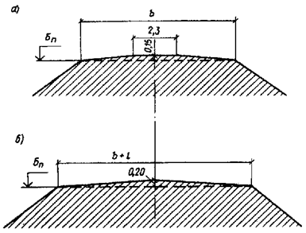
Рис. 1. Конструкция верха железнодорожного земляного полотна
а, б - из глинистых грунтов для однопутных и двухпутных дорог
Рис. 2. Конструкции земляного полотна
а - с полузаглубленной; б - с заглубленной балластной призмой; 1 - трубофильтр; 2 - положение дренажной трубы на выходе; отм. пл. - отметка поверхности планировки территории; hб - толщина балластной призмы
Рис. 3. Конструкции земляного полотна
а - с открытой балластной призмой; б - с заглубленной балластной призмой; hб - толщина балластной призмы; отм. пл. - отметка планировки территории предприятия
2.20. Крутизну откосов насыпей и выемок следует назначать в зависимости от вида грунта, высоты насыпи и глубины выемки с учетом инженерно-геологических, гидрологических и мерзлотных условий, а также способа производства работ и метода укрепления откосов согласно СНиП 2.05.07-85, п. 2.56.
2.21. Откосы насыпей, выемок и других грунтовых сооружений, подверженных разрушению под воздействием природных, техногенных и антропогенных факторов, должны быть укреплены. Тип укрепления следует назначать в зависимости от конструкции сооружения, интенсивности воздействия природных факторов и физико-механических свойств грунтов.
На подтопляемых откосах в укреплении следует предусматривать обратный фильтр из дренирующих грунтов или геотекстиля. Отметка верха укрепления подтопляемых откосов должна быть выше отметки наибольшего уровня воды, определяемого с учетом наката волны подпора воды на откос. На подходах к большим и средним мостам, а также на оградительных дамбах превышение должно быть не менее чем на 0,5 м, на подходах к малым мостам и трубам, а также на затопляемых регуляционных сооружениях и бермах - не менее чем на 0,25 м.
2.22. При сложных инженерно-геологических и гидрогеологических условиях крутизну откосов назначают:
в выемках глубиной более 12 м: в скальных слабовыветривающихся грунтах, при применении скважинных зарядов методом контурного взрывания допускается устройство вертикальных откосов;
В выемках глубиной до 6 м: в глинистых пылеватых грунтах в районах с избыточным увлажнением следует принимать 1 : 2, глубиной более 6 м - устанавливают расчетом;
в выемках, сооружаемых в легковыветривающихся скальных грунтах и в лессах, следует проектировать с учетом опыта строительства и эксплуатации земляного полотна в рассматриваемом районе;
в выемках в легковыветривающихся неразмягчаемых скальных грунтах - от 1 : 0,5 до 1 : 1,5;
в выемках глубиной до 2 м - 1 : 3 и более;
в выемках, сооружаемых в районах подвижных песков на участках с полузаросшей и заросшей растительностью, крутизну откосов разрешается принимать равной углу естественного откоса песка, но не более 1 : 1,5.
2.23. При проектировании откосов выемок на бортах карьеров высоту устойчивого откоса и его крутизну рекомендуется назначать по табл. 6.
Таблица 6
|
Средний размер блоков породы в массиве, м |
Высота откоса борта карьера, м |
Рекомендуемая крутизна откоса |
|
|
Монолитные |
Более 1,5 |
20 и более |
1 : 0,1 |
|
Крупноблочные (малотрещиноватые) |
1,5 - 1 |
До 20 |
1 : 0,1 - 1 : 0,2 |
|
Крупноблочные (среднетрещиноватые) |
1 - 0,5 |
До 16 |
1 : 0,2 |
|
Среднеблочные (трещиноватые) |
0,5 - 0,1 |
До 12 |
1 : 0,2 - 1 : 0,5 |
|
Мелкоблочные (сильнотрещиноватые) |
Менее 0,1 |
До 6 |
1 : 0,5 - 1 : 1 |
2.24. Откосы насыпей, сооружаемых из дренирующих грунтов над поверхностью болота, следует проектировать с уклоном 1 : 1,5, а из мелких и пылеватых песков - в верхней части насыпей с уклоном - 1 : 1,75, а также нижней, считая от поверхности болота на высоту 1 м, - 1 : 3.
2.25. Крутизна откосов насыпей, возводимых из песчаных грунтов, назначается с учетом вида грунта согласно табл. 7.
Таблица 7
|
Крутизна откосов |
|
|
Пески среднезернистые (на всю высоту насыпи) |
1 : 1,5 |
|
Пески мелкие, однородные и пылеватые (для отсыпки верхней части насыпи, выше капиллярного поднятия) на сухих основаниях |
1 : 1,75 |
|
Пески среднезернистые (для отсыпки нижней части насыпей на высоту капиллярного поднятия) на сырых и мокрых основаниях, представленных малопросадочными грунтами |
1 : 2 |
|
Пески мелкие, пылеватые (для отсыпки нижней части насыпи) на сырых и мокрых основаниях, представленных сильнопросадочными грунтами |
1 : 3 |
2.26. Крутизну откосов кюветов следует назначать с полевой стороны равной крутизне откосов выемки, а со стороны пути - 1 : 1,5.
Глубину кюветов следует принимать не менее 0,6 м, а ширину по дну - назначать 0,4 м. Для районов с сухим климатом допускается уменьшать глубину кюветов до 0,4 м.
В выемках при расположении путей на уклонах менее 2 ‰ в глубину кюветов в водораздельных (переломных) точках допускается уменьшать до 0,2 м.
В выемках, проектируемых в слабовыветривающихся скальных породах, вместо кюветов допускается устраивать бордюры из камня или бетонных блоков.
Кюветы в легковыветривающихся скальных грунтах допускается проектировать глубиной менее 0,4 м.
В скальных выемках для отвода воды можно использовать кювет-траншеи.
2.27. Размеры поперечного сечения кюветов, нагорных водоотводных канав следует определять расчетом с учетом расхода воды: с вероятностью превышения обеспечения 1 % на линиях категории IВ и 3 % на линиях категории IIВ.
Расчет выполняют по программе автоматизированного гидравлического расчета кюветов и канав (прил. 9).
2.28. Верх земляного полотна, присыпаемого для укладки второго пути, следует проектировать: при недренирующих грунтах с поперечным уклоном в сторону от существующего пути 0,04 в выемках и 0,02 в насыпях. С целью экономии балласта верхнюю часть примыкаемого земляного полотна (выше бровки существующего пути) следует отсыпать из дренирующего грунта.
2.29. Верх земляного полотна железнодорожных путей с заглубленным и полузаглубленным балластным слоем, а также земляного полотна, сооружаемого для укладки нескольких путей (более двух), проектируется односкатным или двускатным. При большем числе путей следует проектировать пилообразный поперечный профиль с устройством в пониженных местах водоотводных лотков.
2.30. Количество путей, располагаемых на одном скате, принимают в зависимости от вида грунта земляного полотна, материала балласта и условий увлажнения на основе технико-экономических расчетов, учитывающих затраты на балластировку и устройство водоотводных сооружений (лотков, дренажей).
Наибольшее число путей на одном скате в зависимости от вида грунта, материала балласта и условий увлажнения, а также величины уклонов скатов определяют по табл. 8.
Таблица 8
|
Материалы балластного слоя |
Степень увлажнения |
Наибольшее число путей на одном скате |
Уклон ската, ‰ |
|
|
Дренирующие |
Гравий, пески крупные и средние |
Малая |
10 и более |
0 |
|
То же, и ракушка |
Большая, средняя |
10 |
0 |
|
|
Недренирующие |
Гравий |
Малая |
10 - 8 |
1 |
|
То же, и ракушка |
Большая, средняя |
8 - 6 |
2 |
|
|
Пески мелкие |
Малая |
8 - 6 |
2 |
|
|
То же, и ракушка |
Большая, средняя |
3 - 2 |
2 |
2.31. Ширину насыпей, сооружаемых на вечномерзлых грунтах, назначают с учетом уширения ее за счет компенсации осадки грунтов основания и тела насыпи в результате оттаивания льдистых грунтов в эксплуатационный период - при подъеме пути на балласт.
Уширение основной площадки DВ определяют по формуле
DВ = 2m (Sн + Sо), (1)
где m - крутизна откоса балластной призмы, равная 1,5; Sн - осадка тела насыпи; sо - осадка основания насыпи.
При отсыпке насыпей талых и сыпучемерзлых грунтов при
Н £ 2, Sн = 0, Sэ = (3 - Н) 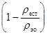
2 £ H £ 3, Sн = (H -
2) 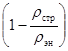
где ρстр, ρест - плотность грунтов тела насыпи и естественного основания в строительный период; ρэн, ρэо - плотность грунтов тела насыпи и естественного основания в эксплуатационный период.
2.32. Высоту насыпей и глубину выемок назначают при проектировании продольного профиля с учетом инженерно-геологических условий, уклонов местности и проектных уклонов пути.
2.33. Запас высоты насыпей, сооружаемых на вечномерзлых термопросадочных грунтах, следует определять по формуле
DН = Н + (2 - Н) , (4)
где Н £ 2 - высота насыпи, м.
2.34. Для выемок глубиной более 8,5 м и насыпей высотой 0,7 м и более, а также на косогорах и сильнозаносимых участках пути постоянные снегозащитные устройства не предусматриваются.
2.35. Высота насыпей на подходах к мостам и трубам определяется в зависимости от проектных решений, размеров отверстий постоянных мостов и труб, а также водного потока.
Размеры отверстий постоянных мостов и труб, а также высоту пойменных насыпей надлежит определять по расчетному расходу воды в соответствии с уровнем воды при вероятности превышения 2 %.
Расчет отверстий мостов и труб со сроком службы до 10 лет производится по расчетному расходу и уровню воды при вероятности превышения 10 %.
Для искусственных сооружений, проектируемых на путях промышленных предприятий, где не допускается перерыв движения по условиям технологии производства, вероятность превышения расчетных расходов и уровня воды следует принимать 1 %.
2.36. Вероятность превышения расчетных расходов и уровня воды для малых искусственных сооружений, расположенных на планируемых территориях и входящих в состав водоотводной сети, должны соответствовать вероятности превышения, принятой для расчета этой сети.
Вероятность превышения расчетных расходов для подводящих, отводящих и спрямляющих русел должна приниматься с учетом их значения и местных условий от 2 до 10 %.
2.37. Отметку бровки насыпи следует определять с учетом толщины засыпки над сводами мостов, принимаемой не менее 0,7 м, а над плитами перекрытия всех типов сооружений должно быть не менее 1 м (для металлических гофрированных труб не менее 1,2 м), считая от поверхности свода или трубы до подошвы рельса.
2.38. Расстояние от высшей точки внутренней поверхности труб до поверхности воды в трубе при расчетном расходе и безнапорном режиме должно быть: в круглых и сводчатых трубах - не менее 1/4 высоты трубы; при высоте их до 3 м - не менее 0,75 м; при высоте трубы более 3 м - не менее 0,5 м; в прямоугольных трубах - не менее 1/6 высоты трубы.
2.39. Полунапорный, а при устройстве обтекаемых входных оголовков и напорный режим для труб допускается при наличии фундаментов и только в расчете на пропуск наибольшего расхода водотока.
Для труб, располагаемых в Северной строительно-климатической зоне, не допускается полунапорный и напорный режим, за исключением случаев расположения труб на скальных грунтах.
2.40. При проектировании плана и продольного профиля линии отверстия и высоту труб в свету следует назначать не менее 1 м, а при длине трубы свыше 20 м - не менее 1,25 м; в районах Северной строительно-климатической зоны - не менее 1,5 м независимо от длины трубы.
На планируемой территории в особых случаях допускается применять круглые трубы отверстием 0,75 м при их длине не более 25 м, прямоугольные трубы отверстием 0,5 м при их длине не более 15 м.
При наличии вблизи искусственных сооружений населенных пунктов или промышленной и другой застройки необходимо проверять расчетом безопасность строений и угодий от подтопления их водой.
2.41. При проектировании переездов и переходов в одном уровне допускается увеличивать отверстие мостов и труб для использования их в качестве пешеходных переходов, скотопрогонов и в случае технико-экономической целесообразности - для пропуска автомобильного транспорта.
2.42. При проектировании насыпей в районах распространения вечной мерзлоты их высоту следует назначать при соблюдении следующих условий:
снегонезаносимости земляного полотна;
возвышения бровки насыпи над уровнем воды расчетной повторяемости, подпора и высоты наката волны на откос на участках подтопления;
сохранения грунтов основания в мерзлом состоянии на сильнопросадочных, низкотемпературных вечномерзлых грунтах;
возвышения основной площадки над капиллярным поднятием воды в теле насыпи с целью обеспечения динамической устойчивости;
исключения образования пучин на мокрых и обводненных основаниях.
Минимальную высоту насыпи назначают: на непросадочных и малопросадочных грунтах основания I и II категории термопросадочности из условия возвышения основной площадки выше капиллярного поднятия на 0,3 - 0,5 м; на просадочных и сильнопросадочных грунтах III - IV категории термопросадочности из условия сохранения естественного положения или повышения верхней границы вечной мерзлоты над насыпью; на участках повышенной снегозаносимости из условия возвышения бровки земляного полотна над поверхностью снежного покрова на 0,5 м, считая по замерам в марте - апреле над наивысшими элементами рельефа (ландшафтами) или кустарником, расположенными на расстоянии до 30 м от оси земляного полота; на участках подтопления - из условия возвышения бровки откоса на 0,5 м над расчетной высотой наката волны на откос.
2.43. Конструкции земляного железнодорожного полотна (насыпей) на сухом и прочном основании из глинистых грунтов проектируются высотой до 6 м с откосами по расчету, а более 6 м - с применением программы для автоматизированного расчета устойчивого поперечного профиля насыпей согласно прил. 2 (рис. 4).
2.44. Проектирование насыпей на прочном и устойчивом основании следует производить по типовым поперечным профилям:
при поперечном уклоне косогора не более 1 : 3, высотой насыпи до 12 м, сооружаемых из крупнообломочных, дренирующих и глинистых грунтов твердой и полутвердой консистенции (рис. 5);
при высоте насыпи до 6 м из глинистых тугопластичных грунтов (рис. 4, а);
при высоте насыпи до 20 м из камня (рис. 4, б).
По типовым конструкциям проектируются насыпи на болотах: I - II типа глубиной до 4 м, II типа глубиной 4 - 6 м; при поперечном уклоне дна болота I типа - не более 1 : 10, II типа - 1 : 15, III типа - 1 : 20.
Насыпи на естественном основании из засоленных грунтов и в районах подвижных песков назначаются по индивидуальным проектам.
Для насыпей типовых конструкций используется грунт из карьеров, резервов, выемок, а также металлургический шлак.
2.45. Состав работ по подготовке оснований насыпей зависит от высоты насыпи, поперечного уклона местности, грунтов основания и включает: удаление дерна под насыпями высотой до 0,5 м - на равнинных участках местности и на косогорах крутизной до 1 : 10; под насыпями высотой до 1 м - на косогорах крутизной до 1 : 10 до 1 : 5; рыхление поверхности основания насыпей высотой более 1 м на косогорах крутизной от 1 : 10 до 1 : 5; удаление дерна и нарезка уступов шириной от 2 до 4 м, высотой до 2 м - на косогорах крутизной от 1 : 5 до 1 : 3 независимо от высоты насыпи (рис. 5).
Подготовка основания не предусматривается для насыпей на косогорах, сложенных дренирующими грунтами и не имеющих растительного покрова. Необходимость подготовки основания насыпей, размещаемых на косогорах, сложенных скальными породами, следует устанавливать в зависимости от местных условий.
Уступам, в основании насыпей на косогорах следует давать уклон в низовую сторону 0,01 - 0,02. Стенки уступов при высоте насыпи до 1 м можно назначать вертикальными, а до 2 м - с уклоном 1 : 0,5.
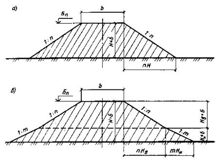
Рис. 4. Конструкции насыпей
а - высотой до 6 м из глинистых тугопластичных грунтов; б - то же, высотой более 6 м; нижняя часть насыпи с пологими откосами; Н - высота насыпи
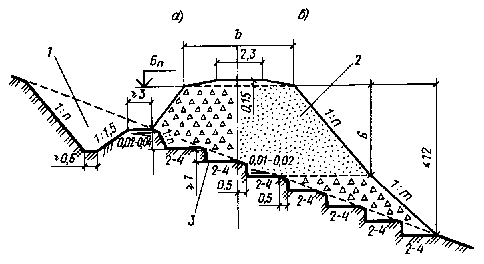
Рис. 5. Конструкции насыпей
а - из крупнообломочных; б - дренирующих грунтов на косогорных участках крутизной от 1 : 5 до 1 : 3; 1 - нагорная канава; 2 - грунт насыпи; 3 - уступы на склоне
2.46. Конструкции земляного полотна индивидуального проектирования применяются при сложных инженерно-геологических условиях оснований и грунтов, из которых оно возводится, а поперечный профиль должен быть проверен расчетом по программам автоматизированного проектирования, приведенным в прил. 6.
2.47. Индивидуальному проектированию подлежат:
насыпи высотой более 12 м из крупнообломочных и глинистых твердых и полутвердых грунтов;
насыпи высотой более 6 м из глинистых тугопластичных грунтов;
насыпи высотой более 20 м из скальных материалов;
насыпи в пределах болот I и III типа глубиной более 4 м и болот II типа глубиной более 3 м;
насыпи, сооружаемые на болотах I типа при поперечном уклоне дна круче 1 : 10, II типа - 1 : 15, III типа - 1 : 20, а также в пределах болот с торфом различной консистенции, не поддающихся классификации;
насыпи в пределах участков со слабыми естественными основаниями, в том числе в местах размещения водопропускных сооружений, а также при выходе ключей в пределах основания; на участках временного подтопления, а также на участках пересечения водоемов и водотоков; на косогорах круче 1 : 5, сложенных скальными породами;
выемки в нескальных грунтах глубиной более 12 м и в скальных более 16 м при благоприятных инженерно-геологических условиях;
выемки глубиной менее 16 м в скальных породах при неблагоприятных инженерно-геологических условиях, в том числе при залегании пластов горных пород с уклоном более 1 : 3 в сторону полотна;
выемки в глинистых переувлажненных грунтах с коэффициентом консистенции более 0,5;
выемки, пересекающие водоносные горизонты;
выемки глубиной более 6 м в глинистых пылеватых грунтах в районах с избыточным увлажнением, а также в глинистых грунтах, резко снижающих прочность и устойчивость в откосах при воздействии климатических факторов;
насыпи, полунасыпи и выемки, проектируемые на участках развития оползней, осыпей, каменных россыпей (курумов), снежных лавин, селей и отвалов горных предприятий, а также карстовых воронок, провалов, наледей на склонах, подземного льда, в случае залегания в основании земляного полотна сильнонабухающих, просадочных и засоленных грунтов;
если земляное полотно (насыпи) сооружается методами гидромеханизации или взрывным способом.
2.48. В районах распространения вечномерзлых грунтов индивидуальному проектированию подлежат участки: производства земляных работ с использованием твердомерзлых песчаных грунтов (см. прил. 5); способом гидромеханизации; периодического подтопления и пересечения трассой водотоков; на косогорах крутизной до 1 : 3, сложенных грунтами III и IV категории термопросадочности, подверженных солифлюкционным процессам и оврагообразованию, из скальных, крупнообломочных и песчаных сыпучемерзлых грунтов III и IV категории термопросадочности; близкого залегания подземных вод; выемок, проектируемых в грунтах III и IV категории термопросадочности; выемок с переносом снега объемом более 200 м на 1 м пути; трасс, пересекающих бугры пучения; пересечения трассой дороги нефтегазопроводов, дорог и других сооружений.
2.49. В проектах земляного полотна следует предусматривать работы по уплотнению насыпей, сооружаемых из всех видов грунтов, кроме слабовыветривающихся скальных. Для верхней части насыпи, возводимой из скальных слабовыветривающихся грунтов, следует применять щебень.
Уплотнение скальных грунтов в насыпях из легковыветривающихся грунтов (аргиллитов, алевролитов, глинистых сланцев и т.п.), а также крупнообломочных грунтов, в том числе с глинистым заполнителем, производится: необходимым числом проходов уплотняющихся катков, определяемых по данным предварительного пробного уплотнения; ограничением толщины отсыпаемых слоев и размеров отдельных камней.
2.50. Необходимо предусматривать в проекте насыпей запас высоты на осадку грунтов за счет их уплотнения в эксплуатационный период согласно табл. 9.
Таблица 9
|
Запас высоты насыпи от проектной, % |
|
|
Насыпи из скальных и крупнообломочных грунтов при послойной отсыпке с применением уплотняющих машин |
3 |
|
Насыпи из песчаных и глинистых грунтов, возводимые с коэффициентом уплотнения 0,9 |
1 - 2,5 |
|
Насыпи из глинистых переувлажненных грунтов |
2 - 3 |
|
Насыпи, отсыпаемые из скальных и галечно-гравийных грунтов в зимнее время |
8 - 10 |
Примечание. Большие значения относятся к насыпям, сооружаемым в сроки до 6 мес из грунтов с влажностью, близкой к предельно допустимой.
2.51. Требуемую плотность песчаных и глинистых грунтов в теле насыпи ρнск, г/см3, определяют по формуле
ρнск = Ку ρdmax, (5)
где ρdmax - максимальная плотность грунта при оптимальной влажности, определяемая по методу стандартного уплотнения; Ку - минимальный коэффициент уплотнения, принимаемый 0,9 по всей высоте насыпи.
2.52. Уменьшение коэффициента уплотнения песчаных и глинистых грунтов по сравнению с нормативным допускается для насыпей в случаях, когда невозможно достижение этих значений по физическим свойствам грунтов с малой влажностью, в том числе сухих барханных песков или переувлажненных глинистых грунтов.
Уменьшение значения коэффициента уплотнения следует принимать на основе данных стандартного уплотнения, а также предусматривать дополнительные меры, обеспечивающие общую устойчивость земляного полотна и прочность его основной площадки с обоснованием решений технико-экономическими расчетами.
2.53. Фактический объем грунта, необходимого для насыпей, Vн.ф в случаях, когда требуемая плотность грунта в теле насыпи больше естественной плотности грунта в резерве (карьере), определяется по формуле (6)
где Vн - объем проектируемой насыпи, м3; K1 - коэффициент относительного уплотнения грунта в теле насыпи, определяемый по формуле
К1 = 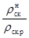
где ρнск, ρск.р - плотность грунта, г/см3, требуемая в насыпи, и естественная в резерве или карьере.
2.54. Для насыпей следует применять преимущественно грунты, имеющие оптимальную влажность wо.
Если природная влажность используемых глинистых грунтов ниже 0,9Wо, а песков менее 4 %, необходимо искусственное увлажнение их до получения оптимальной влажности.
2.55. Максимальная влажность Wпp, при которой будет обеспечена требуемая плотность грунта в насыпях, устанавливается графически по кривой стандартного уплотнения данного грунта или определяется по формуле
Wp +
0,25Ip і Wпp
= ρw 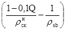
где Iр - число пластичности, равное: Iр = wl - Wp, %; ρнск - требуемая плотность грунта в теле насыпи, г/см3; Q - содержание воздуха в порах грунта (в супесях - 5 %, в суглинках и глинах 3 - 4 %); ρw - плотность воды, принимаемая равной 1 г/см3; ρsb - плотность грунта (при отсутствии лабораторных данных его значение можно принимать для супесей - 2,68, суглинков - 2,7, глин - 1,74 г/см3).
2.56. Насыпи на сыром и мокром основаниях в I - III дорожно-климатических зонах следует проектировать преимущественно из дренирующих грунтов.
При использовании дренирующих грунтов для возведения насыпи на всю высоту или нижней ее части специальных мероприятий по обеспечению ее устойчивости не требуется.
2.57. Глинистые грунты, мелкие и пылеватые пески, а также другие недренирующие грунты допускается применять для возведения насыпей на сыром и мокром основаниях только при соблюдении следующих условий:
влажность грунта должна удовлетворять требованиям п. 2.55 настоящего Пособия и обеспечить устойчивость и прочность грунтов земляного основания, в том числе осушение грунтов основания посредством устройства углубленных водоотводных канав, берм.
Рис. 6. Конструкции насыпи с гидроизоляционным покрытием
1 - канава; 2 - полка; 3, 4 - верхний и нижний песчаные слои; 5 - суглинистый слой; 6 - балластный слой; ГГВ - горизонт грунтовых вод
2.58. Возвышение бровки земляного полотна над поверхностью земли, расчетным уровнем поверхностных вод, стоящих более 20 суток, или над уровнем подземных грунтовых вод следует назначать по табл. 3 настоящего Пособия с учетом минимальной высоты насыпей, устанавливаемых по условиям незаносимости снегом или песком, предохранения от перелива воды на участках подтопления.
2.59. Величину возвышения бровки насыпи допускается уменьшать по сравнению с данными табл. 3 на основе опыта эксплуатации в районе строительства, но не более чем в 1,5 раза.
Величина возвышения бровки земляного полотна для насыпей, проектируемых из крупных песков или других грунтов, сохраняющих устойчивость во влажном состоянии, не нормируется.
За расчетный уровень грунтовых вод надлежит принимать расчетный осенний уровень, а при отсутствии необходимых исходных данных - наивысший возможный уровень, определяемый по табл. 3.
Когда выполнение требований по возвышению бровки земляного полотна над уровнем поверхностных или грунтовых вод экономически нецелесообразно, следует предусматривать дренажи для понижения уровня грунтовых вод или их перехвата, замену грунтов, устройство изолирующих прослоек из суглинистого слоя (рис. 6) или гидроизоляционных песчаных слоев на основной площадке (рис. 7).
2.60. Изолирующие прослойки следует предусматривать преимущественно в пределах IV и V дорожно-климатических зон, а капилляропрерывающие прослойки - в пределах II и III зон.
В качестве изолирующих прослоек применяют изоляцию из шлакогрунтобетона, асфальтовое покрытие, толь, рубероид. Гидроизоляционная защита может быть создана путем укладки 2 слоев геотекстиля, разделенных пленкой из полимерных материалов, или 2 слоев песка толщиной по 5 - 10 см с полимерной пленкой между ними.
Гидроизоляционный слой укладывают на глубину 0,4 - 0,5 м от верха балластной призмы, что целесообразно в комплексе с устройством поддерживающих сооружений.
Рис. 7. Конструкция насыпи с гидроизоляционными песчаными слоями на основной площадке земляного полотна
1 - грунт насыпи; 2, 3 - нижний и верхний слои песка; 4 - балластный слой; 5 - грунт основания насыпи
Применяемый в качестве гидроизоляции асфальтобетон на основе грубозернистых заполнителей и песка должен иметь толщину 10 - 15 см.
Расстояние между нижней гранью гидроизоляции и наивысшим уровнем грунтовых вод или расчетным уровнем длительно стоящих поверхностных вод следует назначать не менее 0,2 м.
2.61. Глинистые грунты тугопластичной консистенции 0,25 < IL £ 0,5 допускается применять для насыпей на естественном сухом или осушенном основании. Допускается применять грунт с влажностью, при которой может быть достигнута плотность грунта в теле насыпи с коэффициентом уплотнения не менее 0,9. Наибольшее значение влажности W, удовлетворяющее этому условию, определяется по формуле
W = 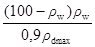
2.62. Насыпи из переувлажненных глинистых грунтов следует проектировать согласно рис. 8. Толщина верхнего слоя дренирующего грунта должна быть определена с учетом местных природных грунтов.
2.63. В проектах насыпей из переувлажненных глинистых грунтов необходимо предусматривать осадку по высоте или ширине.
Верх земляного полотна из переувлажненных глинистых грунтов в местах сопряжения с земляным полотном из непереувлажненного глинистого или дренирующего грунта следует проектировать с продольным уклоном не круче 0,05. При необходимости во всех дорожно-климатических зонах в основании насыпи назначается слой дренирующего грунта толщиной 0,3 - 0,4 м.
При технико-экономическом обосновании можно предусматривать мелиоративные мероприятия по осушению грунтов в резервах или карьерах посредством обработки негашеной известью или другими осушающими добавками, например золой ТЭЦ.
Рис. 8. Конструкция насыпи высотой до 6 м из глинистых переувлажненных грунтов
1 - грунт насыпи; 2 - балластный слой; 3 - обочина
2.64. Насыпи на болотах следует проектировать с учетом: глубин и типа болот, категории железнодорожного пути, вида используемого грунта, высоты насыпи по проектному профилю, уклона минерального дна болота, рельефа местности.
Классификация болот приведена в п. 2.6 настоящего Пособия, а разновидности торфа и физико-механические характеристики болотных отложений определяются по данным инженерно-геологических изысканий.
2.65. При проектировании насыпей на болотах необходимо соблюдать следующие правила:
пересечение болота трассой должно быть в наиболее узких местах преимущественно на участках с меньшей глубиной и минимальным поперечным уклоном минерального дна;
время стабилизации осадок насыпей должно ограничиваться строительным периодом;
предусматривать осушение болота до начала производства земляных работ в случаях, когда это технически возможно и экономически целесообразно;
сооружать насыпи преимущественно из дренирующих грунтов на всю ее высоту, нижнюю часть насыпи проектировать только по расчету.
2.66. При отсутствии дренирующих грунтов для насыпей на болотах I и II типа допускается применять пылеватый песок или супесь легкую. Применение этих грунтов для насыпей на болотах III типа, а также других глинистых грунтов на болотах всех типов допускается только для верхней подземной части насыпей при соблюдении следующих условий:
для нижней части насыпей необходимо использовать дренирующие грунты;
величину возвышения бровки нижней части насыпи из дренирующих грунтов над поверхностью болота или над уровнем горизонта воды следует назначать не менее 0,5 м;
поперечный профиль надземной части насыпи и очертание ее верха следует проектировать соответственно составу, состоянию и свойствам применяемого глинистого грунта или пылеватого песка.
2.67. Величину возвышения бровки насыпей над поверхностью болот следует назначать по табл. 10.
Таблица 10
|
Величина возвышения бровки над поверхностью, м |
||
|
болота |
уровня грунтовой воды |
|
|
Дренирующий |
0,8 - 1,2* |
1 |
|
Песок мелкий, супесь легкая |
1,2 |
1,2 |
|
Песок пылеватый, супесь легкая |
2 |
- |
* При полном или частичном удалении торфа в основании насыпи.
Насыпи из пылеватого песка и легкой супеси, сооружаемые в пределах уже осушенных или осушаемых болот, допускается проектировать высотой 2 м и более, считая от уровня грунтовых или поверхностных вод, наблюдаемых в водоотводных канавах.
2.68. Насыпи на болотах могут устраиваться с полным удалением торфа и с посадкой их на минеральное дно.
При глубине болота до 2 м насыпи опускаются за счет выторфовывания на минеральное дно болота (рис. 9, 10), при глубине болота от 2 до 4 м насыпи могут сооружаться с частичным выторфовыванием (рис. 12, 13) или без выторфовывания болота (рис. 11). Толщину отсыпаемого слоя насыпи на болотах I типа принимают не менее 2,5 м.
Насыпи на болотах II и III типа опускаются на минеральное дно (рис. 10, 11).
2.69. На болоте I типа насыпь высотой до 3 м следует проектировать с расчетом на полное или частичное удаление торфа из основания с заменой торфа минеральным грунтом в зависимости от глубины болота. Частичное удаление торфа допускается под насыпями из дренирующих грунтов высотой до 3 м, на болоте I типа, глубиной 2 - 4 м. Глубину траншей, сооружаемых для замены торфа на дренирующий грунт, назначают исходя из суммы высоты насыпи над поверхностью болота и глубины траншеи выторфовывания, которая должна быть не менее 3 м. Отношение общей высоты насыпи Н, включающей часть, расположенную ниже поверхности болота, и величину расчетной осадки S к толщине уплотненного слоя торфа в основании насыпи hб должно быть не менее 2 : 1. Крутизну откоса траншеи выторфовывания 1 : m следует устанавливать в зависимости от способа производства работ - от 1 : 0 до 1 : 0,5.
2.70. Насыпи высотой более 3 м, сооружаемые на болотах I типа глубиной более 4 м, проектируют в соответствии с поперечным профилем (рис. 14) с расчетом использования торфа в качестве естественного основания земляного полотна.
В этом случае, а также при частичном выторфовывании объемы земляных работ необходимо определять с учетом осадки насыпи вследствие сжимаемости торфа в основании земляного полотна.
2.71. Величину осадки насыпей высотой до 4 м разрешается определять на стадии разработки проекта согласно табл. 11; величину осадки у краев траншей выторфовывания S при проектировании насыпей из пылеватых песков и легких супесей (рис. 14) допускается принимать равной 10 % толщины обжимаемого слоя торфа.
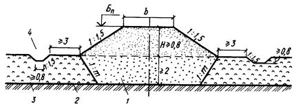
Рис. 9. Конструкция насыпи высотой до 3 м на болоте I типа, глубиной до 2 м, из дренирующих грунтов
1 - дренирующий грунт; 2 - минеральное дно болота; 3 - торф; 4 - канава; Н - высота насыпи
Рис. 10. Конструкция насыпи на болоте II типа из дренирующих грунтов
1 - дренирующий грунт; 2 - минеральное дно болота; 3 - торф; 4 - канава; Н - высота насыпи
Рис. 11. Конструкция насыпи на болоте III типа со сплавиной, глубиной более 4 м, из дренирующих грунтов высотой более 0,8 м
1 - дренирующий грунт; 2 - минеральное дно болота; 3 - сплавина из торфа; 4 - берма; Н - высота насыпи
Рис. 12. Конструкции насыпей высотой до 3 м, на болоте I типа, глубиной 2 - 4 м
а - из дренирующих грунтов; б - из песков мелких и супесей пылеватых; 1 - поверхность болота; 2 - минеральное дно болота; 3 - торф; 4 - канава; 5 - грунт насыпи; hз - глубина замены грунта на дренирующий; h0 - мощность торфа под основанием насыпи; S - осадка основания насыпи, назначаемая по расчету; hв - глубина выторфовки; Нр - высота насыпи по расчету
2.72. Осадку основания насыпей высотой более 4 м при необходимости уточнения объемов земляных работ рассчитывают по формуле
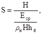
где Н - высота насыпи; ρн - плотность грунта насыпи, г/см3; hб - суммарная мощность сжимаемых слоев болотных отложений; Еср - средний модуль деформации сжимаемых слоев, кПа, определяемый по формуле
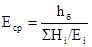
где Hi - мощность отдельных слоев торфа, ила, см; Ei - модуль деформации отдельных слоев торфа, устанавливаемый в зависимости от показателей состава и состояния торфяных отложений.
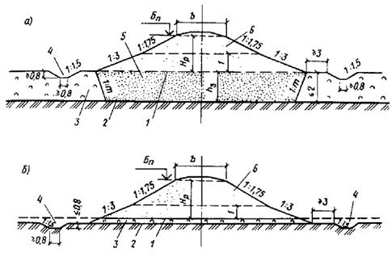
Рис. 13. Конструкции насыпей высотой более 3 м на болоте I типа, глубиной до 2 м
а - из мелких песков и пылеватых; б - из супесей легких с поперечным уклоном минерального дна болота не круче 1 : 10; 1 - поверхность болота; 2 - поверхность минерального дна болота; 3 - торф; 4 - канава; 5 - дренирующий грунт; 6 - грунт насыпи; hз - глубина замены торфа на дренирующий грунт; Нр - расчетная высота насыпи
Насыпи, сооружаемые на болотах II типа, необходимо проектировать независимо от их высоты, при полном удалении торфа устойчивой консистенции и посадки насыпи на минеральное дно болота (рис. 15).
Глубину торфоприемников следует назначать равной толщине почвенно-растительного покрова, но не менее 1 м.
2.73. В лесных районах взамен выторфовывания допускается устройство насыпей на сланях при технико-экономическом обосновании проектного решения и соблюдении следующих условий: общая высота насыпей под поверхностью сланей с учетом ее просевшей части должна быть не менее 3 м; в период эксплуатации дороги слани должны находиться постоянно ниже уровня грунтовых вод.
2.74. Осадка основания насыпи S на болотах III типа определяется по формуле
S = Sсж + Sвыд, (12)
где Sсж - осадка за счет сжатия более прочных слоев болотных отложений; Sвыд - осадка за счет выдавливаемой части болотных отложений, не обладающих несущей способностью, равная суммарной мощности этих отложений.
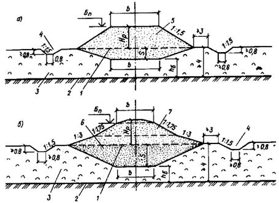
Рис. 14. Конструкции насыпей высотой более 3 м на болоте I типа с толщиной торфа более 4 м
а - из дренирующих грунтов; б - из песка мелкого и супеси пылеватой; 1 - поверхность болота; 2 - поверхность минерального дна болота; 3 - торф; 4 - канава; 5 - дренирующий грунт; 6 - песок мелкий пылеватый; 7 - супесь пылеватая; S - осадка основания насыпи; Нр - расчетная высота насыпи; h - толщина слоя торфа под насыпью
Таблица 11
|
Осадки основания насыпей S, % от ho при высотах насыпей, м |
||
|
1,2 - 3 (при частичном выторфовывании) |
3 - 4 (без выторфовывания) |
|
|
2 |
30 |
60 |
|
Св. 2 до 4 |
25 |
50 |
2.75. Устойчивость
основания и необходимость ограничения режима ее отсыпки устанавливаются по
данным расчетов. При быстрой отсыпке насыпи устойчивость основания определяется
по величине коэффициента безопасности 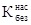
= Еб /Fv; (13)
Fv = ρн; (14)
Fб = Ао tкр, (15)
где Fv - расчетное значение вертикальной силы, кПа; Fб - безопасное значение вертикальной сипы, кПа; tкр - расчетная величина полной сопротивляемости грунта основания сдвигу в кПа, определяемая при инженерно-геологических изысканиях с помощью лопастного прибора (крыльчатки, СК-8, СК-10); Ао - параметр, зависящий от очертания насыпи и относительной глубины расположения расчетного слоя, определяемый по табл. 12; ρн - плотность грунта насыпи, г/см3.
Рис. 15. Конструкции насыпи на болоте II типа глубиной более 3 м
а - из песков мелких и пылеватых; 1 - поверхность болота; 2 - поверхность минерального дна болота; 3 - торф; 4 - канава-торфоприемник; 5 - песок мелкий пылеватый; 6 - супесь легкая; Нр - расчетная высота насыпи
Устойчивость основания считается полностью обеспеченной независимо от интенсивности возведения насыпи при условии
> 1. (16)
При меньшем значении Kбез типовая конструкция насыпи допускается к применению при условии обеспечения необходимого режима отсыпки, устанавливаемого расчетом.
2.76. Насыпи высотой до 3 м на болотах III типа следует проектировать с полным удалением торфа и посадкой на минеральное дно или без выторфовывания. В обоих случаях необходимо проводить технико-экономические сравнения. Величину осадки насыпи за счет сжатия торфяной корки следует определять согласно табл. 11.
Таблица 12
|
Ао |
|
|
0,1 |
5,25 |
|
0,2 |
3,84 |
|
0,3 |
3,51 |
|
0,4 |
3,34 |
|
0,6 |
3,23 |
2.77. Для нижней части насыпи необходимо предусматривать применение дренирующего грунта. Крутизну откосов насыпи ниже поверхности болота следует назначать по табл. 13.
Таблица 13
|
Крутизна откосов котлована под замену дренирующим грунтом |
|
|
Песок мелкий и пылеватый |
1 : 4 |
|
Песок крупный и средней крупности |
1 : 2 |
|
Гравий, галька, щебень, камень слабовыветривающихся пород |
1 : 1,5 |
2.78. Насыпи высотой до 4 м можно проектировать без выторфовки или с частичной выторфовкой, но необходимо предусматривать статическое и динамическое испытание готового земляного полотна.
При сооружении насыпей на болотах всех типов должны быть соблюдены требования по снегонезаносимости, недопустимости осадок и пучения грунтов; для обеспечения устойчивости и уменьшения упругих деформаций и осадок под поездами сооружаются бермы, определяемые расчетом.
2.79. По степени засоленности все грунты подразделяются на незасоленные и засоленные, ГОСТ 25100-82 (табл. 14).
2.80. Земляное полотно на участках засоленных грунтов следует проектировать с учетом степени засоленности и вида засоления (хлоридное и сульфатно-хлоридное; сульфатное, хлоридно-сульфатное и содовое), а также пригодности засоленных грунтов для сооружения земляного полотна (прил. 1).
Химические анализы проб засоленных грунтов должны характеризовать грунт с наибольшей концентрацией солей, которая обычно наблюдается в июле - августе, а на орошаемых землях - осенью. При химическом анализе водной вытяжки из грунта определяются следующие компоненты: Cl′, SO4′′, НСО3′, Na+ + К+, Са′′, Mg′′, сухой остаток и рН. Пробы грунта отбираются из основания насыпей на каждом засоленном участке трассы не менее 3, из резервов местных грунтов и карьеров по 3 - 4 пробы.
2.81. Слабо- и среднезасоленные грунты допускаются использовать для насыпей типовой конструкции в следующих случаях: при сильнозасоленных грунтах только на участках с сухим или осушаемым основанием и глубоким залеганием грунтовых вод при обязательном применении мер, направленных на предохранение верхней части земляного полотна от большего засоления; при дренирующих грунтах для возведения всей насыпи или нижней части на высоту не менее 0,7 м при наличии грунтовых вод, периодически выходящих на дневную поверхность; насыпей из мелких и пылеватых песков, глинистых и других недренирующих песков назначать не менее величины, приведенной в табл. 13; при удалении рыхлого поверхностного слоя грунта толщиной 0,5 м с засоленностью более 10 % с заменой его качественным грунтом, применительно к рис. 16, а, а под насыпями высотой до 6 м, на участках с сухим естественным основанием и глубоким залеганием грунтовых вод применительно к рис. 16, б - на участках с неглубоким залеганием грунтовых вод, периодически выходящих на дневную поверхность, рекомендуется применение дренажных и водоотводных устройств, понижающих уровень грунтовых вод.
Таблица 14
|
Степень засоления |
Содержание легко- и среднерастворимых солей, % от массы сухого грунта |
|
|
Осадочные сцементированные, метаморфические и магматические |
Незасоленные |
Менее 2 |
|
Засоленные |
2 и более |
|
|
Осадочные несцементированные |
Незасоленные |
Менее 2 (при содержании песчаного заполнителя менее 40 % или пылеватого и глинистого заполнителя менее 30 %). Менее 0,5 (при содержании песчаного заполнителя 40 % и более) |
|
Засоленные |
Менее 5 (при содержании пылеватого и глинистого заполнителя 30 % и более, чем у незасоленных грунтов) |
|
|
Обломочные песчаные |
Незасоленные |
Менее 0,5 |
|
Засоленные |
0,5 и более |
|
|
Песчаные грунты в мерзлом состоянии |
|
Св. 0,1 |
|
Супеси и суглинки |
Незасоленные |
Менее 5 |
|
Засоленные |
5 и более |
|
|
Супеси, суглинки и глины в мерзлом состоянии |
Засоленные |
Для супесей более 0,15 |
|
« суглинков « 0,2 |
||
|
« глины « 0,25 |
2.82. При сильнозасоленных глинистых грунтах и нецелесообразности возвышения бровки насыпи над уровнем грунтовых вод до величин, указанных в табл. 10, необходимо предусматривать устройство капилляропрерывающих или гидроизолирующих прослоек.
2.83. Насыпи с резервами следует проектировать на участках с залеганием уровня грунтовых вод на глубине не менее 1 м. При этом расстояние от дна резерва до наивысшего уровня грунтовых вод должно быть не менее 0,3 м.
Насыпи без резервов применяются на участках с высоким уровнем залегания грунтовых вод и сооружаются, как правило, из привозного грунта. В случаях использования местного грунта его заготовку необходимо предусматривать посредством равномерной срезки поверхностного слоя толщиной 0,2 - 0,3 м в пределах полосы шириной 25 - 30 м в каждую сторону от оси земляного полотна.
Рис. 16. Конструкция насыпи высотой более 0,6 м на засоленных грунтах
а - на сухом основании из дренирующих грунтов; б - на участках с неглубоким залеганием уровня грунтовых вод, периодически выходящих на дневную поверхность; 1 - поверхность земли; 2 - канава; 3 - дренирующий грунт; hз - глубина замены засоленного грунта на дренирующий грунт; Н - высота насыпи
Для лучшего отвода воды вдоль краев резервов следует устраивать продольные канавы. На солончаках и солонцах, где отвод воды из резервов будет затруднен, необходимо проектировать бермы.
При одновременном проектировании земляного полотна и ирригационной сети разрешается совмещать резервы с открытыми дренами и коллекторами глубиной до 3 м.
2.84. На участках мокрых солончаков, где уровень грунтовых вод залегает на глубине менее 0,6 м в течение всего года, насыпи следует проектировать из привозных, преимущественно песчаных грунтов или супесей; в пределах распространения такыров насыпи проектируют высотой не менее 0,5 м, а вдоль полевой стороны резервов предусматриваются валики высотой 0,3 - 0,4 м из местного грунта.
2.85. Выемки проектируют в зависимости от: их глубины, определяемой по профилю; инженерно-геологических и гидрогеологических условий; снегонезаносимости; пучинистости грунтов и их устойчивости в откосах и основной площадки. Крутизна откосов назначается по табл. 13.
2.86. Конструкцию выемок глубиной до 12 м в глинистых грунтах (непылеватых и непереувлажненных) следует проектировать в соответствии с поперечным профилем, приведенным на рис. 17.
Выемки глубиной до 6 м, сооружаемые в районах с засушливым климатом, в дренирующих грунтах проектируются по профилю, приведенному на рис. 18.
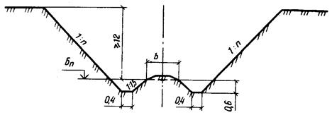
Рис. 17. Конструкция выемки глубиной до 12 м в глинистых грунтах
Рис. 18. Конструкция выемки глубиной до 6 м в дренирующих грунтах в районах с засушливым климатом
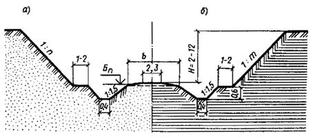
Рис. 19. Конструкция выемки глубиной от 2 до 12 м с закюветными полками
а - в песках пылеватых; б - в глинах
Выемки глубиной от 2 - 12 м с закюветными полками в мелких и пылеватых песках, а также в глинах следует проектировать по профилю, приведенному на рис. 19.
Конструкции выемок в скальных легковыветривающихся неразмягченных грунтах с треугольными кюветами и кювет-траншеями приведены на рис. 20.
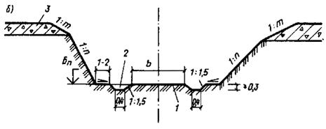
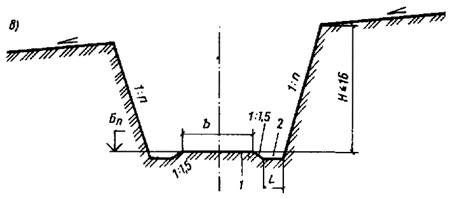
Рис. 20. Конструкции выемок в скальных грунтах
а - легковыветривающихся; б - легковыветривающихся неразмягчаемых; в - легковыветривающихся неразмягчаемых с кювет-траншеями; 1 - грунт в естественном залегании или подготовка из крупнообломочного грунта; 2 - кювет-траншея; 3 - элювиально-делювиальные грунты; L - ширина траншеи
Рис. 21. Конструкция выемки в переувлажненных глинистых грунтах с закюветными полками глубиной по расчету
1 - переувлажненный глинистый грунт; 2 - дренирующий грунт; 3 - закюветная полка; 4 - канава; Нр - расчетная глубина выемки; hз - глубина замены на дренирующий грунт
Рис. 22. Конструкция выемки глубиной до 12 м на местности с уклоном круче 1 : 3
а - в песках мелких, пылеватых, глинистых пылеватых, в том числе лессовидных; б - в лессах сухих, в районах с засушливым климатом; 1 - песок мелкий; 2 - глина пылеватая; 3 - нагорная канава; 4 - лесс сухой; 5 - полка; 6 - кювет
Выемки глубиной по расчету, в переувлажненных глинистых грунтах, с закюветными полками проектируют по поперечному профилю, приведенному на рис. 21.
Конструкции выемок в районах с засушливым климатом глубиной до 12 м, на местности с уклоном не более 1 : 3 в песках мелких и пылеватых, глинистых пылеватых, в том числе лессовидных грунтах, в лессах сухих приведены на рис. 22.
2.87. Верхнюю часть откосов скальных выемок в пределах элювиальных и делювиальных отложений следует проектировать крутизной от 1 : 1 до 1 : 1,5 в зависимости от мощности слоя отложений, вида породы и степени ее разрушенности.
Если мощность рыхлых отложений превышает 3 м, необходимо в особых случаях предусматривать устройство полки шириной не менее 3 м, разделяющей откосы рыхлых отложений и скальные породы.
Ширину закюветных полок необходимо устанавливать по табл. 15.
2.88. Поверхность закюветных полок следует проектировать с уклоном 0,02 - 0,04 в сторону кюветов; уклон можно не предусматривать для полок в скальных породах, а также в песчаных грунтах в районах с засушливым климатом.
Таблица 15
|
Глубина выемки, м |
Ширина закюветных полок, м |
|
|
Скальные породы легковыветривающиеся |
2 - 16 |
1 |
|
Глинистые грунты переувлажненные, а также пылеватые и лессовидные, лесс |
6 - 12 |
2 |
|
Песок мелкий и пылеватый |
2 - 12 |
1 |
2.89. В выемках, сооружаемых в глинистых грунтах тугопластичной консистенции (0,25 < IL £ 0,5), следует предусматривать замену глинистого грунта основания (см. рис. 21).
2.90. Продольный уклон дна траншеи, предназначенной для замены дренирующим грунтом, следует назначать не менее 5 %.
Крутизну откосов выемок в переувлажненных глинистых грунтах следует принимать по табл. 13, а ширину закюветных полок - по табл. 15. Для глинистых грунтов, имеющих коэффициент консистенции более 0,5, толщину слоя замены следует назначать по расчету в зависимости от прочностных характеристик грунта и его подверженности морозному пучению, но не менее 0,5 м.
Необходимость замены глинистого грунта основания дренирующим, а также толщина слоя замены в выемках должны быть обоснованы в проектах технико-экономическими расчетами.
2.91. Выемки в скальных грунтах с простыми инженерно-геологическими условиями допускается проектировать без проверки на устойчивость откосов на участках: с простыми условиями залегания скальных грунтов; при слоистом сложении скальных пород; при вертикальном и наклонном залегании пород.
Рис. 25. Конструкция выемки в слабовыветривающихся скальных грунтах
а - без кюветов с камерами и нишами; б, в - с кюветами, заглубленными в скальные грунты; г - с кюветами, получаемыми за счет основной площадки земляного полотна; 1 - бордюрный блок; 2 - камера; 3 - скальный грунт; 4 - делювий и элювий; 5 - ниша; 6 - кювет; 7 - песчаный или обломочно-щебеночный грунт
2.92. Выемки в слабовыветривающихся скальных породах следует устраивать по поперечным профилям, приведенным на рис. 20.
2.93. Ширину выемок понизу глубиной до 6 м следует назначать равной 9 м, а выемок глубиной от 6 до 16 м - 10 м. Эти размеры разрешается уменьшать при наличии подпорных стен, при этом расстояние от оси крайнего пути до откосов в уровне подошвы шпал или до подпорной стенки определяют в зависимости от намечаемых способов разработки, но не менее 3,7 м в одну сторону и 3 м в другую.
2.94. В откосах выемок необходимо проектировать камеры шириной 6 м, глубиной 2,5 м и высотой 2,8 м, располагая их в шахматном порядке через 300 м. В промежутках между камерами через каждые 50 м следует размещать ниши шириной 3 м, глубиной 1 м, высотой 2 м (рис. 25, б).
2.95. Для отвода воды из выемок необходимо устраивать по обеим сторонам основной площадки полотна бордюры из местного камня или бетонных блоков или кюветы, глубина которых определяется расчетом (рис. 25, а, б, в).
Разрешается проектировать основание земляного полотна с подготовкой из крупнообломочного или песчаного грунта (рис. 25, г).
2.96. Выемки в легковыветривающихся скальных породах следует проектировать с закюветными полками, а также с кювет-траншеями (рис. 20) или с поддерживающими ограждениями стенками для защиты пути и полотна от материала выветривания, осыпающегося с откосов. Ширину закюветной полки следует принимать по табл. 15.
2.97. Ширину и глубину кювет-траншей в выемках в пределах участков, где возможны вывалы отдельных камней из откосов выемок, и со склонов косогоров следует назначать по расчету. Целесообразность устройства траншей и их размеры должны быть обоснованы в проектах.
2.98. В легковыветривающихся размягчаемых скальных породах выемки следует проектировать согласно рис. 17, 19 с откосами крутизной, назначаемой по табл. 13, и закюветными полками шириной, принимаемой по табл. 15.
2.99. Выемки в районах с жарким и засушливым климатом на песках при полном впитывании атмосферных осадков проектируются без сливной призмы и кюветов (рис. 23, 24). Крутизна откосов выемок устанавливается в зависимости от угла естественного откоса песков и должна быть не более 1 : 2 для районов с незаросшими и слабозаросшими песками и 1 : 1,5 и положе для районов с полузаросшими и заросшими песками.
2.100. Откосы, бермы, бровки, обочины выемок и кавальеры закрепляют для защиты от выдувания песка. Укрепление откосов осуществляется минеральными грунтами, полуявными щитами из пучков, щитами и матами из прямостебельных растений, сплошным покрытием. При закреплении откосов выемок с обеих сторон должны быть укреплены от выдувания также торцовые части откосов и нулевые места с помощью покрытия гравелистым, щебенистым грунтом.
Для защиты выемок от заносов песком должна быть закреплена полоса, прилегающая к выемке, на ширину не менее 50 - 150 м с каждой стороны.
2.101. Для укрепления откосов следует использовать геотекстиль сплошной, мелкоячеистый с заполнителем в виде посева трав.
Конструкции укрепления синтетическими неткаными материалами (СНМ) могут быть защитными и несущими. Для защиты откосов от ветровой эрозии применяют мелкоячеистый СНМ. Его укладывают по всей поверхности откоса в виде сплошного покрытия с заводом верхнего края под слои грунта толщиной 10 - 15 см и с закреплением нижнего края у подошвы. Для засыпки используется слой растительного грунта или торфо-песчаной смеси. В условиях барханных песков посев трав соответствующих сортов производится перед укладкой геотекстиля в грунт откоса на глубину 2 - 3 см с помощью ручных грабель или другими способами. Полотна геотекстиля укрепляются на откосе металлическими штырями П-образной формы из проволоки диаметром 6 мм, длиной 300 мм (рис. 26).
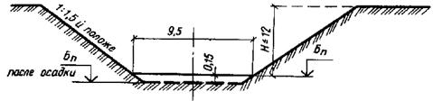
Рис. 23. Конструкция выемки глубиной до 12 м в песках мелких, сухих рыхлого сложения
Рис. 24. Конструкция выемки глубиной до 2 м в песках мелких, сухих рыхлого сложения
Рис. 26. Конструкция насыпи высотой 2 - 6 м из песка мелкозернистого в условиях засушливого климата скреплением откосов геотекстилем
1 - грунт насыпи; 2 - геотекстиль; 3 - штыри для закрепления геотекстиля; 4 - песчано-суглинистая смесь
2.102. В подавляющем большинстве пески пустынь относятся к мелкозернистым пылеватым пескам, содержащим до 80 - 90 % частиц размером 0,25 - 0,05 мм, с углом естественного откоса 30 - 40° и перемещающимся при скорости ветра около 3,1 м/с на высоте 1 м.
Конструкция насыпей из барханного песка, а также мероприятия по их защите от песчаных заносов и выдувания зависят от степени заносимости в данном районе, степени закрепленности растительностью площадей, прилегающих к пути, от почвенных условий для растительности - пескозакрепителя (влажность, засоленность и др.).
Откосы, обочины, бровки, бермы и резервы таких насыпей также закрепляют от выдувания.
2.103. При полном впитывании атмосферных осадков насыпью она сооружается без сливной призмы и водоотводов. Устойчивость откосов обеспечивается при крутизне 1 : 2. При хорошо дренирующих грунтах иногда устраивают «глухие» резервы без детальной планировки откосов и дна, но при этом в них через каждые 100 м оставляются земляные перемычки, предотвращающие образование большой волны при внезапных ливнях с ветром. Форма и величина резервов не должна увеличивать пескозаносимость.
2.104. Степень естественного закрепления поверхности и подвижности песка на местности, прилегающей к пути, оценивается по характеристике поверхности: при слабозаросших песках - менее 15 %, полузаросших - 15 - 35 %, заросших - более 35 %.
2.105. В районах распространения барханных незаросших и слабозаросших песков земляное полотно следует проектировать в виде насыпей высотой 0,5 - 0,6 м, возводимых, как правило, из резервов глубиной до 0,2 м. В пределах равнин и межбарханных понижений в проектах земляного полотна, кроме того, необходимо предусматривать: планировку прилегающей к полотну полосы шириной 15 - 40 м с каждой стороны полотна с разравниванием на ней подвижных форм рельефа; закрепление подвижных форм рельефа механической защитой, растительностью или другими способами на ширину 200 м от проектируемого пути; откосы и бровки необходимо укреплять независимо от степени естественной закрепленности поверхности песка на местности, прилегающей к земляному полотну.
2.106. Насыпи следует проектировать с использованием грунта из узких и глубоких резервов, а крутизну откосов принимать 1 : 1,5 в зависимости от устойчивости грунтов и от размыва их атмосферными водами.
Выемки глубиной до 2 м следует проектировать раскрытыми с откосами крутизной 1 : 10 и более пологими.
2.107. На участках с полузаросшей и заросшей поверхностью прилегающих площадей земляное полотно следует проектировать с расчетом максимального сохранения растительности и естественного рельефа прилегающей местности. Крутизну откосов насыпей в данном случае необходимо принимать по табл. 13. Выемки на этих участках следует проектировать с откосами крутизной 1 : 1,5 и положе в зависимости от угла внутреннего трения песков; выемки глубиной до 2 м проектировать раскрытыми не рекомендуется.
2.108. В районах искусственного орошения земляное полотно следует проектировать с учетом неблагоприятного водного режима, возникающего вследствие: общего повышения уровня грунтовых вод при поливе и промывке грунтов; местного повышения уровня грунтовых вод вследствие размещения земляного полотна вблизи сооружений оросительной и водосборно-сбросной системы затопления резервов, водоотводных нагорных канав и кюветов промывными и поливными водами.
2.109. Проектировать земляное полотно следует с учетом минимального использования площади орошаемых земель. При этом использование ирригационных дамб и сооружений для прохождения по ним пути следует согласовывать с местными организациями, а также с проектно-изыскательской организацией, разработавшей проект ирригационной системы и ее развития.
2.110. Земляное полотно, проходящее на расстоянии менее 60 м от магистральных и распределительных каналов и других сооружений ирригационной сети, необходимо проектировать с учетом рельефа местности, конструкции канала и расхода в нем воды, условий отвода поверхностной воды от земляного полотна, наличия и расположения подъездных автодорог к населенным пунктам, необходимости устройства водопропускных сооружений, возможности увеличения высоты насыпи при приближении к каналу, условий эксплуатации пути и канала, возможности сельскохозяйственного использования площадей между земляным полотном и каналом.
2.111. Расстояние между бровками канала водосборно-сбросной сети и резерва или водоотводной канавы следует принимать не менее 4,5 м. Использование кюветов, нагорных и водоотводных канав в качестве распределителей воды не допускается.
2.112. Расчетный горизонт грунтовых вод следует принимать по данным многолетних стационарных гидрологических наблюдений в районе проектирования. При отсутствии таких данных расчетный горизонт грунтовых вод следует устанавливать при инженерно-геологическом обследовании района с учетом сезонных многолетних колебаний уровня грунтовых вод в других районах с аналогичными условиями, а также возможных последующих изменений этого уровня, связанных с освоением и орошением земель. Во всех случаях в качестве расчетного следует принимать наивысший многолетний уровень грунтовых вод.
2.113. На территориях, подлежащих освоению в период эксплуатации пути, расчетный горизонт грунтовых вод необходимо принимать по перспективным данным органов водного хозяйства с учетом прогноза изменений естественного уровня грунтовых вод, связанных как с орошением, так и с дренажными мероприятиями.
2.114. При расположении земляного полотна в непосредственной близости от ирригационных сооружений необходимо учитывать, что фильтрационный максимум уровня грунтовых вод возникает в период работы канала с наибольшей нагрузкой.
Фильтрационный максимум уровня грунтовых вод следует принимать в качестве расчетного в случаях, когда он будет выше естественного уровня.
2.115. В районах искусственного орошения земляное полотно следует проектировать, как правило, насыпями с применением поперечных профилей, приведенных на рис. 27. Высоту насыпей необходимо определять с учетом предохранения верхней части земляного полотна от увлажнения грунтовыми и поверхностными водами (в зависимости от вида используемого грунта, степени его засоления и условий водоотвода).
2.116. Типовые конструкции выемок в лессовых грунтах для засушливого (рис. 28) и влажного (рис. 29) климатов разработаны применительно к участкам, расположенным в относительно благоприятных инженерно-геологических условиях на местности с поперечным уклоном менее 1 : 3.
При высоте откоса более 2 м устраиваются закюветные полки для сбора и очистки осыпавшегося грунта. Для механизированной уборки требуется ширина полок 3 - 4 м.
2.117. Для предупреждения просадок в толще лесса, вызываемых инфильтрацией воды, дно и откосы водоотводов должны быть покрыты слоем гидроизоляции - битумом, асфальтовой мастикой, гидрофобным цементогрунтом с учетом допускаемых скоростей течения (см. прил. 10 настоящего Пособия).
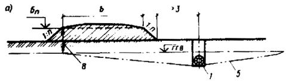
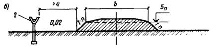
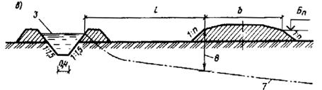
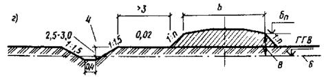
Рис. 27. Конструкция насыпи вблизи ирригационных сооружений
а - насыпь вдоль закрытых трубчатых дрен или коллекторов; б - то же, вдоль каналов из железобетонных лотков; в - то же, вдоль каналов за пределами фильтрационного максимума горизонта грунтовых вод; г - то же, вдоль открытых коллекторов; 1 - трубчатая дрена; 2 - лоток; 3 - расчетный уровень воды в канаве; 4 - канава; 5 - горизонт грунтовых вод (ГГВ), пониженный дреной или коллектором; 6 - естественный максимум ГГВ; 7 - фильтрационный максимум ГГВ; 8 - расчетное возвышение бровки земляного полотна над ГГВ; L - расстояние по расчету
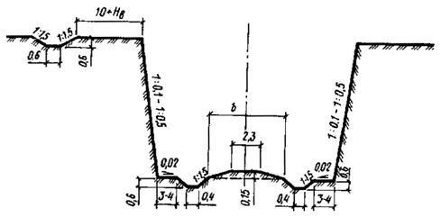
Рис. 28. Конструкция выемки глубиной до 12 м в лессовых грунтах в районах с засушливым климатом
Рис. 29. Конструкция выемки глубиной до 2 - 12 м в лессовых грунтах в районах с влажным климатом
2.118. Особенность проектирования земляного полотна, возводимого в районах распространения вечномерзлых грунтов, заключается в выборе принципов строительства (ВСН 200-85 и СНиП 2.05.02-85). При этом различают три принципа:
I - обеспечение поднятия верхнего горизонта вечной мерзлоты (ВГВМ) не ниже подошвы насыпи и сохранение его на этом уровне в течение всего периода эксплуатации;
II - допущение частичного оттаивания грунта в основании насыпи и возможности нахождения его в талом состоянии в период эксплуатации при условии ограничения осадок допустимыми пределами;
III - обеспечение предварительного оттаивания вечномерзлых грунтов и осушения дорожной полосы до возведения земляного полотна.
2.119. Первый принцип применяется при низкотемпературных грунтах зоны I - I вечной мерзлоты, приведенной на картах дорожно-климатического районирования (см. прил. 17 и 18), при наличии термопросадочных грунтов III - V категории согласно классификаций для железных и автомобильных дорог, помещенных в прил. 4, и глинистых грунтов с суммарной влажностью в сезонооттаивающем слое выше границы текучести (в случае проектирования дорог с капитальным покрытием).
Второй принцип может быть применен во всех случаях в качестве основного из конкурирующих вариантов проектирования, оцениваемых технико-экономическими расчетами.
Третий принцип может быть применен в случае высокотемпературной вечной мерзлоты островного распространения, когда возможно заблаговременное оттаивание вечномерзлых грунтов и осушение дорожной полосы.
2.120. При проектировании земляного полотна железных и автомобильных дорог промышленных предприятий по I принципу необходимо обеспечивать сохранение ВГВМ или ее «новообразование» с помощью применения термоизоляции из торфа, пенопласта и геотекстилей. Характеристики последних и методика их применения приведены в прил. 15.
2.121. При проектировании земляного полотна необходимо предусматривать полную механизацию строительных работ.
2.122. Земляное полотно следует проектировать:
с минимальным использованием выемок;
исходя из условий снегонезаносимости;
обеспечения естественного водоотвода с сохранением мохово-растительного покрова в основании насыпей и на прилегающей территории;
с максимальным использованием песчаных грунтов в талом, сыпучемерзлом и сухомерзлом состоянии (см. прил. 5);
не допуская сооружения насыпей из резервов;
прогнозировать «новообразования» вечной мерзлоты в теле и в основании насыпей;
применять инженерные способы управления температурным режимом грунтовых массивов;
применять армирующие и дренирующие прослойки из геотекстиля и других способов управления напряженно-деформированным состоянием земляного полотна на участках использования переувлажненных и пылеватых грунтов, а также другие способы управления напряженно-деформированным состоянием земляного полотна на участках использования переувлажненных и пылеватых грунтов.
2.123. Конструкции земляного полотна разрабатывают по типовым или индивидуальным проектам исходя из учета следующих природных и других условий:
типа местности, определяемого по данным мерзлотной инженерно-геологической съемки, с выделением по трассе тундровых ландшафтов со сливающейся вечной мерзлотой, лесотундровых, луговых и болотных с несливающейся вечной мерзлотой, для определения осадок основания земляного полотна (см. прил. 5);
температуры вечномерзлых грунтов основания земляного полотна, определяемой по данным инженерно-геологических изысканий;
дорожно-климатических зон (см. прил. 23, 24);
состава и состояния грунтов в карьерах и их технологической пригодности для сооружения земляного полотна, определяемых по прил. 5.
Насыпи и выемки на тундровых ландшафтах со сливающейся мерзлотой в дорожно-климатической зоне I - I следует проектировать преимущественно по I принципу с сохранением или «новообразованием» мерзлоты исходя из прогноза, основанного на теплотехнических расчетах на ЭВМ, с применением теплоизоляционных слоев из торфа, пенопласта и геотекстилей, а также с учетом состава и состояния грунтов в карьерах и технологии производства работ.
Насыпи и выемки на лесотундровых, болотных и луговых ландшафтах с несливающейся мерзлотой или с залеганием верхней границы вечной мерзлоты (ВГВМ) на глубине более 3 м, чаще встречающиеся в дорожно-климатической зоне 1 - 3, следует проектировать с допущением оттаивания высокотемпературных грунтов под земляным полотном в процессе эксплуатации и учетом его осадки по расчету.
2.124. Выбор конструкций земляного полотна, а также устройств, обеспечивающих управление тепловым режимом в грунтовых массивах, с целью обеспечения его устойчивости должен осуществляться на основе комплексного изучения и анализа природных условий и технико-экономических расчетов.
Для предупреждения неравномерных деформаций подрельсового основания в проектах железнодорожных путей и дорожных покрытий должны быть разработаны комплексные технические мероприятия по обеспечению сохранения (стабилизации) земляного полотна в вечномерзлом состоянии, с этой целью конструкции сооружаются с теплоизоляцией из торфа, пенопласта и геотекстиля согласно теплотехническому расчету.
2.125. По типовым поперечным профилям следует проектировать: насыпи на грунтах I и II категории термопросадочности на скальных, крупнообломочных, песчаных талых и сыпучемерзлых грунтах; выемки глубиной до 12 м в скальных и крупнообломочных грунтах и песках крупной и средней крупности.
2.126. По индивидуальным проектам возводят земляное полотно на участках:
производства земляных работ с использованием твердомерзлых песчаных грунтов с характеристиками, приведенными в прил. 5;
производства работ способом гидромеханизации;
периодического подтопления и пересечения озер;
интенсивного снегонакопления и его переноса;
развития термоэрозионного оврагообразования;
насыпей из скальных, крупнообломочных, песчаных и сыпучемерзлых грунтов на вечномерзлых грунтах III и IV категории термопросадочности и на участках залегания подземных льдов;
выемок в грунтах III и IV категории термопросадочности;
выемок на сильнозаносимых участках;
миграционных бугров пучения, термокарстовых впадин с залеганием погребенного льда;
на косогорах крутизной 3 - 15°, подверженных солифлюкционным процессам и наледообразованиям;
пересечений нефтегазопроводов и других сооружений.
2.127. Для сооружения насыпей должны максимально использоваться песчаные грунты из сосредоточенных карьеров, разрабатываемых в поймах и на террасах рек.
Сухомерзлые грунты пригодны для сооружения земляного полотна по технологическим схемам с послойным их уплотнением решетчатыми и вибрационными катками с учетом осадки и доуплотнения при оттаивании (см. прил. 5).
Твердомерзлые песчаные грунты допускается укладывать в насыпи, если их содержание в массе талого грунта не превышает 30 % по объему в сезонноталом слое и 50 % в пределах прогнозируемого вечномерзлого ядра насыпи с тщательным послойным уплотнением.
Не допускается укладывать льдонасыщенные мерзлые грунты в земляное полотно без предварительной подготовки. Льдонасыщенные песчаные грунты можно использовать для заготовки талого грунта в карьерах методом послойного радиационного оттаивания с гидромониторной или гидромониторно-бульдозерной периодической срезкой оттаивающего грунта, с последующей укладкой в насыпи.
2.128. Типовые конструкции насыпей, сооружаемых на вечномерзлых грунтах, приводятся на рис. 30 - 36, выемок - на рис. 37, 38.
2.129. Бермы шириной 1 - 3 м сооружаются из торфа или пенопласта и прикрываются слоем суглинка 0,2 м, а откосы - торфопесчаной смесью толщиной 0,2 м с засевом семенами дикорастущих трав (рис. 30).
2.130. Насыпи высотой более 1,5 м проектируются по I принципу строительства на вечномерзлых грунтах III и IV категории термопросадочности на тундровых ландшафтах со сливающейся мерзлотой из талых, сыпуче- или сухомерзлых грунтов с укладкой геотекстиля под балластной призмой на выравнивающий слой песка толщиной 0,1 м с содержанием в нем пылеватых фракций не более 30 % и устройством бермы шириной 1 - 3 м с покрытием торфопесчаной смесью слоем 0,2 м (рис. 31). Высота насыпи определяется по расчету.
2.131. Насыпи высотой 2 - 3 м проектируются по I принципу строительства на вечномерзлых грунтах IV категории термопросадочности и более, на бугристых торфяниках (миграционных буграх пучения), со сливающейся мерзлотой и сезонно-талым слоем толщиной до 0,6 м. Сооружаются такие насыпи из талых, сыпуче- или сухомерзлых грунтов с заменой дренирующим грунтом (по расчету) и покрытием откосов торфом или торфогрунтовой смесью с засевом семенами дикорастущих трав (рис. 32).
2.132. Конструкции насыпей высотой 1,5 - 3 м проектируются по I принципу строительства на вечномерзлых грунтах III и IV категории термопросадочности, а также на участках с залеганием от поверхности кровли подземных льдов на глубине более 1,5 м. Сооружаются такие насыпи из талых сыпуче- или сухомерзлых грунтов. Теплоизоляционный слой устраивается в обойме из геотекстиля и сыпучемерзлого глинистого грунта, песка или обломочного грунта толщиной 0,5 - 1 м. Откосы покрываются торфом или торфогрунтовой смесью мощностью 0,3 - 0,5 м (рис. 33).
2.133. Конструкции насыпей высотой более 3 м проектируется по II принципу строительства на талых грунтах, на пойменно-луговых и болотных ландшафтах с отсутствием вечной мерзлоты или глубоким ее залеганием. Сооружаются такие насыпи из талых сухо- или сыпучемерзлых грунтов с применением для армирования геотекстиля в полуобойме. Под балластной призмой укладывается геотекстиль. Откосы покрываются торфогрунтовой смесью и засеиваются семенами дикорастущих трав.
Геотекстиль укладывается на выровненный песчаный слой, который в процессе отсыпки погружается в слабые грунты основания и дает осадку 0,2 - 0,4 м (рис. 34).
2.134. Насыпи высотой более 1,5 м на вечномерзлых грунтах I и II категории термопросадочности проектируются на застроенных территориях промышленных предприятий, станциях и погрузочно-разгрузочных пунктах по II принципу строительства. Сооружаются такие насыпи из талых сухо- или сыпучемерзлых песчаных грунтов. Водоотводы устраиваются в виде канав, укрепленных железобетонными плитами. На обводненных территориях возможно устройство железобетонных лотков, утепленных торфом или пенопластом (рис. 35). Следует предусматривать осадку основания насыпи по расчету или по табл. 70.
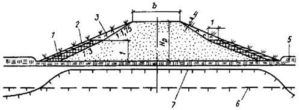
Рис. 30. Конструкция насыпи высотой более 1,5 м на вечномерзлых грунтах I и II категории термопросадочности
1 - пенопласт; 2 - суглинок толщиной 0,2 м; 3 - торфопесчаная смесь толщиной 0,2 м с засевом семенами дикорастущих трав; 4 - талые и сухомерзлые песчаные грунты; 5 - мохово-растительный слой; 6 - поверхность горизонта вечной мерзлоты до постройки насыпи; 7 - новообразованная поверхность мерзлоты под насыпью; Нр - высота насыпи по расчету
Рис. 31. Конструкция насыпи высотой более 1,5 м на вечномерзлых грунтах III - IV категории термопросадочности с бермами и укладкой геотекстиля
1 - торфопесчаная смесь толщиной 0,2 м; 2 - берма; 3 - геотекстиль; 4 - грунт насыпи; 3 - мохово-растительный слой; 6 - поверхность горизонта вечной мерзлоты до постройки; 7 - новообразованная поверхность мерзлоты; Hр - высота насыпи по расчету; hт - глубина сезонного протаивания грунтов
2.135. Насыпи высотой более 1,5 м на вечномерзлых грунтах III и IV категории термопросадочности, на тундровых ландшафтах со сливающейся мерзлотой сооружаются из талых сыпуче- или сухомерзлых песчаных грунтов, на застроенных территориях, станциях и погрузочно-разгрузочных пунктах с заменой на дренирующий грунт на глубину по расчету и с применением геотекстиля под откосами и основной площадкой земляного полотна (см. рис. 36).
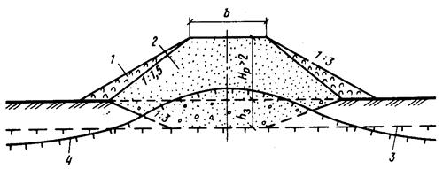
Рис. 32. Конструкция насыпи высотой 2 - 3 м на вечномерзлых грунтах IV и более категорий термопросадочности (торфяных буграх пучения) с заменой торфа в основании на дренирующий грунт и устройством теплоизоляции из торфа на откосах
1 - торф; 2 - грунт насыпи; 3 - поверхность горизонта вечной мерзлоты до постройки насыпи; 4 - новообразованная поверхность мерзлоты; hз - толщина замены дренирующим грунтом; Нр - высота насыпи по расчету
Рис. 33. Конструкция насыпи высотой 1,5 - 3 м на вечномерзлых грунтах III и IV категории термопросадочности или на участках с близким от поверхности залеганием подземных льдов, с термоизоляционным слоем из геотекстиля в обойме и утепленными откосами из торфа
1 - лед; 2 - мохово-растительный слой; 3 - торф; 4 - торфопесчаная смесь; 5 - геотекстиль; 6 - сыпучемерзлый песок; 7 - грунт насыпи; 8 - поверхность вечной мерзлоты до постройки насыпи; 9 - новообразованная поверхность мерзлоты; Нр - высота насыпи по расчету
2.136. Геотекстили, характеристики которых приведены в прил. 15, применяют в целях:
повышения несущей способности, уменьшения деформации основной площадки земляного полотна;
повышения надежности работы прослоек из влагоемких грунтов в конструкциях земляного полотна, рассчитанных на сохранение и новообразование мерзлоты (рис. 32, 33);
повышения устойчивости сопряжений насыпей с искусственными сооружениями, а также участков земляного полотна, испытывающих повышенные динамические нагрузки (под стыками, стрелочными переводами, переездами);
укрепления откосов, водоотводов и обочин (рис. 36);
повышения долговечности и надежности работы балластной призмы и основной площадки, а также дренажных устройств (рис. 31);
противопучинной защиты земляного полотна (рис. 31, 36);
расширения области целесообразного применения местных пылеватых и связных грунтов;
ускорения обезвоживания штабелей намывного грунта, подготавливаемых к разработке в зимнее время;
ускорения стабилизации слабых и оттаивающих грунтов основания;
повышения темпов строительства и укладки верхнего строения пути в условиях дефицита балластных материалов.
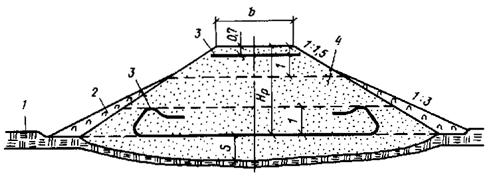
Рис. 34. Конструкция насыпи высотой более 3 м на талых грунтах, залегающих на участках с отсутствием вечной мерзлоты или ее глубоким залеганием из талых сухо- или сыпучемерзлых грунтов
1 - мохово-растительный покров; 2 - торфогрунтовая смесь; 3 - геотекстиль; 4 - грунт насыпи; Нр - высота насыпи по расчету; S - осадка насыпи
Рис. 35. Конструкция насыпи высотой более 1,5 м на вечномерзлых грунтах I и II категории термопросадочности, проектируется по II принципу строительства на застроенных территориях, из талых, сыпуче- или сухомерзлых песчаных грунтов
1 - мохово-растительный слой; 2 - пенопласт или торф; 3 - железобетонный лоток; 4 - грунт насыпи; 5 - укрепление канавы железобетонными плитами; 6 - поверхность горизонта вечной мерзлоты до постройки насыпи; 7 - новообразованная поверхность мерзлоты; S - осадка основания насыпи; Нр - расчетная высота насыпи
Рис. 36. Конструкция насыпи высотой менее 1,5 м на вечномерзлых грунтах III и IV категории термопросадочности из талых, сыпуче- и сухомерзлых песчаных грунтов, проектируемой на станции и погрузочно-разгрузочных пунктах, с заменой грунтов в основании насыпи на дренирующий грунт и применением геотекстиля
1 - мохово-растительный слой; 2 - геотекстиль; 3 - грунт насыпи; 4 - дренирующий грунт; 5 - торфопесчаная смесь толщиной 0,15 м; 6 - дрена или трубофильтр; 7 - поверхность горизонта вечной мерзлоты до постройки насыпи; 8 - новообразованная поверхность мерзлоты; hз - глубина замены грунта основания насыпи на дренирующий; 9 - граница отвода земель; Нр - высота насыпи по расчету
2.137. Схемы размещения армирующих полотнищ геотекстилей выбирают по направлению наибольших растягивающих напряжений. На линейно-промежуточных участках земляного полотна, характеризуемых плоским напряженно-деформированным состоянием, рекомендуется поперечная схема размещения полотнищ без их скрепления друг с другом, внахлестку полотнищ на 0,2 м.
На участках с повышенной деформативностью грунтов оснований применяются схемы с защемлением краев полотнищ в мерзлом грунте.
2.138. При возведении насыпей высотой 1,5 - 3 м на слабых грунтах используют полотнища геотекстилей с разрывной прочностью не менее 3 МПа, определяемой по схеме испытаний на разрыв, защемленной в грунте мембраны (Бидим И-44, Дорнит Ф-2). При сооружении насыпей высотой более 4 м требуемые параметры прослоек геотекстиля следует определять с использованием алгоритмов ГФАП, например П-006591. Кроме того, можно применять поярусное размещение прослоек геотекстиля через 2 - 4 м по высоте насыпи (см. прил. 15).
2.139. Подтопляемые участки насыпи следует отсыпать из скальных, дресвяных или песчаных грунтов с содержанием фракций размером менее 0,1 мм и не более 30 % или из талых глинистых грунтов с преобладанием каолинитовых и гидрослядистых минералов над монтмориллонитовыми.
2.140. В качестве волнозащитных устройств для насыпей при скоростях продольных течений не более размывающих допускается применять свободные пляжевые откосы с волнообразными продольными профилями, образующимися при свободном растекании гидросмеси при продольно-торцовых схемах намыва, а также с устройством баров с пологими откосами.
2.141. При проектировании волнозащитных откосов расчетные параметры волновых воздействий, определяемых по СНиП 2.08.04-82, допускается определять за расчетный интервал времени, равный времени естественного зарастания пляжевых откосов растительностью, которой для районов кочковато-ерниковой тундры составляет 10 - 15 лет, для мохово-лишайниковой тундры - 25 - 30 лет, для арктического побережья - 100 лет.
2.142. Для ускорения зарастания пляжевых откосов необходимо выполнить работы по их биологическому закреплению с известкованием почв, внесением удобрений с засевом откосов дикорастущими травами.
Ширину регуляционных дамб назначают не менее 3 м поверху.
2.143. У водопропускных труб и малых мостов бровка земляного полотна должна возвышаться над расчетным горизонтом воды с учетом подпора и высоты волны с набегом ее на откос не менее 1 м.
При высоте подтопления насыпей более 2 м следует применять бермы с откосами 1 : 3 - 1 : 4, укрепленными матами из геотекстиля или железобетонными плитами, уложенными по слою геотекстиля. Допускается устройство берм из привозного скального или валунно-галечного грунта.
2.144. Выемки глубиной до 6 м в вечномерзлых грунтах III категории термопросадочности на ландшафтах со сливающейся мерзлотой следует проектировать с заменой грунта основной площадки на дренирующий на глубину по расчету; откосы следует покрывать торфом или пенопластом и суглинком толщиной 0,5 м с посевом дикорастущих трав. Поперечный уклон дна котлована следует назначать 0,01, а продольный - 0,005 - 0,01 (рис. 37). Выемки в грунтах IV категории термопросадочности не допускаются.
Рис. 37. Конструкция выемки глубиной до 6 м на вечномерзлых грунтах III категории термопросадочности с заменой на дренирующий грунт и термоизоляцией откосов пенопластом или торфом
1 - поверхность горизонта вечной мерзлоты до сооружения выемки; 2 - новообразованная поверхность мерзлоты; 3 - мохово-растительный слой; 4 - валик из грунта; 5 - пенопласт или торф по расчету; 6 - торфопесчаная смесь; 7 - дренирующий грунт, hз - глубина замены на дренирующий грунт
Рис. 38. Конструкция выемки глубиной до 6 м в вечномерзлых глинистых грунтах и песках пылеватых I и II категории термопросадочности, а также в гравийных грунтах с супесчаным заполнителем III категории термопросадочности, с заменой грунта на дренирующий
1 - поверхность горизонта вечной мерзлоты до постройки выемки; 2 - новообразованная поверхность мерзлоты; 3 - мохово-растительный слой; 4 - валик из грунта; 5 - торфопесчаная смесь; 6 - закюветная полка; 7 - дренирующий грунт; S - осадка основания земляного полотна
2.145. Выемки в вечномерзлых глинистых грунтах и пылеватых песках II категории термопросадочности, а также в галечниковых и гравийных грунтах с суглинистым и супесчаным заполнителями III категории термопросадочности следует проектировать по типовому профилю, приведенному на рис. 38, с заменой грунта на дренирующий и устройством закюветной полки шириной 1 м с уклоном 0,02 и укладкой на откосах слоя торфопесчаной смеси 0,15 - 0,20 м с посевом дикорастущих трав.
2.146. В выемках глубиной до 6 м, сооружаемых на уклоне местности менее 1 : 10 на сильноснегозаносимых участках, в вечномерзлых грунтах I и II категории термопросадочности, крутизну откосов следует принимать: при глубине выемки 1 - 3 м - 1 : 4, 3 - 5 м - 1 : 3.
В вечномерзлых грунтах III категории термопросадочности крутизну откосов выемок следует назначать на основании технико-экономического сравнения вариантов раскрытия выемок и устройства снегозащитных сооружений.
2.147. Допускается устройство продольных водоотводных канав вдоль насыпей на расстоянии 5 - 10 м от их подошв на участках грунтов I и II категории термопросадочности и продольном уклоне местности не более 0,004 с обязательным укреплением их геотекстилем, прикрытым песчано-гравийной смесью.
В полосе трассы шириной 20 - 30 м в каждую сторону от оси участки с термокарстовыми озерами, котлованами, с залеганием повторно-жильных льдов, бугристо-западинного микрорельефа и др. должны быть засыпаны местным грунтом или торфогрунтовой смесью с уплотнением.
2.148. Откосы насыпей, сооружаемых из мелких или пылеватых песков на неподтопляемых участках, укрепляются слоем 0,1 - 0,3 м торфогрунтовой смеси: торфа - 30 %, суглинка - 70 %, или торфа - 40 %, песка - 60 %, или укрепляются обсыпкой скальным грунтом толщиной 0,5 м и более. При укреплении откосов насыпи скальным, щебенистым, гравийно-галечниковым грунтом толщину слоя торфогрунтовой смеси назначают не менее 0,3 м в зависимости от состояния и свойств грунтов, слагаемых откосы.
2.149. Откосы выемок в твердомерзлых грунтах следует покрывать защитным слоем талого, сыпучемерзлого или сухомерзлого песчаного грунта толщиной не менее 0,3 м с последующим закреплением торфогрунтовой смесью или геотекстилем.
При необходимости сооружения выемок в льдонасыщенных грунтах при коэффициенте льдистости более 0,4 следует проектировать замену их на сыпуче-мерзлые или талые пески на глубину сезонно-талого слоя (по расчету) с устройствами для регулирования положения верхней границы вечной мерзлоты под основной площадкой.
2.150. Для обеспечения снегонезаносимости откосы выемок должны иметь уклон 1 : 4 - 1 : 6 и быть защищены от термоэрозии слоем талого, сыпучемерзлого или сухомерзлого грунта толщиной не менее 0,2 м с последующим их закреплением посевом дикорастущих трав.
2.151. Для укрепления откосов и бровок насыпей и выемок, сложенных мелкими и пылеватыми песками или супесями, следует применять преимущественно геотекстиль, прикрытый сверху дренирующим грунтом или торфогрунтовой смесью, с последующим посевом дикорастущих трав.
2.152. Откосы насыпей на участках пересечения водотоков термокарстовых озер или при расчетной длине разгона волны более 0,5 км следует укреплять скальным грунтом или железобетонными плитами по слою геотекстиля (см. прил. 15).
2.153. При проектировании земляного полотна с заглубленным балластным слоем на грунтах III и IV категории термопросадочности следует предусматривать замену грунта на дренирующий с надежным отводом воды из корыта дороги в ливневую канализацию (см. рис. 36).
2.154. При проектировании земляного полотна вдоль наземных и подземных коммуникаций - нефтегазопроводов, водопровода, производственных стоков в трубах, а также вдоль берега водоемов следует предусматривать мероприятия по защите земляного полотна от переувлажнения и возможных деформаций.
2.155. Для отвода поверхностной воды от земляного полотна, устраиваемого в пределах площадки промышленного предприятия, а также при высоком стоянии подземных вод должны предусматриваться лотки с продольным уклоном дна 0,5 - 3 % или трубчатые дрены (трубофильтры) диаметром не менее 150 мм. При среднемесячной температуре наружного воздуха наиболее холодного месяца ниже - 15 °С следует предусматривать утепленные лотки (рис. 35).
2.156. Земляное полотно путей с заглубленной балластной призмой на спланированной территории промышленных предприятий и на застроенных территориях проектируется при наличии ливневой канализации. При этом тип поперечного профиля выбирается в зависимости от системы водоотвода и требований по возвышению бровки земляного полотна над уровнем грунтовых вод.
2.157. В случае обводнения грунтов земляного полотна за счет утечки производственных и хозяйственных вод в грунт необходимо разрабатывать комплекс инженерных мероприятий по водоотводу:
организацию стока производственных и атмосферных вод;
понижение уровня грунтовых вод дренажами;
устройство морозозащитных слоев из геотекстилей и других материалов, предотвращающих пучение грунтов основной площадки земляного полотна;
устройство прослоек из песка и геотекстиля;
замену пучинистого грунта верхней части земляного полотна на дренирующий.
Рис. 39. Конструкция земляного полотна на планируемой территории с заглубленной балластной призмой
1 - балластная призма; 2 - граница отвода земель; 3 - кювет; hб - толщина балластного слоя
Рис. 40. Конструкция земляного полотна на планируемой территории в разных уровнях
а - без подпорной стенки; б - с подпорной стенкой; 1 - балластная призма; 2 - граница отвода земель; 3 - подпорная стенка; 4 - кювет; hб - толщина балластного слоя
Рис. 41. Конструкции земляного полотна с заглубленной балластной призмой в недренирующих грунтах
а - с отводом воды продольной трубчатой дреной и с вариантом углубленного ровика; б - с отводом воды продольным лотком; 1 - трубчатый дренаж; 2 - то же, в месте выпуска его на поверхность; 3 - железобетонный лоток; hб - толщина балластного слоя
2.158. Верх земляного полотна с заглубленной (полузаглубленной) балластной призмой следует устраивать с уклоном в сторону водоотводных канав, лотков. Поперечные профили земляного полотна показаны на рис. 39, 40.
2.159. При недренирующих грунтах земляное полотно, сооружаемое во II и III дорожно-климатической зоне при всех типах увлажнения; а в IV зоне при 2- и 3-м типах увлажнения (табл. 2) должны быть приняты меры по отводу воды из «корыта» с помощью дренажей и лотков (рис. 41).
2.160. Толщину балластного слоя под шпалой на путях с заглубленной и полузаглубленной балластной призмой назначают по указаниям СНиП 2.05.07-85, п. 2.72. Методика расчета толщины балластного слоя под шпалой при заглубленной балластной призме дана в прил. 12 настоящего Пособия.
Рис. 42. Конструкции земляного полотна при сопряжении с подкрановым путем
а - при открытой системе водоотвода; б - при закрытой системе водоотвода; в - вариант водоотвода на существующем пути; 1 - твердое покрытие складской площадки на станции; 2 - щебень; 3 - песчаная прослойка толщиной 0,05 м; 4 - подкрановый путь; 5 - ось пути; 6 - кювет; 7 - колодец ливневой канализации; 8 - дренаж (трубофильтр); hб - толщина балластного слоя; l - расстояние между путями
2.161. Верх земляного полотна из дренирующих грунтов с коэффициентом фильтрации более 1 м/сут назначается горизонтальным, дренажи не устраиваются. При этом возвышение бровок основной площадки над уровнем грунтовых вод не должно определяться по табл. 3. В случае невозможности соблюдения этого условия, а также при тугопластичных и мягкопластичных грунтах, имеющих показатель консистенции более 0,25, следует разрабатывать мероприятия по осушению земляного полотна устройством дренажей глубокого заложения, изолирующих и водонепроницаемых прослоек, заменой грунта на дренирующий, имеющий коэффициент фильтрации для путей с открытой и полузаглубленной балластной призмой не менее 1 м/сут, а с заглубленной - 2 м/сут.
2.162. В случае сопряжения основных площадок земляного полотна, расположенных в разных уровнях с разностью отметок головок рельсов соседних путей до 15 см, уступ в земляном полотне не делается (рис. 41, в). Сопряжение земляного полотна подкрановых путей с железнодорожным показаны на рис. 42, а расстояния определяются по ГОСТ 9238-73. Сброс воды с площадки на путь не допускается.
2.163. При строительстве железнодорожных путей на территории предприятия до производства работ по вертикальной планировке земляное полотно сооружается по временной схеме с отводом воды кюветами и водоотводными канавами (рис. 43). Этапы строительства доказаны на рис. 44.
Рис. 43. Конструкции земляного полотна вторых заглубленных путей на планируемой территории
1 - существующий путь; 2 - существующий дренаж; 3 - проектируемый дренаж; 4 - смотровой колодец; 5 - заполнение недренирующим грунтом; hб - толщина балластного слоя
Рис. 44. Схемы конструкций земляного полотна при строительстве в две очереди на спланированных территориях
а - схема укладки второго пути со стороны существующего дренажа; б - то же, с противоположной стороны; в - то же, с переходом на закрытую систему дренажа; г - для насыпи; д - для выемки; 1 - контур первой очереди строительства; 2 - существующий дренаж; 3 - смотровой колодец; 4 - существующий путь; 5 - засыпка глинистым грунтом; 6 - контур планировки; 7 - балласт второй очереди укладки пути; 8 - балласт первой очереди; 9 - засыпка второй очереди; 10 - планировка на второй очереди; 11 - трубофильтр; hб - толщина балластного слоя
Рис. 45. Конструкции земляного полотна около высокой платформы
а - на планируемой территории; б - на непланируемой территории; 1 - балластная призма; 2 - трубофильтр; 3 - то же, в месте выхода трубофильтра на поверхность; 4 - канава; hб - толщина балластного слоя
2.164. Конструкции земляного полотна для одного пути, проектируемого около высокой платформы на станции и погрузочно-разгрузочных путях, приведены на рис. 45, а вдоль стены здания на территории промышленного предприятия и на станциях - на рис. 46. Поверхностный отвод атмосферной воды осуществляется железобетонным лотком в общую систему канализации либо устройством канавы, укрепленной железобетонными плитами, или дренажа с трубофильтрами.
2.165. Конструкции земляного полотна для двух путей с заглубленной балластной призмой при отводе воды из балластного слоя приведены на рис. 47: а - с помощью дренажа и трубофильтра; б - с применением междупутного лотка.
2.166. Конструкции земляного полотна для нескольких путей на станциях и погрузочно-разгрузочных путях промышленных предприятий представлены на рис. 48: а - при расположении путей в разных уровнях; б - при отводе воды продольным железобетонным лотком; в - при расположении путей в одном уровне; г - при отводе воды продольным железобетонным междупутным лотком.
2.167. Поперечные типовые профили земляного полотна в разных уровнях показаны на рис. 49.
Рис. 46. Конструкции земляного полотна, устраиваемого вдоль стены здания на территории промышленного предприятия или на станциях
а - с лотком; б - с дренажем из трубофильтра; 1 - балластная призма; 2 - лоток; 3 - лоток укрепленный; 4 - трубофильтр; 5 - то же, в месте выхода его на поверхность; hб - толщина балластного слоя
Рис. 47. Конструкции земляного полотна для двух путей
а - при отводе воды из балластного слоя дренажем; б - то же, междупутным лотком; 1 - балластная призма; 2 - трубофильтр; 3 - то же, в месте выхода его на поверхность; 4 - лоток; S - расстояние между осями путей; hб - толщина балластного слоя
Рис. 48. Конструкции земляного полотна для нескольких путей
а - при расположении путей в разных уровнях; б - то же, при отводе воды продольным лотком; в - при расположении путей в одном уровне; г - то же, при отводе воды продольным междупутным лотком; 1 - дренаж из трубофильтра; 2 - железобетонный лоток; S - расстояние между осями путей; hб - толщина балластного слоя
Рис. 49. Конструкции земляного полотна в разных уровнях
а - при условии соотношения h £ hc - 0,05 м; б - при соблюдении условия h > hc - 0,05 м и при расстоянии между путями S, достаточном для устройства кювета и обеспечения соотношения S ³ + + 2mhк + 0,4 м; в - в случае обеспечения соотношения h > hc - 0,5 м и расстоянии между путями недостаточном для устройства кювета, т.е. S < + hm + 2mhк + 0,4; 1 - лоток; hб - толщина балластного слоя
2.168. Земляное полотно постоянных путей в пределах открытых горных разработок следует проектировать согласно СНиП 2.05.07-85.
2.169. Ширину основной площадки следует принимать по табл. 5, а заложение откосов насыпей и выемок - согласно СНиП 2.05.07-85.
При большей высоте откосов насыпей и выемок их крутизну принимают по проекту производства горных работ с учетом инженерно-геологических свойств грунтов. Крутизну откосов на подходах к рабочим горизонтам карьеров допускается принимать по табл. 16 и 17.
Таблица 16
|
Высота откоса, не более, м |
Крутизна откоса |
|
|
Из слабовыветривающихся скальных грунтов |
12 |
1 : 1,3 |
|
Из песка крупного и средней крупности, гравия, дресны, гальки и щебенистых грунтов слабовыветривающихся пород |
20 |
1 : 1,5 |
|
10 |
1 : 1,5 |
|
|
То же, при высоте насыпи до 20 м: |
|
|
|
верхней части высотой |
10 |
1 : 1,3 |
|
средней « « |
5 |
1 : 1,5 |
|
нижней « « |
5 |
1 : 1,75 |
|
Из прочих грунтов, пригодных для отсыпки |
10 |
1 : 1,5 |
|
То же, при высоте насыпи до 12 м: |
|
|
|
верхней части высотой |
10 |
1 : 1,75 |
Примечание. Крутизну откосов насыпей из мелких песков назначают по расчету.
Таблица 17
|
Крутизна откоса |
|
|
Глины, суглинки, супеси и пески однородного напластования |
1 : 1,3 |
|
Сухой лесс в условиях засушливого климата |
1 : 0,1 |
|
Лесс, лессовидные грунты, крупнообломочные (щебенистые, гравелистые и др.) |
От 1 : 0,5 до 1 : 1,5 |
|
Слабовыветривающиеся скальные (при отсутствии падения пластов в сторону полотна и без трещиноватости) |
1 : 0,1 |
|
Прочие скальные породы |
От 1 : 0,2 до 1 : 1 |
Примечание. Крутизна откосов выемок глубиной более 12 м, а также разрабатываемых взрывами или с применением гидромеханизации назначается по индивидуальным проектам.
2.170. Верхнюю часть откосов скальных выемок в пределах залегания эллювиальных рыхлых грунтов следует проектировать крутизной от 1 : 1 до 1 : 1,5. При его толщине более 3 м необходимо предусматривать полки шириной не менее 3 м.
2.171. Конструкции земляного полотна в пределах открытых горных разработок приведены на рис. 50. В случае устройства его в траншее в крупнообломочных, песчаных, глинистых и легковыветривающихся скальных грунтах выемки проектируются с закюветной полкой (рис. 50, а) и без нее (рис. 50, б). В слабовыветривающихся скальных грунтах выемки проектируются с полкой и прямоугольным кюветом (рис. 50, в), с треугольным кюветом (рис. 50, г), а также с устройством основной площадки из крупнообломочного или песчаного грунта (рис. 50, д). На косогорах устраивается полка (рис. 50, е).
Рис. 50. Конструкция земляного полотна в пределах открытых горных разработок
а, б - в крупнообломочных, песчаных, глинистых и легковыветривающихся скальных грунтах; в, г, д - в слабовыветривающихся скальных грунтах; е - на берме; 1 - прямоугольный кювет; 2 - треугольный кювет; b - ширина основной площадки; Б - полка
При устройстве пути в траншее по типу рис. 50, а при дренирующих грунтах земляного полотна с коэффициентом фильтрации более 1 м/сут сливная призма не делается.
При устройстве земляного полотна на берме в слабовыветривающихся скальных грунтах кюветы устраиваются так же, как в траншее.
2.172. Закюветные полки устраиваются в выемках глубиной более 2 м.
Рис. 51. Схема очертания земляного полотна железной и автомобильной дорог
а - с треугольным лотком; б, в - с лотками, устраиваемыми в грунте; 1 - железобетонный лоток
Рис. 52. Схема размещения кавальеров и водоотводных сооружений в выемке
а - с трапецеидальной забанкетной канавой; б - с треугольной забанкетной канавой; 1 - нагорная канава; 2 - кавальер; 3 - треугольная забанкетная канава; 4 - банкет; 5 - откос выемки
Ширина полки принимается:
в скальных легковыветривающихся породах, в том числе размягчаемых, глинистых переувлажненных грунтах, пылеватых грунтах, лессовидных и лессах при высоте откоса 2 - 6 м - 1 м;
то же, при высоте откоса 6 - 12 м (для скальных пород до 19 м) - 2 м;
в мелких и пылеватых песках при высоте откоса 2 - 12 м - 1 м.
При подверженности грунтов интенсивности ветровой и водной эрозии, когда возможно выпадение отдельных камней, ширину полки следует увеличивать по расчету.
2.173. В зависимости от вида пород и условий производства работ вместо кюветов трапециевидного сечения можно устраивать треугольные и прямоугольные кюветы. Выбор типа сечения кювета должен подтверждаться расчетами.
2.174. В выемках с нагорной стороны следует устраивать нагорные канавы с укрепленными дном и откосами.
Размещение кавальеров и водоотводных устройств приведено на рис. 52.
Лотки проектируют с учетом расхода воды, вида грунта, продольного уклона и типа крепления. Тип железобетонного лотка принимается с учетом расхода воды и продольного уклона (см. рис. 51). Выпуск воды из лотка осуществляется междушпальным лотком в кювет, на откос или к искусственному сооружению.
2.175. Резервы местных грунтов размещаются вдоль насыпей, а карьеры - в удалении от насыпи, и устраивают их в случаях непригодности для насыпей грунта из смежных выемок.
Нецелесообразно размещать резервы вдоль насыпей в случаях невозможности отвода воды из них, а также при прохождении дороги по ценным сельскохозяйственным угодьям.
Не допускается размещать резервы в пределах раздельных пунктов и населенных мест, в местах расположения путевых зданий и переездов, на участках развития карста, оползней, а также на поймах рек и засоленных грунтов.
Резервы около отдельных зданий и переездов следует обеспечивать водопропускными канавами или лотками.
2.176. Размеры грунтовых карьеров назначаются с учетом потребности в грунте для возведения земляного полотна, требований техники безопасности, сохранности посевных земель и технико-экономических расчетов.
2.177. Расположение резервов относительно проектируемой насыпи следует назначать согласно табл. 18.
Таблица 18
|
Расположение резервов |
||
|
оптимальное |
допустимое |
|
|
До 1 : 10 |
С двух сторон пути |
С одной стороны пути |
|
От 1 : 10 до 1 : 5 |
С нагорной стороны пути |
С двух сторон или с низовой стороны пути |
|
Более 1 : 5 |
Не проектировать |
С нагорной стороны пути с учетом устойчивости косогора и насыпи после разработки резерва |
Расстояние между внешней бровкой резерва и границей полосы отвода железной дороги должно быть не менее 1 м, между подошвой насыпи и внутренней бровкой резерва - не менее 3 м.
Резервы следует включать в общую систему водоотводных устройств, ограждающих земляное полотно от воздействия поверхностной воды, и дополнительно предусматривать отдельные выпуски воды в пониженные места прилегающей местности.
Замкнутые резервы без водоотводов допускается проектировать на участках с дренирующими грунтами, в районах с засушливым климатом и распространения подвижных песков.
Дну резервов, входящих в общую систему водоотводных устройств, необходимо придавать поперечный (не менее 0,02 ‰) и продольный (не менее 2 ‰) уклоны.
Дно резерва шириной до 10 м принимается двускатным с уклоном от краев резерва к его середине.
Наибольший продольный уклон резерва с низовой стороны насыпи не должен превышать 8 ‰, а для легкоразмываемых грунтов - 5 ‰.
В случаях, когда по условиям рельефа местности общий продольный уклон дна резерва получается больше допустимого, резервы следует проектировать отдельными участками с наибольшим допустимым уклоном дна. Между соседними участками резерва необходимо оставлять полосы ненарушенного грунта шириной не менее 3 м, а в местах сопряжения нижнего участка резерва с косогором - не менее 2 м и предусматривать в них устройство канав с перепадами высотой до 0,5 м.
Откосы резервов следует проектировать не более 1 : 1,5.
2.178. Размеры резервов следует назначать в зависимости от потребности в грунте, а глубину - с учетом типа землеройных машин и требований по устройству продольного водоотвода. Места перехода от одной ширины резерва к другой назначают за счет полевого откоса.
При невозможности увеличения глубины резерва, используемого в качестве водоотвода, а также в резервах с продольным уклоном менее 5 ‰ для пропуска воды следует проектировать водоотводную канаву с размещением ее в пониженной части резерва.
2.179. Устройство резервов на поймах рек разрешается в исключительных случаях, при этом должно быть учтено следующее:
расположение резерва в плане необходимо увязывать с регуляционными водоотводными сооружениями;
расстояние между верхней бровкой откоса резерва и уровнем меженных вод должно быть не менее 1 м;
отметку дна резерва следует назначать выше уровня меженных вод;
для выпуска воды из резерва необходимо предусматривать канавы;
бермы между подошвой насыпи и бровкой резерва следует назначать не менее 4 м;
со стороны насыпи в резерве необходимо оставлять выступ в виде траверсы, если в паводок возможно течение воды вдоль резерва.
Для грунтовых карьеров после их выработки необходимо предусматривать в проекте мероприятия по рекультивации земель.
2.180. Кавальеры необходимо предусматривать в случаях непригодности или нецелесообразности использования грунта из выемок для насыпей, а также при отсутствии в непосредственной близости от выемки пониженных мест рельефа, где размещается непригодный или лишний грунт.
2.181. Размещение грунта в кавальерах не допускается: на территориях станционных площадок, населенных пунктов и промышленных предприятий; в местах, где кавальеры могут способствовать снежным или песчаным заносам земляного полотна, в том числе мелких выемок; с нагорной стороны полувыемок.
2.182. Кавальеры и водоотводы следует проектировать согласно профилям, приведенным на рис. 52, и размещать в зависимости от поперечного уклона местности (табл. 19) с учетом условий заносимости снегом или песком, а также свойств и состояния грунта, подлежащего укладке в кавальер.
Таблица 19
|
Расположение кавальеров |
||
|
оптимальное |
допустимое |
|
|
До 1 : 5 |
С двух сторон |
С одной стороны |
|
От 1 : 5 до 1 : 3 |
С низовой стороны |
С верхней стороны с проверкой общей устойчивости сооружения |
|
Св. 1 : 3 |
Необходимо располагать с учетом местных условий и с проверкой общей устойчивости сооружения |
|
2.183. Расстояние от подошвы кавальера до бровки выемки проектируемого второго пути должно быть не менее 5 м (рис. 52). На участках с глинистыми переувлажненными грунтами, а также при наличии верховодки это расстояние должно быть не менее 5 м плюс высота откоса проектируемой выемки.
2.184. Кавальеры с низовой стороны следует проектировать с разрывами через 50 м, с шириной разрыва понизу не менее 3 м. Площадке между бровкой выемки и подошвой кавальера необходимо придавать продольный уклон в сторону разрыва.
В пределах полувыемок, а также на площадках для станций, размещаемых на крутых косогорах, лишний или непригодный для насыпей грунт следует размещать с низовой стороны земляного полотна, причем верх кавальера необходимо проектировать ниже бровки земляного полотна не менее чем на 0,5 м и с поперечным уклоном 0,02 - 0,04.
В песчаных районах на сильно заносимых участках лишний грунт из выемок следует размещать слоями высотой до 1 м и укреплять их поверхность. В пределах малозаносимых участков кавальеры необходимо проектировать по общим требованиям.
2.185. Банкет проектируется с целью регулирования отвода поверхностной воды в забанкетную канаву с площадки между нагорным откосом выемки и подошвы кавальера (рис. 52).
Банкеты следует проектировать треугольной формы высотой не более 0,6 м, назначая откос со стороны полотна не круче 1 : 1,5, расстояние от подошвы откоса банкета до бровки выемки должно быть не менее 1 м. Банкету придается уклон 0,02 - 0,04 в сторону забанкетной канавы.
Забанкетная канава размещается между банкетом и кавальером и должна иметь продольный уклон не менее 5 ‰, глубину и ширину по дну при трапецеидальной форме 0,3 м, откосы крутизной 1 : 1,5, расстояние от бровки канавы до подошвы откоса кавальера 0,5 м. Забанкетные канавы разрешается проектировать треугольной формы глубиной 0,4 м.
Банкеты с забанкетными канавами не разрешается проектировать на косогорах крутизной 1 : 5 и круче, а также в выемках, сооружаемых в лессовых и скальных грунтах. Водоотводные устройства в этих случаях необходимо проектировать индивидуально с учетом местных природных условий.
2.186. В пределах пологих косогоров, а также неглубоких выемок, где устройство банкетов и забанкетных канав нецелесообразно, следует предусматривать планировку поверхности косогора в полосе шириной около 3 м, прилегающей к бровке выемки, с поперечным уклоном в сторону выемки не менее 0,02.
2.187. В проекты земляного полотна необходимо включать постоянные и временные (на период строительства) устройства для отвода поверхностных вод.
Поверхностный водоотвод можно не предусматривать при проектировании земляного полотна на участках распространения песков в районах с засушливым климатом.
Отвод поверхностных вод в пониженные места рельефа и к водопропускным сооружениям следует предусматривать: от насыпей и полунасыпей - канавы (нагорными, продольными и поперечными водоотводными) или резервами; от откосов выемок и полувыемок - канавами (нагорными и забанкетными); от основной площадки земляного полотна в выемках и полувыемках - с помощью кюветов или лотков.
2.188. Систему сооружений для сбора и отвода поверхностных вод от земляного полотна на площадках промышленных предприятий следует разрабатывать совместно с проектом вертикальной планировки площадки с учетом санитарных условий, требований охраны водоемов от загрязнения сточными водами и благоустройствами территории предприятия, а также с учетом технико-экономических показателей.
Для сбора и отвода поверхностных вод применяют открытую (кюветы, лотки, водоотводные канавы), закрытую (ливневую канализацию с сетью дренажей мелкого и глубокого заложения) или смешанную систему водоотводов.
2.189. В состав работ по проектированию водоотводных устройств входят: определение объема стока к водоотводным устройствам водосборного бассейна; выбор вида, размеров и местоположения водоотводного устройства, позволяющих применять землеройные машины для его сооружения, а также для очистки в период эксплуатации; назначение продольного уклона и скорости течения воды, исключающих возможность заиливания или размыва русла при принятом типе укрепления откосов и дна.
2.190. Минимальные размеры и другие параметры водоотводных устройств следует назначать на основе гидравлических расчетов, но не менее значений, приведенных в табл. 20.
Кюветы следует проектировать, как правило, трапецеидального поперечного профиля, а при соответствующем обосновании - полуциркульного; глубину кюветов в особых случаях допускается устанавливать 0,4 м.
Наибольший продольный уклон дна водоотводных устройств следует назначать с учетом вида грунта, типа укрепления откосов и дна канавы, а также допускаемых скоростей течения воды согласно прил. 9 и 10 настоящего Пособия.
Если наибольший допускаемый продольный уклон водоотводного устройства при заданных расчетных параметрах будет меньше естественного уклона местности или продольного уклона земляного полотна при расходах воды более 1 м3/с, необходимо предусматривать устройство быстротоков и перепадов, проектируемых индивидуально.
Таблица 20
|
Ширина дна после укрепления, м |
Глубина, м |
Крутизна откоса при грунтах |
Продольный уклон, ‰ |
Возвышение бровки над расчетным уровнем воды, м |
|||
|
глинистых, песчаных, крупнообломочных |
пылеватых, глинистых и песчаных |
торфах и заторфованных |
|||||
|
Нагорные и водоотводные канавы |
0,6 |
0,6 |
1 : 1,5 |
1 : 1,5 |
- |
5* |
0,2 |
|
Забанкетные канавы |
0,3 |
0,3 |
1 : 1,5 |
1 : 2 |
- |
5 |
- |
|
Канавы на болотах: |
|
|
|
|
|
|
|
|
I типа |
0,8 |
0,8 |
- |
- |
1 : 1,5 |
2 |
- |
|
II типа |
2 |
1 |
- |
- |
1 : 1 |
2** |
- |
|
Кюветы |
0,4 |
0,6 |
1 : 1,5 |
1 : 1,5 |
- |
2*** |
0,2 |
* По условиям рельефа местности уклон допускается уменьшить до 3 ‰.
** В исключительных случаях уклон можно уменьшить до 1 ‰.
*** В районах с суровым климатом и избыточным увлажнением грунтов уклон принимается не менее 3 ‰.
2.191. Поперечное сечение водоотводных устройств следует проверять на пропуск расчетного расхода воды с использованием автоматизированных гидравлических расчетов в соответствии с прил. 9 настоящего Пособия. При этом вероятность превышения расчетных расходов следует принимать, %:
для напорных канав и водосбросов 5
продольных и поперечных водоотводных канав и лотков 10
Нагорные и водосбросные канавы для железнодорожных путей на территориях промышленных предприятий должны проектироваться для расходов с вероятностью превышения 10 %.
2.192. На водоразделе двух смежных бассейнов следует предусматривать устройство разделительной дамбы с верхним основанием не менее 2 м с заложением откосов не круче 1 : 2, с превышением ее высоты не менее 0,25 м над расчетным уровнем воды.
2.193. На внутриплощадочных путях открытая система водоотвода допускается только при соответствующем указании заказчика. При отводе воды кюветами при просадочных, набухающих, а также пучинистых грунтах необходимо в проекте предусматривать меры против инфильтрации воды из кюветов в земляное полотно путем соответствующего их укрепления.
При необходимости пропуска воды через путь, в том числе для перепуска воды из кювета, применяют междушпальные лотки, при этом проверяют достаточность их глубины для пропуска воды при имеющихся отметках дна кюветов.
2.194. Не допускается проектировать выпуск атмосферных вод из кюветов и канав в:
водотоки, протекающие в пределах населенного пункта и имеющие скорость течения менее 5 см/с и расход менее 1 м3/сут;
непроточные пруды;
водоемы в местах, специально отведенных под пляжи;
рыбные пруды (без специального разрешения);
замкнутые лощины и низины, подверженные заболачиванию;
размываемые оврага без специального укрепления их русел и берегов;
заболоченные поймы рек.
2.195. При загрязнении дождевых и талых вод промышленными отходами химических предприятий следует предусматривать очистные сооружения.
Водоотводные устройства следует размещать в полосе отвода. Расстояние от наружной бровки откоса водоотводного устройства до границы полосы отвода должно быть не менее 1 м.
В местах выхода водотоков на склоны оврагов и низин водоотводные устройства необходимо прокладывать в сторону от земляного полотна и предусматривать их укрепление.
2.196. На участках с наличием грунтовых вод нагорные канавы, а также водоотводные устройства в пределах выемок следует разрабатывать в комплексе с мероприятиями по отводу грунтовых вод. При залегании горизонта грунтовых вод на глубине до 2 м от поверхности нагорная канава может служить, при соответствующем ее укреплении, для отвода воды от земляного полотна, а при более глубоком залегании грунтовых вод углубление нагорной канавы ниже водоносного слоя запрещается. В этом случае предусматриваются другие мероприятия по защите земляного полотна от воздействия грунтовых вод.
2.197. При закрытой системе отвод воды с площадки предприятия производится с помощью ливневой канализации. В этом случае из водоотводных лотков, канав и дренажных труб продольного водоотвода сброс воды предусматривается в дождеприемные колодцы с решетками. Колодцы в этом случае должны иметь отстойники, а решетки - просветы не более 50 мм.
2.198. Смешанная система водоотвода на застроенной территории применяется в случаях: когда требования благоустройства территории и строительства ливневой канализации относятся лишь к части площадки, а в остальной ее части допустим открытый водоотвод, когда требуется очистка сточных вод.
При смешанной системе водоотвода следует соблюдать требования по устройству открытого и закрытого водоотводов.
2.199. Расстояние от трубопроводов дождевой канализации до оси крайнего пути железной дороги с колеей 1520 мм должно быть не менее 4 м.
Расстояние между дождеприемными колодцами допускается принимать по табл. 21.
Таблица 21
|
Расстояния между дождеприемниками, м |
|
|
До 0,004 |
50 |
|
Св. 0,004 до 0,006 |
60 |
|
« 0,006 « 0,01 |
70 |
|
« 0,01 « 0,03 |
80 |
Примечание. При уклоне более 0,03 расстояние между дождеприемниками должно быть не более 60 м.
2.200. Продольные водоотводные канавы необходимо предусматривать с нагорной стороны насыпей без устройства резервов.
На местности с поперечным уклоном менее 0,02 при высоте насыпей менее 1,5 м, на участках косогоров с изменяющимся поперечным уклоном, а также на болотах водоотводные канавы следует проектировать с двух сторон полотна.
2.201. При пересечении лугов, оврагов глубину канав можно принимать до 0,2 м с устройством банкета шириной поверху не менее 3 м, с возвышением его бровки над расчетным уровнем воды не менее 0,25 м и поперечным уклоном поверхности банкета от насыпи 0,02 - 0,04.
Расстояние между подошвой откосов насыпей и внутренней бровкой продольных водоотводных канав следует принимать не менее 3 м, а со стороны размещения будущего второго пути - не менее 7 м.
Поверхность бермы между насыпью и канавой должна иметь поперечный уклон 0,02 - 0,04.
2.202. Поперечные канавы следует проектировать в случаях, когда отвод воды от водопропускных сооружений затруднен или невозможен продольный отвод воды из местных понижений у земляного полотна.
Сопряжение водоотводных канав с руслом водотоков следует проектировать с выполнением следующих условий: в месте сопряжения канаву направлять по течению водотока; угол между осями канавы и водотока назначать не более 45°; изменение направления канавы проектировать плавным по кривой радиусом не менее 5 м, а на участках подходов к перепадам, быстротокам и искусственным сооружениям - не менее 10 м.
Отметка устья - выпуска воды из канавы или лотка должна быть ниже отметки бровки земляного полотна не менее чем на 1 м.
2.203. Оптимальный уклон дна канавы должен быть выбран так, чтобы скорости течения воды в канавах не превышали допускаемые (неразмывающие) скорости для данного грунта согласно прил. 10 настоящего Пособия.
Если при проектировании продольного профиля канав топографические условия местности не позволяют выдержать один и тот же продольный уклон, следует назначать крутые уклоны на коротких участках с соответствующим типом крепления или устраивать между ними вставки с уклонами, не требующими укреплений.
Минимальная допускаемая скорость течения воды по условиям недопущения заиливания канав 0,25 - 0,30 м/с (для канав, не имеющих укрепления и не покрытых растительностью).
2.204. Нагорные канавы необходимо размещать с нагорной стороны выемок для перехвата воды, поступающей с косогора и прилегающего водосборного бассейна, с последующим отводом ее к ближайшему водопропускному сооружению или в сторону от земляного полотна.
На местности с большой крутизной склона, когда продольный уклон нагорной канавы будет больше допустимого значения для данных грунтов и применяемого типа укрепления, необходимо предусматривать устройства для гашения скорости течения воды - перепады, быстротоки и водобойные колодцы.
В таких случаях, в виде исключения, допускается также ступенчатое размещение отдельных участков нагорной канавы на косогоре. При этом начало участка канавы, расположенного ниже, следует размещать с некоторым перекрытием выхода вышерасполагаемого участка. Величину перекрытия и тип укрепления склона в местах выхода отдельных участков канавы необходимо назначать с учетом местных природных условий.
2.205. Минимальные расстояния между бровкой нагорной канавы и бровкой выемки, подошвой кавальера или насыпи следует назначать не менее величин, приведенных в табл. 22.
Таблица 22
|
Расстояние от бровки нагорной канавы до бровки выемки, м |
|
|
Бровки выемки при отсутствии банкета и кавальера |
5 |
|
То же, со стороны размещения будущего второго пути |
9 |
|
Подошва насыпи |
3 |
|
Подошва кавальера |
1 - 5 |
Расстояние между бровкой нагорной канавы и подошвой кавальера принимают в зависимости от условий снегонезаносимости. Глубина канавы принимается на 0,2 м больше расчетной.
2.206. Кюветы в выемках следует размещать с обеих сторон земляного полотна.
Кюветы, как правило, следует проектировать трапецеидальной формы с размерами не менее величин, указанных в табл. 20.
2.207. При отсутствии банкетов и забанкетных канав минимальное поперечное сечение кюветов необходимо проверять расчетом на пропуск расчетного расхода воды согласно прил. 9 настоящего Пособия, а при необходимости увеличивать сечение за счет углубления кюветов при сохранении минимальной ширины по дну.
Рис. 53. Железобетонный рамный лоток глубиной 1 м
1 - железобетонная рама; 2 - засыпка из песка крупного, средней крупности, гравелистого или гравия; 3 - закладная железобетонная плита; 4 - дренажные щели; 5 - щебеночная подготовка; 6 - асфальт; 7 - забивка пазух мятой глиной
Рис. 54. Железобетонный лоток под железнодорожными путями
1 - фундаментный блок; 2 - гидроизоляция; 3 - блок железобетонного лотка замкнутого сечения; 4 - шпала; 5 - рельс; 6 - балластный слой
Полевые откосы кюветов следует проектировать крутизной, равной крутизне откоса выемки, а откосы кюветов со стороны полотна - не превышающими величин, приведенных в табл. 20.
Продольный уклон кюветов следует принимать равным уклону земляного полотна. В пределах выемок с продольным уклоном менее 2 ‰ кюветы назначают с продольным уклоном 2 ‰. В точках водораздела глубину кюветов разрешается уменьшать до 0,2 м при сохранении ширины по дну.
2.208. Для отвода поверхностной воды при отсутствии ливневой канализации следует предусматривать закрытые лотки или дренажные устройства согласно указаниям СНиП 2.05.07-85, п. 2.67.
Лотки применяются в стесненных условиях, где затруднено устройство открытых нагорных канав, а также при неустойчивых откосах. Лотки устраивают в глубоких выемках, в пределах путевого развития раздельных пунктов и междупутий для пропуска воды с одной стороны пути на другую, перехвата уровня грунтовых вод и отвода их за пределы осушаемой территории.
Нецелесообразно применение лотков в случаях образования в них наледей и на пучинистых грунтах.
Рис. 55. Безраспорные секционные лотки
а - глубиной 0,2 м с глухими стенками; б - то же, глубиной 0,85 м с дренажными отверстиями в стенках; в - блок безраспорного лотка
2.209. Рамные лотки собираются из готовых рам, закладных плит и покрытий, а также безраспорных секций, изготавливаемых из железобетона (рис. 53).
Железобетонные рамные лотки рекомендуется применять: при затруднительном устройстве открытой канавы или кювета; при необходимости понижения уровня грунтовых вод или перехвата и отвода их в водоприемник; при углублении кюветов в существующих глубоких выемках; при нецелесообразности подрезки откосов выемки.
Минимальный продольный уклон дна лотка 0,002.
2.210. Междупутные лотки рассчитываются без учета влияния временной нагрузки от подвижного состава (рис. 54). При устройстве лотков большей глубины или расположении их в зоне нагрузок от поезда, а также на крутых косогорах конструкцию лотков следует проектировать индивидуально.
2.211. Лотки безраспорные, секционные (междушпальные) следует проектировать для отвода воды поперек пути и в случае продольного стока воды вблизи зданий и сооружений, платформ и открытых погрузочных площадок (рис. 55). Типы лотков приведены в серии 3.501-68 «Сборные железобетонные междушпальные лотки на железнодорожных путях промышленных предприятий», разработанной ПромтрансНИИпроектом и в Альбоме водоотводных устройств на станциях (инв. № 984), разработанном Мосгипротрансом.
2.212. Лотки под путями устраиваются в случаях, когда расходы воды превышают возможные для безраспорных лотков. Наибольшее применение получили железобетонные лотки сечением 0,75 ´ 1,25 м (рис. 54), устраиваемые на блочных железобетонных фундаментах, а при хороших инженерно-геологических условиях - на щебеночной подготовке. Лотки могут сооружаться под одним или несколькими путями.
2.213. При отсутствии возможности отвода воды из замкнутых понижений рельефа, пересекаемых земляным полотном, следует проектировать поглощающие колодцы или испарительные бассейны.
Поглощающие колодцы устраивают в местах залегания на небольшой глубине от поверхности земли хорошо дренирующих и некарстующихся грунтов, мощность слоя которых достаточна для поглощения расчетного количества поверхностной воды. Возможность применения поглощающих колодцев согласовывается с местной санэпидстанцией.
В качестве водопоглощающих можно использовать конструкцию фильтрующего колодца диаметром 1,5 и 2 м по типовому проекту Мосгипротранса (902-3-24).
2.214. Испарительные бассейны разрешается предусматривать при проектировании земляного полотна в IV и V дорожно-климатических зонах. В качестве испарительного бассейна могут быть использованы местные понижения, впадины, выработанные карьеры и резервы глубиной не более 0,4 м. На участках, где под испарительные бассейны будут использованы резервы, насыпи без берм проектировать не допускается. Допускается устройство испарительных бассейнов с двух сторон земляного полотна на расстоянии не менее 10 м от подошвы откоса насыпи до уреза воды в бассейне. Объем бассейна должен быть до 300 м3, а глубина воды в нем - не более 1 м.
2.215. При проектировании нагорных и водоотводных канав, кюветов и лотков размеры их поперечного сечения устанавливаются по расчетному расходу воды при дождевом стоке, который определяется в соответствии с требованиями СНиП 2.01.14-83 и по программе автоматизированного гидравлического расчета, приведенной в прил. 9 настоящего Пособия. Для расчетов размеров канав методом подбора могут быть использованы таблицы, разработанные Главтранспроектом.
2.216. Расчетные сечения канав, кюветов и лотков назначаются в точках переломов продольного уклона дна канав, а на участках с однородным уклоном - в точках резкого изменения расчетного расхода воды, но не реже чем через 200 м.
При расчете канав и лотков на постоянный расход при одинаковом продольном уклоне достаточно рассчитать одно сечение.
Рис. 56. Конструкция поглощающего колодца из железобетонных колец диаметром 0,7 и 1 м
1 - верх поглощающего слоя; 2 - железобетонные кольца; 3 - отмостка из булыжного камня или из железобетонных плит; 4 - чугунный люк; 5 - регулировочные бетонные камни; 6 - деревянная крышка; 7 - опорное кольцо; 8 - плита перекрытия; 9 - песок крупный; 10 - щебень; 11 - камень; 12 - скобы ходовые
2.217. В зависимости от инженерно-геологических и гидрологических условий укрепление откосов и дна канав осуществляется следующими способами:
обсев откосов травами в клетках из бетонных брусков (рис. 57);
обсев откосов травами в жердевых полосах, в клетках из каменных плит (рис. 58).
Укрепление дна канав щебнем толщиной 8 - 10 см и с одерновкой откосов (рис. 59).
Укрепление дна канав щебнем с песком толщиной 8 - 10 см и обсев откосов семенами дикорастущих трав (рис. 60).
Укрепление откосов одерновкой плашмя неподтопляемой насыпи и выемки с помощью крепления дернин деревянными спицами (рис. 61).
Дерн нарезают на участках с суглинистыми почвами в условиях, близких к приживанию дернин в откосах насыпей или выемок. Толща дернин 6 - 10 см, а размер в плане определяется проектом по данным исследований геоботаника.
Колья, жерди, хворост получают из ивовых пород; их длина, толщина в нижнем срубе определяются проектом.
Укрепление откосов и дна канав железобетонными плитами показано на рис. 62. При наличии агрессивных вод применяют бетон, стойкий от выщелачивания.
Укрепление подтопляемых откосов асфальтобетоном выполняется из плит и противоразмывных монолитных покрытий согласно ГОСТ 9128-84.
Укрепление неподтопляемых откосов насыпей и выемок механизированным посевом трав показано на рис. 63.
Рис. 57. Конструкции крепления откосов насыпей и выемок обсевом травами в клетках из бетонных брусьев
Рис. 58. Укрепление откосов насыпей и выемок обсевом дикорастущими травами
а - в клетках, образованных жердями; б - в клетках из каменных плит; 1 - деревянные колья; 2 - продольные жерди; 3 - растительный грунт с удобрениями; 4 - мощение откоса камнем; 5 - обсев дикорастущими семенами трав по слою толщиной 0,05 - 0,1 м
Рис. 59. Укрепление дна канав щебнем и одерновкой откосов
1 - щебень с песком толщиной слоя 0,08 - 0,1 м; 2 - деревянные колья для крепления дернины; b - ширина подошвы канавы по расчету; РГВ - расчетный горизонт воды
Рис. 60. Укрепление дна канав щебнем и обсевом откосов семенами дикорастущих трав
1 - щебень с песком слоем толщиной 0,08 - 0,1 м; 2 - откос, засеянный семенами дикорастущих трав; РГВ - расчетный горизонт воды
Рис. 61. Укрепление откосов одерновкой плашмя
а - неподтопляемой насыпи; б, в - схемы крепления дернин деревянными кольями
Рис. 62. Конструкция крепления канавы железобетонными плитами
1 - бетонная плита; 2 - подстилающий песчаный слой толщиной 0,2 м; РГВ - расчетный горизонт воды; b - ширина дна канавы по расчету
Рис. 63. Схема укрепления неподтопляемых откосов механизированным гидропосевом трав
а - насыпи; б - выемки; 1 - дерновая лента; 2 - кювет; 3 - растительный слой толщиной 0,15 м; 4 - закюветная полка
Рис. 64. Способы укрепления подтопляемых откосов одиночным мощением
а, б - камнем различных размеров в поперечнике; 1 - камень размером 0,15 - 0,2 м; 2 - то же, 0,18 - 0,2; 3 - то же, 0,12 - 0,18; 4 - слой песка или щебня; 5 - слой камня размером 0,25 м; 6 - щебень или гравий 0,1 - 0,15 м; а - высота набега волны и подпора около водопропускных сооружений; РГВ - расчетный горизонт воды
Рис. 65. Укрепление откосов берега плитами
1 - железобетонная плита; 2 - каменная отмостка; 3 - песок; РГВ - расчетный горизонт воды; ГМВ - горизонт меженных вод
Укрепления подтопляемых откосов производится одиночным мощением (рис. 64).
Укрепление берега производится железобетонными блоками на высоту набега волны с откосом 1 : 1 или 1 : 0,5, с засыпкой пазух песком и мощением из камня (рис. 65).
Укрепления подтопляемых откосов двойным мощением и железобетонным гибким покрытием, разработанные ЦНИИСом, приведены на рис. 66.
Укрепления подтопляемых откосов монолитными железобетонными плитами показаны на рис. 67 и асфальтобетонными - на рис. 68.
Рис. 66. Укрепление подтопляемых откосов
а - двойным мощением; б - железобетонным гибким покрытием конструкции ЦНИИСа; 1 - верхний слой камня; 2 - то же, нижний слой; 3 - щебень толщиной 0,1 м; 4 - железобетонное гибкое покрытие; 5 - конструктивные замоноличенные швы; 6 - упорная призма из камня; а - высота набега волны и подпора около сооружений; ГВВ - горизонт высоких вод
Рис. 67. Укрепление подтопляемых откосов монолитными железобетонными плитами
1 - упорная призма из камня; 2 - песок крупнозернистый; 3 - поверхность дна водоема; 4 - плиты железобетонные; 5 - отметка верха крепления откоса; 6 - подстилающий слой из щебня и гравия; 7 - плиты сборные железобетонные; 8 - температурно-усадочный шов; 9 - плиты железобетонные монолитные; 10 - конструктивные швы; РГВ - расчетный горизонт воды; b - ширина плиты
Рис. 68. Укрепление подтопляемых откосов асфальтобетонными плитами
1 - призма упорная каменная; 2 - облегченное крепление из гравия; 3 - щебеночная подготовка толщиной 0,15 м; 4 - асфальтобетонные плиты размером 3,9 ´ 2,9 ´ 0,1 м; РГВ - расчетный горизонт воды
2.218. Характеристики геотекстилей (нетканых синтетических материалов), применяющихся в дорожном строительстве, приведены в прил. 15.
2.219. Геотекстиль следует укладывать на глинистые грунты основной площадки земляного полотна, спланированной в обе стороны от оси пути с уклоном не менее 0,04 ‰. Материал размещают по всей ширине основной площадки земляного полотна. Минимальная толщина балластного слоя (песчаная подушка, щебень или асбестовый балласт) поверх геотекстиля должна быть не менее 0,3 м (рис. 69, а).
При необходимости геотекстилем укрепляют откосы и дно кюветов или лотков. Кювет засыпают песчаным или другим дренирующим грунтом (рис. 69, б).
2.220. Геотекстиль применяют в конструкциях глубоких лотков при устройстве оснований водоотводных труб в качестве противосуффозионных материалов (рис. 70). В местах выноса мелких фракций грунта укладывают геотекстиль, который пригружают дренирующим грунтом толщиной 0,05 - 0,1 м, при опасности размыва грунта потоком воды, поступающей из водоотводной трубы; на участке выхода ее на поверхность устраивают каменную наброску.
Рис. 69. Конструкции насыпи и выемки на увлажненных грунтах основной площадки и кюветов с укладкой геотекстиля
1 - балластный слой; 2 - геотекстиль; 3 - грунт земляного полотна; 4 - песок; 5 - дренирующий грунт в канаве; 6 - выравнивающий слой песка толщиной 0,15 м
Рис. 70. Противосуффузионные мероприятия с применением геотекстиля
а - укрепление откоса выемки и кювета от выноса песка из напорного водоносного горизонта; б - укрепление дна водоотводной трубы от размыва и суффозии из песчаного водоносного слоя; 1 - геотекстиль; 2 - балластный слой; 3 - глинистый грунт; 4 - песчаный водоносный слой; 5 - каменная наброска; ГГВ - горизонт грунтовых вод
Рис. 71. Конструкции защиты откосов от размыва водой при периодическом их затоплении
а - из железобетонных плит с песчаным подстилающим слоем; б - с прослойкой из геотекстиля; 1 - железобетонные плиты; 2 - выравнивающий слой из щебня; 3 - подстилающий слой из щебня толщиной 0,2 - 0,3 м; 4 - геотекстиль; 5 - каменная наброска; УВВ - уровень высоких вод
Рис. 72. Схема конструкции откоса для защиты от размыва при постоянном затоплении
а - из каменной наброски и фашин; б - с применением геотекстиля, прикрытого гибким ковром из плит; 1 - железобетонные плиты толщиной 0,07 - 0,1 м; 2 - выравнивающий слой из щебня толщиной 0,1 - 0,15 м; 3 - подстилающий слой из песка 0,2 - 0,3 м; 4 - каменная наброска; 5 - фашины; 6 - геотекстиль; 7 - гибкий ковер из плит; 8 - выравнивающий песчаный слой; 9 - поверхность откоса после размыва; 10 - намывной слой песка; УВВ - уровень высоких вод; УМВ - уровень меженных вод
2.221. Геотекстиль следует применять в конструкциях земляного полотна, сооружаемого на слабых грунтах (торфяных, илах, заторфованных и водонасыщенных грунтах, а также на марях). Это позволяет обеспечить равномерную осадку основания насыпей, предупреждение их расползания и выпучивания грунтов в стороны.
Геотекстиль можно применять на болотах I типа без выторфовывания.
2.222. Геотекстиль следует применять в конструкциях земляного полотна, сооружаемого на вечномерзлых грунтах, в том числе марях. Это позволяет сохранять мохово-растительный покров, а главное - вести отсыпку насыпей в любое время года с использованием переувлажненных глинистых грунтов в основании насыпей высотой до 1 м. Геотекстиль также применяется на нулевых местах, сложенных высокотемпературными грунтами зоны вечной мерзлоты без замены их на дренирующий слой согласно прил. 15.
2.223. На участках курумов, осыпей и крупнообломочного материала, распространенных в зоне вечной мерзлоты, геотекстиль укладывают на основной площадке земляного полотна по выровненному слою песка толщиной 0,1 - 0,15 м, а затем отсыпают балластный слой. Геотекстиль позволяет сохранять под насыпями, на расчетной глубине, новообразованную мерзлоту.
2.224. Геотекстиль следует применять при укреплении откосов, насыпей, дамб, контрбанкетов с подъемом и спадом уровня воды вместо обратного фильтра, укладываемого выше уровня грунтовых вод (рис. 71).
2.225. Для защиты постоянно затопляемых откосов насыпей и естественных склонов следует проектировать каменные наброски, фашины, габионы (рис. 72, а), а при отсутствии в районе строительства указанных материалов можно использовать геотекстиль, прикрываемый сверху гибким ковром из плит (рис. 72, б).
2.226. Для понижения, перехвата и отвода грунтовых вод от земляного полотна следует проектировать дренажи. Их конструкция и расположение в плане принимаются на основе гидрогеологического обследования и технико-экономического сравнения вариантов в зависимости от размеров водопритока, глубины залегания грунтовых вод, сезонного промерзания грунтов, рельефа местности и размеров земляного полотна.
Наименование дренажей, их назначение (область применения) приведены в табл. 23, а конструкции - на рис. 73.
2.227. Дренаж проектируют на основе данных инженерно-геологического обследования при наличии сведений: о гранулометрическом составе водоносного горизонта; коэффициенте фильтрации; высоте капиллярного поднятия грунта и угла внутреннего трения; данных о глубине сезонного промерзания грунтов; сведений о режиме грунтовой воды и ее агрессивности по отношению к бетону и металлу.
2.228. Уклон дна дренажа должен быть постоянным или увеличивающимся к низовой его части. Переломы продольного профиля дренажа допускаются в смотровых колодцах. Продольные уклоны подкюветных и закюветных дренажей принимаются равными уклону пути, при этом оптимальный уклон - 3 - 6 ‰; в трудных рельефных условиях - 2 ‰ и в исключительных случаях - 1 ‰. Скорости течения воды в дренажных трубах должны быть менее 1 м/с.
2.229. При залегании горизонта грунтовых вод на глубинах до 2 м перехватывать и отводить их следует открытыми лотками и канавами, на участках с круглогодичным потоком грунтовых вод - закрытыми лотками. На участках с размываемыми грунтами необходимо предусматривать обратный фильтр за стенками лотков.
При залегании грунтовых вод на глубинах более 2 м следует проектировать дренажи, галереи и колодцы. При этом дренажи должны быть предназначены для защиты земляного полотна под несколькими путями и параллельно расположенными автодорогами с учетом единой дренажной сети, проектируемой для промышленной площадки в целом или ее части, а также с существующей сетью канализации, которая может быть использована для выпуска в нее воды из дренажей.
Рис. 73. Схемы конструкции дренажей
1 - депрессионная кривая; 2 - водоупорный слой из глины; 3 - суглинок; 4 - железобетонный лоток; 5 - дренаж; 6 - балластный мешок; 7 - прислоненный дренаж; 8 - контрфорсный дренаж; 9 - шпуровой дренаж в скальных грунтах; 10 - застенный дренаж с обратным фильтром; 11 - берма; 12 - канава; 13 - галерея; 14 - оползень; 15 - штольня; 16 - поглощающий колодец; ГГВ - горизонт грунтовых вод
Таблица 23
|
Номер схемы |
Назначение и область применения дренажа |
|
|
Горизонтальный траншейный несовершенный дренаж |
III |
Предназначается для понижения уровня грунтовых вод на заданную глубину с целью осушения грунтов основания земляного полотна. Применяется в выемках в качестве подкюветных и закюветных дренажей |
|
То же, совершенный |
IV |
Служит для перехвата водоносного горизонта, залегающего на глубинах до 3 - 5 м. Устраивается на откосах выемок и косогорах |
|
Подкюветный совершенный дренаж |
V |
Применяется в грунтах с Кф > 0,5 м/сут, в том числе в сезонно-промерзающих пучинистых. Устраивают в выемках глубиной до 6 м и длиной до 100 - 150 м |
|
Дренаж мелкого заложения |
VI |
Предназначен для обеспечения поверхностного водоотвода из выемок с кюветами, заполненными старыми балластными материалами. Служит для отвода воды от стрелочных переводов и станционных путей |
|
Бескюветный несовершенный дренаж |
VII |
Устраивают в водопроницаемых слабых грунтах, в районах с неглубоким сезонным промерзанием. Позволяет повысить несущую способность основной площадки |
|
Поперечная осушительная прорезь |
VIII |
Служит для выпуска воды из балластных мешков, гнезд и лож и устраивается в виде глубоких поперечных прорезей |
|
Присыпной (прислоненный) дренаж |
IX |
Проектируется с целью сбора и отвода воды из водоносного пласта или рассеянных источников |
|
Откосный контрфорсный дренаж |
X |
Служит для осушения грунтов (чаще насыпей) и закрепления неустойчивых земляных масс на откосе выемки |
|
Откосные скважинные (шпуровые) дренажи в выемке |
XI |
Предназначены для сбора и отвода рассеянных выходов воды на откосах выемки |
|
Застенный дренаж |
XII |
Служит для поддержания сооружения, применяется для закрепления неустойчивых откосов |
|
Галерея проходная |
XIII |
Применяется для перехвата подземных вод на больших глубинах, в случаях, когда устройство открытой траншеи нецелесообразно |
|
Штольня |
XIV |
Служит для перехвата грунтовых вод, залегающих на больших глубинах, когда проходка дренажных траншей затруднительна |
|
Поглощающий колодец |
XV |
Различают скважинные или шахтные поглощающие колодцы. Предназначены для сбора воды из одного или нескольких водоносных горизонтов и сбора ее в нижележащие пласты с хорошей поглощающей способностью |
Рис. 74. Конструкция совершенного подкюветного одностороннего дренажа в безнапорном водоносном горизонте
1 - водоупорный слой; 2 - водоносный песчаный слой; 3 - балластный слой; 4 - дренаж; 5 - депрессионная кривая; 6 - трубофильтр; Н - глубина заложения дренажа; ГГВ - горизонт грунтовых вод; L - расстояние от оси дренажа до оси пути
2.230. Глубина траншеи определяется типом дренажа (совершенный, несовершенный) и необходимой величиной понижения уровня грунтовых вод. При залегании водоупора на глубине до 3 - 4 м обычно устраивают совершенный подкюветный односторонний дренаж (рис. 74).
Для совершенного дренажа глубина траншеи должна быть равна расстоянию от поверхности земли до водоупора плюс 0,2 - 0,3 м. Если дно траншеи состоит из неустойчивых грунтов, то производится подсыпка из щебня или гравия толщиной 0,1 - 0,15 м. Глубина совершенного дренажа должна быть больше глубины промерзания на 0,3 м.
2.231. Несовершенные дренажи служат для понижения грунтовых вод в пределах земляного полотна и устраиваются по отношению к нему односторонними. Проектирование двухстороннего несовершенного дренажа должно быть обосновано технико-экономическими расчетами. Дренажи, как правило, располагаются со стороны притока грунтовых вод.
В глинистых грунтах наименьшие уклоны дренажа принимают 2 %, а в песчаных - 3 %.
2.232. При заглубленной балластной призме дренаж для осушения балластного слоя устраивается и в недренирующих грунтах земляного полотна.
При балластном слое из среднезернистого или крупнозернистого песка дренаж мелкого заложения устраивают в заглубленных ровиках. В IV и V дорожно-климатических зонах дренажи не предусматриваются.
2.233. Для дренажей под балластом можно применять асбоцементные трубы диаметром 100 мм, ГОСТ 1839-80. В этих трубах должны быть сделаны пропилы через 0,5 м, шириной 2 мм и до половины диаметра. Вместо пропилов можно просверлить отверстия диаметром 3 - 5 мм, располагаемые в два ряда в шахматном порядке через 0,04 - 0,05 м.
Асбоцементные трубы следует укладывать на слой щебня или гравия толщиной 0,05 м, который втрамбовывается в грунт. Применяются также полиэтиленовые (гибкие) трубы, имеющие заводскую перфорацию и укладываемые аналогично асбоцементным трубам.
Рис. 75. Конструкции железнодорожных путевых дренажей
а - мелкого заложения; б - в углубленном ровике; 1 - геотекстиль; 2 - перфорированная труба или трубофильтр; 3 - полиэтиленовая пленка или водонепроницаемый материал; 4 - обратный фильтр из песка, гравия и щебня; 5 - слой щебня, втрамбованный в грунт; 6 - щебень; 7- бетонная подушка
Для устройства дренажей под балластной призмой применяются трубофильтры (ТУ 33-5-75) диаметром 100 мм, изготавливаемые ЦНИИСом из крупнопористого фильтрационного бетона (прил. 20). Трубофильтры такого диаметра выпускаются длиной 0,5 м с гладкими концами, звенья соединяются эластичными пластмассовыми ниппелями. Трубофильтры укладывают на слой щебня или гравия толщиной 0,05 м.
Продольный уклон дренажных труб должен быть не менее 0,004, выпуски не реже чем через 200 м. В местах поворота трубчатого дренажа, а также на прямых участках через 60 м устраивают смотровые колодцы. Конструкции путевых дренажей мелкого заложения и в углубленном ровике приведены на рис. 75.
2.234. Земляное полотно для второго пути следует проектировать по следующим схемам:
I - на общем земляном полотне в одном уровне с существующим путем. Эта схема является основной и применяется на участках с благоприятными инженерно-геологическими и эксплуатационными условиями;
II - в разных уровнях с использованием существующего земляного полотна. По такой схеме следует проектировать земляное полотно в местах реконструкции существующего пути, в пределах путепроводных развязок при благоприятных инженерно-геологических условиях;
III - на раздельном полотне. Такую схему следует принимать при проектировании второго пути: на подходах к большим и средним мостам, проектируемым для второго пути в стороне от существующих мостов; на участках со слабым грунтовым основанием и при неблагоприятных инженерно-геологических условиях; на участках с руководящим уклоном второго пути, не равным уклону существующего пути;
IV - на общем двухпутном полотне по новой трассе при обходе участков, неблагоприятных по инженерно-геологическим и другим условиям.
Выбор схемы размещения второго пути должен быть обоснован технико-экономическими расчетами.
Типовые поперечные профили земляного полотна для указанных схем показаны на рис. 76 - 78.
2.235. Если при проектировании второго пути существующие водоотводные устройства не обеспечивают надлежащего отвода воды от земляного полотна, в том числе из пазух и междупутья, необходимо предусматривать их реконструкцию или устройство новых.
В местах скопления воды у земляного полотна, когда устройство продольного водоотвода нецелесообразно, необходимо предусматривать новые сооружения.
2.236. Для проектирования земляного полотна под второй путь в дополнение к материалам инженерных изысканий, используемым при проектировании новых соединительных и подъездных путей, необходимо иметь:
поперечные профили существующего пути с указанием на них балластных корыт, песчаных шлейфов и инженерно-геологических характеристик оснований и тела земляного полотна;
попикетное описание существующего земляного полотна с подробной характеристикой его основания, основной площадки и балластного слоя, типов и конструкций укреплений откосов, состояния водоотводов и их укреплений, данных по всем видам существующих противодеформационных и защитных мероприятий;
пояснительные записки с подробным описанием каждого участка земляного полотна, имеющего деформации, а также участков со сложными инженерно-геологическими условиями, в пределах которых следует применять противодеформационные мероприятия.
Рис. 76. Конструкция насыпи, уширяемой под второй путь
1 - резерв или водоотводная канава; 2 - проектируемая присыпка к насыпи; 3 - ось второго пути; 4 - ось существующего пути; 5 - дренирующий грунт; 6 - грунт насыпи
Рис. 77. Конструкция выемки глубиной до 12 м в глинистых грунтах, песках мелких и пылеватых при поперечном уклоне местности не более 1 : 3 под второй путь
1 - ось проектируемого пути; 2 - ось существующего пути; L - расстояние между осями путей по проекту; Б - обочина
Рис. 78. Конструкция насыпи высотой до 12 м из песков, гравия, гальки, щебенистых и скальных слабовыветривающихся грунтов на местности с уклоном не более 1 : 5
1 - резерв; 2 - ось проектируемого пути; 3 - ось смещенного существующего пути; С - расстояние, назначаемое по проекту
2.237. Насыпи под второй путь проектируют в виде присыпок к существующему полотну (рис. 76). Ширину присыпок назначают в зависимости от высоты и крутизны откосов, состояния и свойств используемых грунтов, местных климатических условий, а также от параметров строительных и транспортных средств, организации работ в условиях эксплуатируемого земляного полотна. При этом следует предусматривать: ширину междупутья в пределах кривых с учетом требований ГОСТ 9238-831 (уширение); возможность механизированного выполнения земляных работ при ширине присыпок: при скальном грунте 3 м, дренирующем 3,5 м, недренирующем 4 м; мероприятия, обеспечивающие устойчивость нового и существующего земляного полотна.
Уменьшение ширины присыпок допускается в обоснованных случаях, в том числе на участках переключения сторонности пути на перегонах, при досыпке дренирующим грунтом насыпей высотой до 4 м, сложенных такими же грунтами.
2.238. Основной площадке проектируемого полотна из глинистых и других недренирующих грунтов необходимо придавать поперечный уклон в сторону от существующего полотна 0,04.
Основную площадку насыпей из скальных и дренирующих грунтов следует проектировать горизонтальной. Крутизну откосов проектируемой насыпи следует назначать согласно табл. 3, но не круче устойчивых откосов используемой существующей насыпи.
2.239. На откосах существующих насыпей высотой более 1 м из глинистых грунтов со стороны присыпки необходимо проектировать уступы шириной 1 - 1,5 м с устройством поперечного уклона, равного 0,01 - 0,02.
В пределах насыпей из дренирующих грунтов взамен устройства уступов следует предусматривать удаление с откосов дерна и древесно-кустарниковой растительности, а при их отсутствии - рыхление верхнего слоя грунта на глубину 0,1 - 0,15 м.
2.240. Со стороны проектируемого второго пути необходимо предусматривать устройство берм, если:
подошва откоса насыпи второго пути попадает в существующий резерв;
откос насыпи имеет длительное (более 20 сут) подтопление водой;
проектируемая присыпка к существующей насыпи, согласно данным расчетов, не обеспечивает устойчивость двухпутного земляного полотна;
насыпь из глинистых грунтов, мелких и пылеватых песков, легковыветривающихся скальных пород имеет высоту более 8 м.
При наличии берм у существующей насыпи проектом следует предусматривать уширение их со стороны проектируемого второго пути до 3 м.
2.241. Устойчивость проектируемого земляного полотна на участках с благоприятными инженерно-геологическими условиями в случаях использования глинистых грунтов следует проверять расчетом при отношении ширины присыпки полотна под второй путь к ее высоте, меньшем единицы.
2.242. В проектах уширения насыпей на болотах необходимо предусматривать мероприятия, направленные на обеспечение устойчивости полотна и безопасности движения поездов по существующему пути.
На болотах I типа необходимо предусматривать вырезку торфа в пределах основания присыпки под второй путь в зависимости от мощности отложений торфа и высоты насыпи согласно табл. 24.
Таблица 24
|
Высота насыпи, м |
Глубина вырезки торфа, м |
|
|
От 1 |
£ 3 |
До поверхности минерального грунта |
|
От 1 до 4 |
£ 3 |
На 0,55 S (S - осадка по оси существующей насыпи) |
|
То же |
3 - 12 |
На 0,5 S |
Если в основании существующей насыпи залегает торф, необходимо проверять расчетом устойчивость существующего полотна при устройстве траншей вырезки под полотно второго пути согласно прил. 14.
На болотах II и III типа глубиной до 4 м следует предусматривать удаление верхней растительной корки торфяных отложений и посадку присыпаемой насыпи на минеральный грунт с устройством бермы со стороны второго пути. При этом ширину присыпки под второй путь необходимо назначать по расчету согласно прил. 3, а ширину бермы - в зависимости от расчетной осадки основания насыпи, но не менее 2 м.
2.243. Конструкция выемки, уширяемой под второй путь, приведена на рис. 79.
Уширение выемок сверх установленных размеров должно быть обосновано технико-экономическими расчетами.
2.244. Поперечный профиль выемки со стороны второго пути следует проектировать с учетом вида грунта, а крутизну откосов назначать по нормам, но не круче устойчивых откосов существующей выемки.
Основной площадке земляного полотна под второй путь придается поперечный уклон 0,04 в сторону проектируемого кювета с засыпкой существующего кювета грунтом, однородным по составу с грунтом основной площадки проектируемого полотна с уплотнением.
2.245. Скальные выемки проектируются с расчетом на рыхление грунта методом шпуровых и скважинных снарядов с последующей погрузкой экскаваторами.
В затяжных выемках допускается предусматривать сдвижку существующего пути на время производства работ с ограждением его от повреждений.
Рис. 79. Конструкция выемки, уширяемой под второй путь
1 - проектируемое уширение выемки; 2 - ось второго пути; 3 - ось первого пути; 4 - дренирующий грунт; 5 - кювет
2.246. Укреплению подлежат откосы насыпей, сложенных из мелких и пылеватых песков, лессов и лессовых суглинков, пылеватых суглинков и глин, а также подверженные воздействию текучей воды и волн; выемок (в том числе мокрых), устраиваемых в супесях, пылеватых и лессовидных суглинках и пылеватых песках; высотой более 2 м в суглинках и глинах и легковыветривающихся скальных грунтах.
2.247. Тип укрепления откосов следует назначать с учетом: вида сооружения и его размеров; грунтов, слагающих откос и его основание; климатических, топографических и гидрологических условий; наличия местных материалов для укрепительных работ; заданных сроков строительства и результатов технико-экономических расчетов.
Основные типы укрепления в зависимости от районов строительства типов почв, их состояния, местных климатических условий приведены в табл. 25.
Таблица 25
|
Номер рисунка |
Область применения |
|
|
Гидропосев травами |
Гидропосев трав заключается в нанесении на поверхность откоса специального состава (семена многолетних трав, минеральные удобрения, вода, пленкообразующие материалы) |
|
|
Гидропосев травами: |
|
|
|
в жердевых и плетневых полосах или клетках; |
Рис. 58, а, б |
То же |
|
в плетневых клетках из местных материалов; |
Взамен сплошной одерновки плашмя в районах отсутствия местного дерна, но имеющих благоприятные для произрастания трав условия - почвенные, климатические и гидрореологические |
|
|
в клетках из дерновых лент; |
||
|
в клетках из каменных лент; |
||
|
в клетках из бетонных брусков |
Рис. 57 |
|
|
Одерновка |
Сплошная одерновка плашмя с укладкой дерновых лент горизонтальными рядами в качестве укрепления откосов насыпей и выемок из пылеватых и мелких песков, из супесей и пылеватых суглинков при высоте насыпей и глубине выемок более 8 м, кроме того, для укрепления откосов выемок из жирных глин |
|
|
Посадка кустарников и деревьев |
- |
Откосы и подошвы насыпей при воздействии из них текучей воды и волн, откосы выемок, подверженных сплывам, и прилегающие к земляному полотну участки в районах распространения подвижных песков |
|
Каменная наброска в плетневых клетках |
- |
Откосы, постоянно затопленные водой |
|
Укрепление одиночным или двойным мощением |
Откосы насыпей, подверженных воздействию текучей воды и волн (не выше 0,5 м) при малых объемах |
|
|
Сплошные покрытия шлаком, шлакогрунтобетоном |
- |
Откосы насыпей укрепляются уплотненной смесью из 40 % грунта, 60 % котельного шлака |
|
Железобетонное гибкое покрытие ЦНИИСа |
Рис. 66, б |
Откосы постоянно или периодически подтопляемых насыпей и береговых откосов, подверженных действию волн высотой до 1,5 м и скоростям течения воды до 3 м/с |
|
Монолитные железобетонные плиты |
Откосы постоянно или периодически подтопляемых насыпей и береговых откосов, подверженных действию ветровых волн высотой до 3 м |
|
|
Асфальтобетонные плиты |
Рис. 68 |
Откосы постоянно и периодически подтопляемых насыпей при скоростях течения воды до 2,5 м/с. Откосы постоянно или периодически подтопляемых насыпей, берм и берегов при скорости течения воды до 2,5 м/с и высоте волн 0,7 м |
|
Покрытие полуявными щитами (рядами или в клетку) из камыша, соломы или сухих трав |
Рис. 80 |
Откосы выемок в районах распространения подвижных песков (временная защита) |
|
Покрытия из глинистого или песчаного гравелистого грунта |
- |
Откосы насыпей и выемок, сооруженных из песка |
|
Каменная наброска из природного камня |
- |
Для защиты откосов от воздействия потока воды и волн |
|
Волноотбойные стены |
- |
Для защиты от волноприбоя на участках крутых подводных склонов |
|
Укрепление из простых и фигурных блоков: тетраподов, диподов, гексалегов, кубов, тетраэдров |
- |
Для защиты берегов водохранилищ, морей, горных рек |
2.248. Обочины укрепляют: укладкой дерна в виде лент вдоль бровки земляного полотна; покрытием галечно-гравийным и другим дренирующим материалом или отходами асбестодобывающих предприятий слоем 0,5 - 0,1 м; покрытием грунтами, обработанными вяжущими материалами; обработкой грунта химическими добавками и вяжущими материалами.
2.249. Создание искусственного дернового покрова посредством засева откосов земляного полотна семенами многолетних трав следует считать основным видом укрепления незатопляемых откосов. Для создания искусственного дернового покрова в проекте предусматривают использование семян злаковых рыхлокустовых, корневищевых, стержнекорневых и бобовых трав. Подбор видового состава трав и назначение норм посева определяют с учетом местных природных условий.
Для одерновки откосов высоких насыпей и глубоких выемок, а также при необходимости создания дернового покрова в предельно короткие сроки нормы высева семян следует увеличивать в 2 - 3 раза. При этом строго соблюдаются установленные агротехнические требования. Следует предусматривать механизированное выполнение работ по посеву трав при необходимости с предварительным нанесением на откосы слоя растительного грунта толщиной 0,1 - 0,15 м.
В обоснованных случаях устраиваются разделительные полки на откосах высоких насыпей и глубоких выемок, подлежащих укреплению посевом многолетних трав.
Обсев откосов травами производится весной или осенью. Семена смешивают с торфом или просеянными опилками в пропорции 1 : 2. После посева откос рекомендуется уплотнить легким тромбованием.
При высоте откосов насыпей (выемок) более 6 м требуется двойная или тройная норма высева семян трав.
При укреплении откосов земляного полотна в наиболее благоприятных для трав климатических условиях двойная норма высева семян для откосов при их высоте до 6 м может быть заменена одинарной. В этом случае дерновой покров на откосе образуется в течение строительного сезона. Откосы земляного полотна, сложенные неустойчивыми грунтами, мелкозернистыми песками, а также подверженные воздействию воды, подлежат укреплению по индивидуальным проектам. Откосы сухих выемок глубиной до 2 м и насыпей высотой до 2 м, сложенные непылеватыми суглинками и непылеватыми глинами, не укрепляются. Откосы насыпей, отсыпанных из набухающих грунтов, укрепляются усиленно - увеличивается толщина растительного грунта до 0,2 м и норма высева семян в два-три раза.
2.250. Сплошную одерновку плашмя (рис. 61) следует применять в исключительных случаях при наличии дерна в непосредственной близости от строительного объекта при возможности механизированного выполнения трудоемких процессов и экономической целесообразности для укрепления откосов; выемок в глинистых переувлажненных грунтах; насыпей и берм, периодически подтопляемых на короткий период (до 20 сут) при высоте волн не более 0,2 м и скоростях течения воды вдоль полотна, не превышающих допускаемые.
2.251. При одерновке в клетку дерновые ленты на откосе укладывают по двум взаимно перпендикулярным направлениям; клетки обсевают травами. Такой тип укрепления применяется для укрепления откосов насыпей и выемок из супесей и пылеватых суглинков при высоте откосов 2 - 8 м, из суглинков и глины при высоте откосов более 8 м, крутизна откосов при этом должна быть от 1 : 1,5 до 1 : 1,25.
2.252. Кустарниковые и древесные укрепления (лесонасаждения), снимая скорость течения воды и хорошо противодействуя ударам волн, предохраняют грунт от вымывания и могут служить хорошей защитой земляного полотна, расположенного вдоль берегов и водоемов.
2.253. Обсев травами (рис. 58) в клетках из бетонных брусков применяется для укрепления неподтопляемых откосов насыпей и выемок, для предохранения их от разрушающего действия дождевых и талых вод, ветра, температуры. Грунт откосов внутри клеток взрыхляют на глубину 0,1 - 0,2 м с одновременным введением минеральных удобрений в количестве 0,5 кг на 100 м2 площади, при необходимости покрывают слоем растительной земли толщиной 0,1 - 0,15 м при песчаных и засоленных грунтах и 0,05 - 0,1 м при остальных грунтах. После посева грунт уплотняют легким трамбованием.
2.254. Габионы разделяются на габионные ящики габаритами 3 × 1 × 1 м, габионные тюфяки и цилиндрические габионы. Габионные ящики служат для устройства защитных стенок в подводной части откоса. Габионные тюфяки имеют размеры 6 × 2 × 0,5 и 3 × 1 × 0,25 м и служат в качестве одежды откосов или в качестве основания под габионную стенку. Цилиндрические габионы применяются в случаях, когда глубина или течение воды не позволяют вести кладку из габионных ящиков.
Материалом для изготовления габионов служит оцинкованная гибкая проволока диаметром 2 - 1,5 мм для плетения сетки и сталь диаметром 6 - 8 мм для каркаса. Габионы соединяют друг с другом проволокой диаметром 3 мм. Габионы заполняют камнем размером св. 4 см. Под габионные ящики и тюфяки укладывают щебеночную или гравийную подготовку толщиной 0,2 - 0,4 м.
2.255. Мощение камнем (рис. 64) производят камнем твердых пород (прочность на сжатие не менее 100 МПа) по слою мха, соломы толщиной 5 - 10 см или щебня толщиной 10 - 15 см. Толщина одиночной мостовой 0,15 - 0,25 м, двойной - нижнего слоя) 0,15 - 0,2 м, верхнего - 0,3 - 0,4 м; у подошвы откоса мостовую заводят в грунт основания. Иногда двойное мощение применяется с проливкой верхнего слоя цементным раствором.
2.256. Гибкое покрытие, разработанное ЦНИИСом (рис. 66), собирают из блоков размером 4,5 ´ 2,25 м из железобетонных плит размером в плане 0,75 ´ 0,75 м, соединенных общей плоской арматурной сеткой. Толщина плит 0,1 - 0,15 м. Плиты изготовляют из гидротехнического бетона класса В-15.
Покрытие может изгибаться за счет гибкости арматурных стержней на участках швов между плитами. Швы между плитами блока и стержни арматурной сетки на открытом участке шва изолируют двумя склеенными лентами гидрорезины толщиной 2 - 4 мм битумно-резиновой мастикой. Изоляция шва не требует устройства обратного фильтра.
2.257. Укрепление откосов минеральными грунтами, не поддающимися выдуванию, не требует в последнем, в период эксплуатации, значительных затрат (рис. 80).
Откосы у бровок укрепляют скрытыми щитами из камыша и других прямо-стебельных трав или ветками кустарников. Обочины укрепляют балластом толщиной 0,05 м.
Рис. 80. Конструкции укрепления земляного полотна минеральными грунтами
а - откосов выемок поперечными рядами полуявных щитов; б - то же, насыпей, в - то же, выемок
Полуявные щиты применяют для укрепления откосов выемок, поверхностей кавальеров и резервов. Их укладка осуществляется поперечными рядами. Полуявные щиты представляют собой плотно установленные в ряды пучки, маты или щиты из прямостебельных растений. Ряды располагают параллельно друг другу и перпендикулярно направлению переноса песков. Ряды защиты могут устанавливаться и взаимно перпендикулярными рядами, если направление переноса песка не постоянно.
2.258. Асфальтобетонные плиты (рис. 68) применяются при защите откосов подтопляемых насыпей и берегов от текучей воды и волнобоя, при незначительной (менее 0,4 м) мощности льда и отсутствии в водном потоке крупнообломочного материала, способствующего истиранию битумной пленки. Применяются плиты размером 1 ´ 1 ´ 0,06 м (разработанные ЦНИИСом Минтрансстроя) и размерами 3,9 × 2,9 × 0,1 и 3,9 × 1,4 × 0,1 м (разработанные ВНИИГ им. В. Е. Веденеева). Рекомендуется применять при укреплении откосов насыпей, берм и берегов, подверженных периодическому или постоянному подтоплению, скоростях течения воды до 2,5 м/с и высоте волн до 0,7 м. В плитах применяются высокопрочный асфальтобетон, обладающий водостойкостью, морозостойкостью и теплостойкостью, хорошо противостоящий разрушению от воздействия льда, истирания твердым стоком, отделению битумной пленки от минеральных материалов, выкрошиванию, сползанию по откосу и другим отрицательным факторам.
2.259. Монолитные железобетонные плиты из гидротехнического бетона класса В-15 размерами в плане от 5 × 5 до 10 × 10 м при толщине от 0,15 до 0,3 м применяют для укрепления откосов или береговых уступов от воздействия волн высотой до 3 м. Плиты укладываются на слой разнозернистого щебня или гравия толщиной 0,15 м (рис. 67). Под швами размещаются железобетонные элементы толщиной 0,07 - 0,15 м и шириной 0,3 м, покрытие битумом толщиной 1 см. Железобетонные элементы под швами могут быть заменены продольными и поперечными трехслойными ленточными фильтрами (0,1; 0,1 и 0,15 м) соответственно крупнозернистого песка, мелкого и крупного щебня или гравия.
Виды плит и их размеры устанавливаются на основании технико-экономических расчетов с учетом допустимых величин высоты волны и толщины льда.
Укрепления из плит допускается устраивать только после стабилизации насыпи на откосах не круче 1 : 2, из непучинистых грунтов. В подошве плит устраивают бетонный упор или каменную упорную призму, а при креплении подтопляемых откосов предварительно отсыпают берму из камня до уровня, позволяющего устраивать упор.
2.260. Каменная наброска (рис. 66, 67) благодаря простоте выполнения, возможности полной механизации, надежности и долговечности, нечувствительности к неравномерной осадке насыпей получила наибольшее распространение среди других типов укрепления земляных откосов и берегов рек, озер, водохранилищ и морей. Для набросок применяют горную массу, содержащую более 50 % камней. Для крепления применяют камень рваный или колотый, плиточный из изверженных метаморфических и осадочных пород. Крупность камней и толщину слоя наброски определяют расчетом.
Применяются также укрепления из простых и фигурных бетонных блоков. Наиболее распространены тетрапод, дипод, гекселег, куб, тетраэдр.
2.261. При проектировании и расчете откосных укреплений используются типовые конструкции, которые проверяют расчетами на действия динамических сил движения волн, статическое и динамическое действие льда.
Толщину Т железобетонных плит определяют по формуле
Т = 0,07Kб ηh - ρв / (ρм - ρв) () / m, (17)
где Kб - коэффициент запаса по толщине, принимаемый обычно 1,2; η - коэффициент, учитывающий конструкцию укрепления и принимаемый для монолитных плит 1, для сборных 1,1; h, λ - высота и длина волны, м; В - длина ребра плиты или карты в нормальном к урезу воды направлении, м; ρв, ρм - плотность воды и материала плиты; m - заложение откоса.
Проверку плиты на прочность и трещиностойкость производят с учетом волновых и ледовых воздействий, неравномерных осадок, температурных и усадочных напряжений в соответствии с указаниями действующих нормативных документов на бетонные и железобетонные конструкции гидротехнических сооружений. Кроме того, учитывают динамический характер нагрузок.
2.262. Массу и размеры камней, простых и фигурных блоков в набросках устанавливают по формуле
, (18)
где Кз - коэффициент запаса: для сортированного камня 1,5, несортированной горной массы 2, для фигурных блоков 1, μ - коэффициент формы: для каменной наброски 0,025, для обычных блоков 0,017, а для фигурных блоков 0,008; ρк - плотность камня.
Толщина каменной наброски по нормали к откосу должна быть равна тройному диаметру Dк камня, определенному по формуле
Dк = . (19)
2.263. Обратный фильтр под сборными бетонными и железобетонными плитами применяют в виде однослойной или многослойной сплошной конструкции.
При расчете обратного фильтра определяют крупность его частиц, количество и толщину слоев, степень неоднородности частиц. Крупность частиц однослойного обратного фильтра или верхнего слоя многослойного
dф = 1,5 l, (20)
где l - ширина шва между плитами; dф - размер частиц фильтра, мельче которых в данном слое содержится 50 % по весу (dф = 50).
Толщину однослойного фильтра tф при пологости волн λ/h £ 15 определяют по формуле
tф = 4,75dф ln (Kp /12 dф /dгр), (21)
где dгр - средний размер частиц грунта откоса (dгр = 50); Кр - коэффициент, вычисляемый по формуле
Kр = U - 0,03 (15 - λ/h). (22)
Если требуемая величина однослойного фильтра окажется более 35 см при строительстве «насухо» или больше 70 см при строительстве в воде, то рекомендуется устраивать два слоя. В этом случае толщину первого и второго слоев фильтра определяют по формулам:
tф1 = 4,75 dф1 ln (Kp /12 dф1 /dф2); (23)
tф2 = 4,75 dф2 ln (Kp /12 dф2 /dгр), (24)
где tф1 и tф2 - толщина верхнего и нижнего слоев фильтра; dф1, dф2, - средние диаметры частиц верхнего и нижнего слоев фильтра.
Отношения dф1/dф2 и dф2/dгр не должны превышать 10. В противном случае предусматривают трехслойный фильтр, который рассчитывается аналогично двухслойному. По условиям механизированного производства работ толщина слоев фильтра не должна быть менее 0,15 м.
Коэффициент неоднородности внутри слоев фильтра η принимается следующим:
для однослойного фильтра ηо = d60 /d10;
для верхнего слоя двухслойного фильтра ηв2 = d′60 /d′10;
для нижнего слоя ηн2 = d″60 /d″10;
Средний расчетный диаметр dср частиц однослойного или верхнего слоя многослойного фильтра под каменную наброску устанавливается в зависимости от среднего расчетного размера камня , что составляет 0,2 - 0,25 .
2.264. Участки земляного полотна, возводимые в зимнее время, необходимо определять на стадии разработки проекта. Работы следует выполнять по специальному проекту производства работ.
В зимний период целесообразно вести следующие работы: разработку выемок и карьеров в сухих песках, гравийно-галечных и скальных, предварительно разрыхляемых грунтах, а также возведение насыпей из таких грунтов на основаниях, прочностные и деформативные свойства которых изменяются незначительно в результате промерзания и оттаивания; разработку выемок глубиной более 3 м в глинистых грунтах с перемещением грунта в кавальер или насыпь; устройство насыпей на болотах; устройство штолен и глубоких дренажных прорезей; укрепление откосов насыпей регуляционных сооружений и русел рек каменной отсыпкой, бетонными массивами, плитами и т.п.
В течение зимнего периода не разрешается вести следующие работы: разработку выемок в нескальных грунтах глубиной до 3 м, возведение насыпей из резервов, планировку земляного полотна из глинистых грунтов, устройство неглубоких каналов и русел.
2.265. Для насыпей, возводимых в зимнее время, допускается применять без ограничений следующие грунты из выемок и карьеров: скальные, крупнообломочные, песок крупный или средней крупности. Допускается применять с ограничениями: глинистые грунты, имеющие влажность не свыше границы раскатывания, мелкие и пылеватые неводонасыщенные пески, глинистые грунты полутвердой консистенции при отсутствии грунтов с меньшей влажностью, причем для верхней части насыпи необходимо использовать только талые грунты.
2.266. В проектах организации и производства земляных работ необходимо учитывать специфику их выполнения в зимнее время и устанавливать следующие требования: насыпи из всех грунтов необходимо возводить горизонтальными слоями на полную ширину поперечного сечения с уплотнением каждого слоя; толщину отсыпаемого слоя насыпи назначать по результатам пробного уплотнения в зависимости от интенсивности отсыпки, температуры воздуха, дальности транспортировки грунта, типа и мощности уплотняющих машин; уплотнение производить тяжелыми машинами (машинами трамбующего действия, решетчатыми катками и др.) независимо от способа отсыпки и высоты насыпки; не допускать содержания свыше 30 % мерзлого грунта от общего объема грунта, укладываемого в насыпь; комья мерзлого грунта при укладке в насыпь не должны превышать 0,2 м, или двух третей толщины уплотняемого слоя; мерзлый грунт в насыпи следует размещать равномерно, не допуская его укладку в виде гнезд и концентрацию мерзлых комьев в откосной части насыпи; планировку насыпи следует выполнять только после полного оттаивания грунта; верхнюю часть насыпей, а также слой грунта над верхом водопропускных труб на высоту не менее 1 м отсыпать только талым глинистым или дренирующим грунтом; для насыпей за задними гранями устоев и конусов мостов применять только талый дренирующий грунт; насыпи на поймах рек в пределах затопления, а также регуляционные земляные сооружения возводить в зимнее время только из скальных и крупнообломочных грунтов, а также крупного и средней крупности песков; насыпей на затопляемых поймах должны быть отсыпаны до начала половодья на высоту не менее 0,5 м выше отметки ожидаемого горизонта высоких вод с учетом высоты волны, а также выполнены предусмотренные проектом укрепления откосов; высота насыпей, возводимых в зимнее время, не должна превышать величин, приведенных в табл. 26.
Таблица 26
|
Среднегодовая температура воздуха, °С |
Наибольшая высота насыпи из глинистых грунтов, м |
|
|
Суровый |
Ниже - 2 |
2,5 |
|
Холодный |
От - 2 до + 1 |
3,5 |
|
Умеренный |
От + 1 до + 5 |
4,5 |
|
Теплый |
Св. + 5 |
Без ограничения |
Примечание. Среднегодовая температура воздуха дана по СНиП 2.01.01-82.
Не допускается отсыпка насыпей из жирных глин, меловых, тальковых и трепельных грунтов в зимнее время.
На участках, где имеется опасность оползней, укрепление разрешается начинать после выполнения противодеформационных мероприятий, предусматриваемых проектом.
2.267. При необходимости возведения в зимнее время насыпей или слоев мощностью более величин, указанных в табл. 26, следует предусматривать использование дренирующих грунтов, а при их отсутствии - разрабатывать индивидуальный проект насыпи из глинистого грунта, соблюдая требования:
в качестве объектов для производства работ в зимнее время назначать насыпи на прочном основании;
для насыпей необходимо предусматривать соответствующие запасы по высоте насыпи, ширине поверху;
предусматривать уположение откосов или устройство берм, назначаемых по расчету;
проектировать верхнюю часть насыпей на высоту 1 м из талого грунта с отсыпкой этого слоя в теплое время года и уплотнением до установленных норм, а при необходимости укладки пути в зимнее время верхнюю часть насыпи толщиной не менее 0,8 м возводить из дренирующих грунтов.
2.268. Для насыпей, возводимых на полную высоту из глинистых грунтов при отрицательной температуре, необходимо предусматривать запас на осадку: до 5 % высоты насыпи в районах с суровым и холодным климатом и до 3 % в районах с умеренным климатом.
3.1. Земляное полотно внутренних автомобильных дорог промышленных предприятий следует проектировать с учетом категории дороги, типа дорожной одежды, высоты насыпи и глубины выемки, свойств грунтов, природных условий района строительства, инженерно-геологических условий и других факторов, обеспечивающих его устойчивость в соответствии с нормами.
3.2. Земляное полотно включает следующие элементы:
верхнюю часть земляного полотна (рабочий слой) - часть полотна, располагающегося в пределах земляного полотна от низа дорожной одежды на 2/3 глубины промерзания, но не менее 1,5 м от поверхности покрытия проезжей части;
основание насыпи - массив грунта в условиях естественного залегания, располагающийся ниже насыпного слоя, а при низких насыпях - и ниже границы рабочего слоя;
основание выемки - массив грунта ниже границы рабочего слоя;
устройства для поверхностного водоотвода;
то же, для понижения или отвода грунтовых вод (дренаж);
поддерживающие и защитные геотехнические устройства, предназначенные для защиты земляного полотна от опасных геологических процессов (эрозии, абразии, селей, лавин, оползневых явлений, термокарста, солифлюкции и т.п.).
3.3. Природные условия района строительства дороги характеризуются комплексом погодно-климатических факторов с учетом деления территории СССР на дорожно-климатические зоны (см. прил. 17).
3.4. Основные элементы поперечного профиля проезжей части земляного полотна автомобильных дорог в зависимости от их категории следует принимать по СНиП 2.05.07-85 (табл. 24 - 26).
3.5. Для обеспечения устойчивости и прочности верхней части земляного полотна и дорожной одежды наименьшее возвышение поверхности покрытия над расчетным уровнем грунтовых вод для дорог, расположенных в дорожно-климатических зонах II - V, приводится в табл. 21 СНиП 2.05.02-85.
При первом типе местности никаких мероприятий по осушению земляного полотна предусматривать не требуется.
При втором и третьем типах местности необходимо, чтобы поверхность покрытая возвышалась над расчетным уровнем грунтовых вод, верховодки или длительно (более 30 сут) стоящими поверхностными водами, а также над поверхностью земли на участках с необеспеченным поверхностным стоком или над уровнем кратковременно (менее 30 сут) стоящих поверхностных вод на величину, указанную в табл. 21 СНиП 2.05.02-85.
Возвышение поверхности покрытия на участках насыпей, проектируемых с откосами крутизной менее 1 : 1,5, а также с бермами, допускается уточнять на основании расчета. Возвышение поверхности покрытия дорожной одежды над уровнем подземных вод или уровнем поверхностных вод при слабо- и среднезасоленных грунтах следует увеличивать на 20 % (для суглинков и глин - 35 %), а сильнозасоленных грунтах - на 40 - 60 %. В районах постоянного искусственного орошения возвышение поверхности покрытия над зимне-весенним уровнем грунтовых вод в IV - V зоне следует увеличивать на 0,4 м, а в III зоне - на 0,2 м. Если рабочий слой состоит из различных грунтов, наименьшее возвышение следует назначать по грунту, для которого оно имеет наибольшее значение. Минимальное возвышение поверхности покрытия в I дорожно-климатической зоне устанавливают на основе теплотехнических расчетов согласно ВСН 204-86, но не менее чем для II дорожно-климатической зоны.
3.6. Крутизну откосов насыпей (выемок) следует назначать в зависимости от грунтовых условий и их высоты (глубины) согласно СНиП 2.05.02-85, табл. 23.
Наибольшую крутизну откосов насыпей из мелких барханных песков в районах с засушливым климатом следует назначать 1 : 2 независимо от высоты.
3.7. Откосы насыпей высотой до 2 м на дорогах I категории следует назначать с учетом обеспечения безопасного съезда транспортных средств в аварийных ситуациях, как правило, не более 1 : 4, а для дорог остальных категорий при высоте откоса насыпи до 1 м - не более 1 : 3.
На ценных землях допускается увеличение крутизны откосов до предельных значений, приведенных в табл. 23 СНиП 2.05.02-85.
При крутизне откосов насыпей, указанных выше, требуется их укрепление методом посева или одерновки. При других методах укрепления крутизна откосов может быть увеличена при соответствующем технико-экономическом обосновании.
Крутизну откосов насыпей, сооружаемых из глинистых грунтов повышенной влажности, а также подтопляемых, назначают по данным расчета устойчивого откоса по методике, приведенной в прил. 2, и расчета на ЭВМ оптимальной высоты насыпи согласно прил. 4.
3.8. При проектировании насыпей из грунтов, влажность которых превышает допустимую, предусматривают: осушение грунтов как естественным путем, так и обработкой негашеной известью или активной золой; ускорение консолидации грунтов повышенной влажности в нижней части насыпи (горизонтальные дренажи из зернистых или синтетических материалов); уположение откосов и защита их от размыва; устройство горизонтальных прослоек из геотекстиля.
3.9. При проектировании насыпей высотой более 12 м устойчивость откосов определяется расчетом согласно прил. 2.
Определение величины осадки основания и рост ее по времени выполняют по расчету, приведенному в прил. 20.
3.10. Высоту насыпи по условиям снегонезаносимости определяют по формуле
Нн = Нрсп + DН, (25)
где Нн - высота незаносимой насыпи, м; Нрсп - расчетная высота снежного покрова в месте сооружения насыпи с вероятностью превышения 5 %, м; DН - возвышение насыпи над расчетным уровнем снежного покрова, необходимое для ее незаносимости, м.
В случаях, когда DН оказывается меньше возвышения насыпи над расчетным уровнем снежного покрова по условиям снегоочистки, то вместо DН вводится DНсо, которая определяется по формуле
DНсо = 0,375 Нрсп. (26)
где DНсо - возвышение насыпи над расчетным уровнем снежного покрова по условиям снегоочистки, м; В - ширина земляного полотна, м; bс - расстояние отбрасывания снега с дороги снегоочистителем, принятое за расчетное, м (для дорог с регулируемым режимом зимнего содержания допускается принимать равным 8 м).
Возвышение насыпи над расчетным уровнем снежного покрова необходимо назначать: не менее 1,2 м - для дорог с шириной земляного полотна 28 м; 0,7 м - при его ширине 16 м; 0,6 м - при его ширине 12 м; 0,5 м - при его ширине 10 м; 0,4 м - при его ширине 8 м.
3.11. Наибольшую крутизну откосов выемок в зависимости от грунтов и высоты откоса следует принимать по табл. 24 СНиП 2.05.02-85.
В скальных слабовыветривающихся грунтах допускаются вертикальные откосы. На территориях с закрепленными растительностью песками допускается наибольшую крутизну при высоте откоса до 12 м принимать 1 : 2. Высота откоса определяется разностью отметок верхней и нижней бровок откоса.
3.12. Выемки глубиной до 1 м в целях предохранения от снежных заносов проектируют раскрытыми, с крутизной откосов от 1 : 5 до 1 : 10, или разделанными под насыпь.
Выемки глубиной 1 - 5 м на снегозаносимых участках следует проектировать с откосами 1 : 1,5 - 1 : 2 и дополнительными полками или обочинами шириной не менее 4 м.
3.13. Внутренние автомобильные дороги промышленных предприятий проектируются с поперечными профилями двух типов: при закрытой системе поверхностного водоотвода - с бордюрами, при открытой - с обочинами.
Тип поперечного профиля внутриплощадочных автомобильных дорог назначается с учетом генерального плана застройки, принятой системы вертикальной планировки и водоотвода.
Первый тип профилей предусматривается, как правило, на внутриплощадочных дорогах, второй - на дорогах вне застроенных территорий. При низкой плотности застройки территории предприятия и отсутствии ливневой канализации внутриплощадочные дороги могут проектироваться с обочинами.
3.14. При затрудненном поверхностном водоотводе, наличии ливневой канализации, повышенных требованиях к благоустройству прилегающей к дороге территории и незначительной протяженности межплощадочных дорог, когда переход от одного типа поперечного профиля к другому нецелесообразен, дороги вне застроенных территорий необходимо проектировать с бордюрами.
3.15. При выборе типа поперечного профиля дорог следует учитывать условия уборки с проезжей части снега, мусора и дождевой воды. В районах с продолжительностью снежного периода 100 и более дней в году и снежным покровом более 1 м предпочтительно устройство проезжей части без бортового камня, а также в районах с избыточным увлажнением, большим количеством осадков и интенсивным загрязнением.
3.16. Дороги IV-к, предназначенные для движения специальных автотранспортных средств (слабовозы, шлаковозы, портальные автомобили) и автомобилей особо большой грузоподъемности, следует проектировать без бортовых камней с укреплением обочин. Если по условиям планировки территории и поверхностного водоотвода на таких дорогах требуется установка бортовых камней, то ширину проезжей части следует увеличивать на ширину одной полосы движения (по 1/2 ширины полосы движения со стороны каждого бордюра).
3.17. Поперечный профиль внутриплощадочных автомобильных дорог с бортовым камнем и закрытая система водоотвода способствуют сокращению территории, увеличению плотности застройки, обеспечивают минимальную ширину проездов и высокий уровень санитарного содержания территории. Наиболее рационально решается единая система водоотвода, когда в лотки дорог отводится поверхностный сток с прилегающей территории.
Поперечный профиль однополосных автомобильных дорог следует принимать с бортовым камнем с одной стороны либо с двумя обочинами с учетом вертикальной планировки прилегающей территории.
Внутриплощадочные автомобильные дороги следует проектировать с двускатным поперечным профилем.
Внутриплощадочные автомобильные дороги с одной полосой движения проектируются с односкатным поперечным профилем.
3.18. Ширина земляного полотна поверху складывается из ширины проезжей части дороги, увеличенной при необходимости на ширину разделительной полосы и ширину обочин. Параметры элементов поперечного профиля внутренних автомобильных дорог в зависимости от их назначения и категории, следует принимать в соответствии с СНиП 2.05.07-85. При проектировании поперечных профилей карьерных дорог следует дополнительно руководствоваться «Едиными правилами безопасности при разработке месторождений полезных ископаемых открытым способом».
3.19. Основные типы поперечных профилей карьерных дорог при расположении их на уступах приведены на рис. 81:
а - применяется в случае устройства земляного полотна в дренирующих или скальных грунтах, в первом случае коэффициент фильтрации должен быть не менее 0,5 м/сут. В выемках, устраиваемых в легковыветривающихся скальных грунтах, треугольный лоток может быть заменен кювет-траншеей, поддерживающими или ограждающими стенками для защиты дорожного полотна от продуктов выветривания, осыпающихся с откосов;
б - толщина слоя из дренирующего грунта определяется расчетом в комплексе с определением толщины дорожной одежды с учетом морозной защиты.
3.20. Конструкции земляного полотна карьерных дорог с ограждением подпорной стенкой в скальных, дренирующих и глинистых грунтах приведены на рис. 82:
а - применяется при грунтах земляного полотна, имеющих коэффициент фильтрации не менее 0,5 м/сут. В выемках, устраиваемых в легковыветривающихся скальных породах, треугольный лоток может быть заменен кювет-траншеей или ограждающими стенками для защиты дорожного полотна от продуктов выветривания, осыпающихся с откосов;
б - толщина слоя дренирующего грунта определяется расчетом в комплексе с определением толщины дорожной одежды с учетом морозной защиты.
Рис. 81. Конструкции земляного полотна карьерной дороги с ограждением земляным валом
а - в скальных и дренирующих грунтах; б - в глинистых грунтах; 1 - закюветная полка; 2 - лоток; 3 - обочина; 4 - канава; 5 - укрепленный лоток; 6 - земляной вал; 7 - призма обрушения; 8 - твердое покрытие обочины; hз - толщина слоя замены глинистого грунта на дренирующий; iк - уклон дна корыта; н - высота земляного вала; b - ширина проезжей части
Рис. 82. Конструкции земляного полотна карьерной дороги с ограждением в виде подпорных стенок
а - в скальных и дренирующих грунтах; б - в глинистых грунтах; 1 - закюветная полка; 2 - лоток; 3 - обочина; 4 - канава водоотводная; 5 - лоток; 6 - обочина; 7 - призма обрушения; hз - толщина слоя замены глинистого грунта на дренирующий; iк - уклон дна корыта; h - высота подпорной стенки; b - ширина проезжей части дороги; h3 - дренирующий грунт
При расположении дороги в траншее или в насыпи поперечный профиль компонуется из соответствующих элементов.
3.21. Если высота верхового откоса более 2 м, поперечный профиль земляного полотна карьерных дорог следует проектировать с устройством закюветных полок. Минимальная ширина закюветных полок при высоте откоса до 6 м должна быть 1 м, а более 6 м - 2 м. Если грунты подвержены интенсивной ветровой и водной эрозии и возможно выпадение отдельных камней, ширину закюветной полки следует увеличивать против указанных выше значений.
3.22. Ширина проезжей части дороги определяется в зависимости от количества полос движения и их ширины, принимаемых по нормам СНиП 2.05.07-85. При значительной интенсивности движения (более 250 ед/ч в одном направлении) количество полос движения следует определять по расчету исходя из условия, что интенсивность движения, приходящаяся на одну полосу, должна быть не более 250 ед/ч.
3.23. Ширину проезжей части участков постоянных технологических дорог I-к, II-к и III-к категорий, расположенных внутри карьера, допускается увеличивать против значений табл. 25 СНиП 2.05.07-85 при соответствующем технико-экономическом обосновании. При этом оптимальная ширина проезжей части устанавливается по минимуму удельных приведенных затрат на транспортирование горной массы автосамосвалами.
3.24. Внутренние автомобильные дороги промышленных предприятий на прямых участках и на участках с пологими кривыми, радиус которых более 300 м для внутриплощадочных, межплощадочных и карьерных дорог и более 600 м для лесовозных дорог, следует проектировать, как правило, двускатными. Величину поперечных уклонов дорожной одежды и обочин следует принимать по нормам СНиП 2.05.07-85.
Поперечные уклоны проезжей части дорог, предназначенные для перевозки горячих грузов, не должны превышать 15 %.
3.25. Участки дорог на кривых с радиусами, меньшими значений, приведенных в СНиП 2.05.07-85, следует проектировать односкатными с устройством виражей. Величину поперечных уклонов проезжей части и обочин на виражах, а также правила отгона виражей следует принимать по нормам СНиП 2.05.07-85. Величина поперечного уклона дороги на вираже может быть определена по формуле
iв = - μ, (27)
где v - расчетная скорость движения, км/ч; R - радиус кривой в плане, м; μ - коэффициент поперечной силы, принимаемый из условия устойчивости автомобиля против заноса для мокрой поверхности покрытия проезжей части равным 0,16.
Длина участка, на котором производится отгон виража, определяется по формуле
Lотг = , (28)
где bп - ширина проезжей части дороги, м; iв - поперечный уклон дороги на вираже.
На внутриплощадочных дорогах виражи на кривых в плане могут не предусматриваться.
При реконструкции автомобильных дорог в случаях, когда требуется устройство виражей при сохранении существующих радиусов горизонтальных кривых и отметок проезжей части, устройство виражей следует предусматривать за счет утолщения дорожной одежды на внешней стороне проезжей части.
Если проектный уклон виража превышает существующий уклон проезжей части, то переход к односкатному профилю следует предусматривать одновременным поворотом одной полосы поперечного профиля около внутренней кромки покрытия, а второй - около оси проезжей части. При этом ось следует располагать на середине проезжей части, включая уширение ее на кривой, с обязательным укреплением обочин с обработкой вяжущими.
Утолщение покрытия для перехода от двускатного поперечного профиля к односкатному следует предусматривать щебнем, обработанным органическими вяжущими. При большой толщине досыпки на внешней полосе движения в нижний слой можно укладывать необработанный щебень.
3.26. Размеры уширения проезжей части в кривых, которые необходимо предусматривать при проектировании внутренних автомобильных дорог, определены СНиП 2.05.07-85, п. 3.35.
При перевозке длинномерных грузов и преимущественном движении автопоездов различного состава величину требуемого уширения проезжей части следует определять расчетом по формулам:
а) при движении одиночных автомобилей
е = C2/R + 0,1v/, (29)
где е - величина уширения двухполосной дороги, м; С - расстояние от задней оси автомобиля до переднего бампера, м; R - радиус кривой в плане, м; v - расчетная скорость движения, км/ч;
б) при движении полуприцепных автопоездов
е = C2/R + C21/R + 0,1v/, (30)
где С - расстояние от задней оси седельного тягача до переднего бампера, м; С1 - расстояние от задней оси полуприцепа до оси поворотного устройства тягача, м;
в) при движении автопоездов, состоящих из тягача и прицепа,
е = C2/R + C21/R + C22/R + 0,1v/, (31)
где С - расстояние от задней оси тягача до переднего бампера, м; С1 - расстояние между передней осью прицепа и задней осью тягача, м; С2 - база прицепа, м.
Отгон уширения проезжей части следует производить на участке переходной кривой или отгона виража, а при отсутствии их - на прямом участке длиной не менее длины расчетного автомобиля.
3.27. Поперечный профиль внутренних автомобильных дорог промышленных предприятий, используемых в период строительства, должен быть запроектирован с учетом условий эксплуатации дорог в этот период. При этом необходимо учитывать следующее:
объем и продолжительность строительства; при незначительном объеме строительно-монтажных работ и соответственно непродолжительном сроке их выполнения поперечный профиль дорог следует проектировать постоянным с установкой бортовых камней; при значительном объеме СМР, продолжительности строительства более года и при регулярном движении строительных машин на гусеничном ходу бортовые камни на период строительства рекомендуется не устанавливать, а поперечный профиль устраивать с кюветами (рис. 83, а);
сроки строительства подземных коммуникаций; если по календарному плану подземные коммуникации намечено сооружать после строительства дорог, то при проектировании последних следует предусматривать устройство пересечений с коммуникациями, укладку звеньев труб, кожухов, туннелей и сооружение смотровых колодцев (рис. 83, б);
климатические условия; в районах с избыточным увлажнением (II - III климатические зоны) необходимо особое внимание уделять временному отводу поверхностных вод; отвод воды следует предусматривать при всех грунтах, за исключением крупнообломочных - валунных, галечниковых, гравийных (рис. 83, в);
габариты строительных машин и механизмов; габариты строительных машин и механизмов, принимаемые в соответствии с табл. 27, следует учитывать, если разъезд с автомобилями возможен только в пределах дороги, без съезда с нее (рис. 83, г).
Рис. 83. Конструкции земляного полотна дорог при строительстве в два этапа
а - в нулевых отметках планировки территории; б - при планировке территории подсыпкой; в - при планировке территории срезкой; г - с уширением проезжей части в строительный период; 1 - проектная линия I этапа строительства; 2 - естественный рельеф территории; 3 - проектная линия II этапа строительства; 4 - контур земляных работ II этапа строительства; 5 - уширение проезжей части в строительный период; 6 - покрытие дороги
3.28. Ширину дороги, при которой возможен разъезд машин и механизмов при минимальной скорости движения 5 км/ч, следует определять по формуле
В = b1 + b2 + 1,35, (32)
где b1 и b2 - ширина встречных машин и механизмов, м.
Если вертикальная планировка выполняется после строительства дороги, то на I этапе строительства следует предусматривать сооружение дороги в насыпи или выемке с устройством открытого водоотвода. Такой поперечный профиль целесообразно сохранить до окончания строительства, после чего на II этапе строительства следует предусмотреть установку бортовых камней, ремонт дорожной одежды и выполнение земляных работ по планировке прилегающей территории.
Таблица 27
|
Ширина, м |
|
|
Автомобили шириной: |
2,5 |
|
« марки МАЗ |
2,6 - 2,95 |
|
« « КрАЗ |
2,65 - 2,75 |
|
« « БелАЗ |
3,5 - 7,4 |
|
Краны автомобильные |
2,5 - 3,5 |
|
Бульдозеры |
3,7 - 5 |
|
Катки |
1,8 - 2,96 |
|
Экскаваторы |
2,2 - 3,7 |
При проектировании автомобильных дорог классификация болот принята по СНиП 2.05.02-85:
I тип - болота, заполненные болотными грунтами, прочность которых в природном состоянии обеспечивает возможность возведения насыпи высотой до 3 м без бокового выдавливания грунта;
II тип - болота, содержащие в пределах болотной толщи хотя бы один слой, который может выдавливаться при некоторой интенсивности возведения насыпи высотой до 3 м, но не выдавливается при меньшей интенсивности возведения насыпи;
III тип - болота, содержащие в пределах болотной толщи хотя бы один слой, который при возведении насыпи высотой до 3 м выдавливается независимо от интенсивности возведения насыпи.
3.29. Конструкции земляного полотна автомобильных дорог V категории, возводимых на болотах I, II и III типа с применением геотекстиля, приведены на рис. 84.
Применение конструкции типа I целесообразно при условии
hн ³ St + hв + Dh, (33)
где hн - толщина насыпного слоя по условию проезда; St - осадка основания насыпи за период службы дороги; hв - высота поверхностных вод на участках подтопления при стоянии вод более 3 сут; Dh - резервное возвышение бровки насыпи, принимаемое 0,2 м.
, (34)
где g - ускорение свободного падения; ρн - плотность насыпного грунта; Ut - степень консолидации основания за время службы дороги, определяемая по табл. 28; Ес - модуль деформации слабого грунта под нагрузкой от массы насыпи, определяемый по табл. 29; Hс - расчетная мощность слабого слоя, но не более 1/2 ширины насыпи понизу.
Рис. 84. Конструкции земляного полотна автомобильных дорог на болоте с применением геотекстиля
а - тип I; б - тип II; в - тип III; 1 - геотекстиль; 2 - минеральное дно болота; 3 - торф; 4 - песчаный грунт; 5 - суглинистый грунт; 6 - насыпь из местного торфа с уплотнением; 7 - лежневой настил, 8 - выравнивающий слой из песка толщиной 0,1 м; hв - толщина слоя воды; hн - возвышение проектной бровки земляного полотна над уровнем воды (УВ); S - осадка основания насыпи; Нс - мощность торфа
Таблица 28
|
t, мес |
1 |
2 |
6 |
12 |
|
Ut |
0,4 |
0,5 |
0,6 |
0,8 |
Таблица 29
|
Характеристика торфа |
Влажность торфа, % |
Модуль деформации торфа, Ec, МПа, при нагрузке, МПа |
|
|
0,015 |
0,05 |
||
|
Очень влажный |
900 - 1200 |
0,09 - 0,065 |
0,2 - 0,18 |
|
Средней влажности |
600 - 900 |
0,12 - 0,99 |
0,25 - 0,2 |
|
Маловлажный |
300 - 600 |
0,18 - 0,12 |
0,5 - 0,25 |
|
Осушенный (уплотненный) |
< 300 |
³ 0,18 |
³ 0,5 |
Таблица 30
|
Требуемая толщина hн на основании, м, сложенном грунтами |
||||
|
осушенным торфом |
маловлажным торфом |
глинистым грунтом |
заторфованным грунтом |
|
|
Одиночные автомобили |
0,4 - 0,6 |
0,5 - 0,1 |
0,25 - 0,4 |
0,4 - 0,5 |
|
До 50 |
0,5 - 0,8 |
0,6 - 0,8 |
0,4 - 0,6 |
0,5 - 0,8 |
|
Св. 50 |
0,6 - 0,9 |
0,7 - 1 |
0,5 - 0,8 |
0,6 - 0,9 |
|
Сверхтяжелые нагрузки (разовый проезд) |
0,6 - 0,8 |
0,6 - 0,9 |
0,4 - 0,6 |
0,6 - 0,9 |
3.30. Условия применения типовых конструкций земляного полотна с геотекстилем следующие:
тип I применяется на участках болот глубиной до 4 м, сложенных плотным торфом и относящихся к I типу болот;
тип II применяется преимущественно на болотах II типа, а также на участках болот I типа глубиной более 4 м, сложенных торфом малой или средней влажности. Когда не выполняется условие
hн ³ St + hв + Dh;
тип III применяется на болотах II и III типа, сложенных сильносжимаемыми слаборазложившимися торфами.
При сооружении насыпей полотна геотекстиля соединяются путем сшивки, сварки, склейки или внахлестку.
3.31. Ориентировочную толщину насыпей, обеспечивающую проезд автотранспорта см. в табл. 30.
3.32. Размеры и конфигурация поперечного профиля земляного полотна внутренних автомобильных дорог промышленных предприятий определяются в соответствии с: генеральным планом; разновидностью грунтов и характером увлажнения; шириной проезжей части; шириной и типом укрепления обочин; наличием или отсутствием разделительной полосы; конструкцией дорожной одежды.
3.33. Поперечный профиль дороги следует проектировать с учетом местных условий и в соответствии с требованиями СНиП 2.05.07-85.
Поперечные уклоны земляного полотна (основания дренирующего слоя) следует принимать равными поперечным уклонам проезжей части, не менее:
40 ‰ - при коэффициенте фильтрации дренирующего слоя 1 м/сут;
30 ‰ - при коэффициенте фильтрации дренирующего слоя 2 м/сут;
20 ‰ - при коэффициенте фильтрации дренирующего слоя 3 м/сут и более.
3.34. При сооружении дороги в одном уровне с отметками планировки земляное полотно представляет собой дорожное «корыто» в насыпном или естественном грунте, образуемое для устройства дорожной одежды.
Глубина дорожного «корыта» и его конфигурация определяются толщиной дорожной одежды (включая морозозащитный слой), определяемой в соответствии с инструкциями по проектированию дорожных одежд жесткого (ВСН 197-83) и нежесткого (ВСН 46-83) типа и принятой системой осушения основания дорожной одежды.
Проектирование земляного полотна в таких случаях сводится к определению размеров «корыта» и назначению (при необходимости) мероприятий для защиты его от избыточного увлажнения поверхностными или грунтовыми водами.
3.35. Конструкции внутренних автомобильных дорог, располагаемых вне застроенных территорий, следует назначать с обочинами с применением типовых поперечных профилей.
На рис. 85 приведена конструкция земляного полотна: насыпей с треугольными трапецеидальными кюветами, насыпей высотой до 8 м с резервами и на косогорах с уклоном от 1 : 5 до 1 : 3.
На рис. 86 показаны конструкции выемок глубиной до 1 м (раскрытые) и разделанные под насыпь, глубиной до 12 м в песчаных, глинистых, обломочных, лессовых и скальных грунтах.
На рис. 87 приведены конструкции выемок в скальных грунтах с различными свойствами и условиями залегания пластов, а также с устройством полувыемок с подпорной и одевающей стенками.
При проектировании земляного полотна следует учитывать следующие нормы, правила и рекомендации:
размеры лотков, кюветов и канав определяются на основе автоматизированных гидравлических расчетов согласно методикам, приведенным в прил. 9;
ширина резервов определяется в зависимости от потребности в грунте для возведения насыпи, но не менее 1,5 м;
бермы следует предусматривать при разности отметок бровки земляного полотна и дна резерва более 4 м, ширина берм - не менее 2 м;
расстояние от края выемки до подошвы кавальера назначается не менее: 3 м - в сухих грунтах, глубина выемок плюс 5 м - во влажных грунтах. При расположении кавальера со стороны господствующих ветров в районах, подверженных снежным заносам, расстояние до кавальера назначается с учетом размещения снегозащитных зеленых насаждений и иных устройств;
забанкетные канавы устраиваются глубиной не менее 0,3 м и шириной по дну 0,3 м.
Рис. 85. Конструкции земляного полотна автомобильных дорог
а - насыпей с треугольными кюветами; б - то же, с трапецеидальными кюветами; в - насыпей высотой до 8 м; г - насыпей на косогорах с уклоном от 1 : 5 до 1 : 3, в том числе: I - обтекаемый профиль; II - необтекаемый профиль; III - в случае возведения насыпи из привозного грунта; IV - то же, из боковых резервов; 1 - граница полосы отвода; 2 - забанкетная канава; h - глубина резерва; Н - высота насыпи; R - радиус сопряжения на профиле дороги
3.36. Обтекаемый поперечный профиль земляного полотна следует применять при размещении насыпей высотой до 1,5 м в нестесненных условиях (рис. 85). На участках, где возможны массовые въезды транспортных средств на дорогу с придорожной полосы, предусматривать обтекаемый поперечный профиль не рекомендуется.
3.37. При проектировании дорог в сельских населенных пунктах рекомендуется предусматривать невысокие насыпи с лотками для отвода поверхностных вод. Насыпи высотой 0,3 - 0,5 м рекомендуется также проектировать при открытой системе поверхностного водоотвода на предприятиях, при небольшом количестве въездов в цехи и пересечений с другими дорогами и проездами.
Рис. 86. Конструкции земляного полотна автомобильных дорог в выемках
а - глубиной до 1 м - раскрытые; б - глубиной до 1 м - разделанные под насыпь; в - глубиной до 12 м в песчаных и глинистых грунтах; г - то же, в обломочных осыпающихся грунтах; д - то же, в лессовых и лессовидных грунтах; е - то же, в скальных монолитных слаботрещиноватых грунтах, в том числе: I - с обтекаемым поперечным профилем; II - необтекаемым профилем; III - при косогорной местности; IV - на ровных участках; V - в скальных невыветривающихся грунтах; VI - в слабовыветривающихся грунтах; 1 - граница полосы отвода; 2 - нагорная канава; 3 - полка; 4 - кювет; L - уклон; Н - высота насыпи; R - радиус сопряжения поверхности на профиле
3.38. Земляное полотно карьерных дорог необходимо располагать вне призмы обрушения уступов и развалов. Расстояние от подошвы развала до края лотка дороги следует принимать не менее 0,75 м.
Рис. 87. Конструкции земляного полотна автомобильных дорог в сложных условиях
а - выемка в скальных грунтах различных свойств и залегания пластов; б - полунасыпь-полувыемка с подпорной и одевающей стенками; 1 - скальный грунт крупноблочный слабовыветривающийся; 2 - скальный грунт мелкоблочный легковыветривающийся; 3 - суглинисто-щебенистый грунт; 4 - граница полосы отвода; 5 - нагорная канава; 6 - подпорная стенка; 7 - одевающая стенка; 8 - открытый лоток с укрепленным дном; 9 - уступы; Н - высота насыпи
Основные требования к проектированию земляного полотна карьерных дорог, располагаемых на уступах, приведены в настоящем Пособии, а рекомендуемые конструкции поперечных профилей земляного полотна - на рис. 87.
Со стороны низового откоса дорога должна быть ограждена защитной стенкой или земляным валом, располагаемыми вне призмы обрушения. На уступах из монолитных скальных грунтов, не имеющих призмы обрушения, ограждение следует устанавливать не ближе 1 м от края уступа (до подошвы ограждающего вала или стенки).
Высоту ограждения следует определять расчетом. Она должна быть не менее 1/3 высоты колеса расчетного автомобиля и не менее 0,7 м, а при обращении автомобилей грузоподъемностью 10 т и выше - не менее 1 м.
Ширина укрепленной обочины с лотком, примыкающей к ограждению, должна быть не менее полуторной высоты этого ограждения.
Крутизну откосов насыпей и выемок следует принимать по табл. 23 и 24 СНиП 2.05.02-85. При высоте откосов, более указанных в этих таблицах, их крутизну следует принимать по проекту горных работ с учетом литологии и механических свойств грунтов. Верхнюю часть откосов скальных выемок в пределах рыхлых грунтов нужно проектировать крутизной от 1 : 1 до 1 : 1,5 в зависимости от толщины слоя рыхлых грунтов и степени разрушенности горной породы. При толщине слоя рыхлых пород более 3 м в обоснованных случаях необходимо предусматривать полки шириной не менее 3 м.
Глубина лотка со стороны нагорного откоса принимается по расчету. При больших расходах воды треугольный лоток можно заменить лотком трапециевидного сечения или железобетонным лотком прямоугольного сечения (в необходимых случаях закрытым).
3.39. Земляное полотно на просадочных и набухающих грунтах, располагаемое у зданий и сооружений, следует проектировать с учетом возможного переувлажнения грунтов их основания за счет поднятия уровня подземных вод в процессе их эксплуатации и предусматривать меры по его защите от деформаций.
Земляное полотно на просадочных и набухающих грунтах следует проектировать с учетом просадки и пучения грунтов основания в процессе их консолидации в период эксплуатации.
В качестве основного средства повышения прочности и устойчивости земляного полотна в пределах спланированной площадки промышленных предприятий следует предусматривать замену глинистого переувлажненного грунта дренирующим. Величину замены следует принимать в соответствии с расчетом, данным в прил. 13.
При проектировании земляного полотна на просадочных и набухающих грунтах вдоль подземных коммуникаций (водопровода, канализации и др.), а также вдоль каналов орошения, водоотводных русел, прудов и других водоемов должны предусматриваться мероприятия по защите его от переувлажнения.
На участках с просадочными грунтами расстояние от источников увлажнения до основания земляного полотна определяется расчетом в зависимости от фильтрационных свойств грунтов, напора воды, глубины залегания источника увлажнения и должно быть не менее 5 м. При меньшем расстоянии земляное полотно должно быть защищено лотками, дренажами или заменой просадочных грунтов дренирующими.
3.40. При проектировании земляного полотна на торфах, илах, сапропелях, заторфованных и слабых (переувлажненных) глинистых грунтах требуется замена этих грунтов.
Высокую эффективность показало применение синтетических текстильных материалов (СТМ) или геотекстилей для укладки их на поверхность слабых грунтов до возведения земляного полотна. Это позволяет обеспечить устойчивость земляного полотна при воздействии эксплуатационных нагрузок, исключить местные просадки и проникание слабых грунтов в тело насыпи, а также применять для отсыпки мерзлые и переувлажненные грунты.
Геотекстили применяют в дренажных и дренирующих слоях дорожных конструкций, дрен, разделяющих прослоек (мембран), ленточных дрен для ускорения осадки слабых водонасыщенных грунтов, прослоек для снижения неравномерности морозного пучения, дренирующих, капилляропрерывающих и гидроизолирующих прослоек, для укрепления откосов земляного полотна и защиты канав от размыва, повышения долговечности и несущей способности дорожных одежд.
3.41. При сооружении земляного полотна в районах распространения засоленных грунтов необходимо предусматривать следующие общие мероприятия:
использовать для насыпей (при планировке территории в полосе, предназначенной для строительства автомобильных дорог) незасоленные грунты;
при устройстве выемок в засоленных грунтах необходимо предусматривать их замену на дренирующий. Толщину заменяемого слоя назначают по указаниям прил. 13;
во избежание засоления заменяющего грунта следует предусматривать устройство изолирующей прослойки из толя, гидроизола, полиэтиленовой пленки и других рулонных материалов, укладываемых по контуру котлована, подготовленного для замены грунта;
применять для подстилающего слоя дорожной одежды средне- и крупнозернистые пески;
предусматривать в основании дорожной одежды эффективные дренажные устройства.
Мероприятия следует выбирать в каждом случае в зависимости от характера и степени засоления грунтов на основании технико-экономических расчетов.
3.42. Земляное полотно на участках залегания вечномерзлых грунтов необходимо проектировать согласно СНиП 2.05.02-85, пп. 6.48 - 6.57, применительно к I и II дорожно-климатическим зонам, показанным на картах в прил. 23, 24.
3.43. При проектировании по I принципу предусматривается подъем верхней границы вечномерзлых грунтов или «новообразованной мерзлоты» до подошвы насыпи, что может быть достигнуто за счет расчетной высоты насыпи и применения термоизолирующих материалов - пенопласта, торфа, шлака, геотекстилей.
3.44. При проектировании по II принципу требуемую высоту насыпи следует устанавливать в результате комплексного расчета, включающего теплофизический расчет суммарной осадки.
Нестабильные слои насыпи - слои из мерзлых или талых переувлажненных грунтов, которые в насыпи имеют плотность, не отвечающую нормам указанной таблицы, вследствие чего при оттаивании или длительном действии нагрузок могут возникать деформации слоя.
3.45. Допустимая суммарная осадка основания насыпей определяется по табл. 31.
При применении в конструкции насыпи геотекстильных прослоек допустимые осадки могут быть увеличены на 20 % при толщине стабильных слоев до 1,5 м и на 25 % при их толщине до 2 м.
Таблица 31
|
Допустимая суммарная осадка основания и нестабильных слоев насыпи в период эксплуатации, см, при толщине стабильных слоев, м |
||||
|
0,5 |
1 |
1,5 |
2 |
|
|
Капитальные дорожные одежды со сборными железобетонными покрытиями, устраиваемые в одну стадию без технологического перерыва |
2 |
4 |
6 |
10 |
|
Капитальные дорожные одежды с асфальтобетонными покрытиями, устраиваемые в один год с земляным полотном |
4 |
8 |
12 |
20 |
|
Облегченные дорожные одежды |
6 |
12 |
18 |
30 |
|
Переходные дорожные одежды |
8 |
16 |
24 |
40 |
3.46. Конструкции земляного полотна подъездных автомобильных дорог промышленных предприятий в зоне вечной мерзлоты представляются следующими: насыпи высотой более 1,5 м на грунтах IV и V категории термопросадочности из талых сыпуче- или сухомерзлых песчаных грунтов, определяемых по прил. 11, на III типе местности проектируются по I принципу с устройством берм 3 - 4 м, высотой более 1 м, а при V категории термопросадочности делается присыпка на откосе 1 : 3 из торфа (рис. 88);
насыпь высотой более 1,5 м на грунтах IV и V категории термопросадочности из талых сыпуче- или сухомерзлых песчаных грунтов может проектироваться по I принципу с сохранением мохово-растительного покрова, устройством термоизоляционного слоя в основании из уплотненного торфа толщиной по теплотехническому расчету или из пенопласта, укладываемого на выровненный слой из сыпучемерзлого песка (рис. 89);
насыпь высотой более 1,5 м на грунтах III - V категории термопросадочности из сыпучемерзлых и сухомерзлых песчаных грунтов может проектироваться по I и II принципам с укладкой на выравнивающем песчаном слое геотекстиля в поперечном и продольном направлениях (рис. 90);
насыпь высотой более 1,5 м на грунтах III категории термопросадочности из талых сыпуче- или сухомерзлых песчаных грунтов проектируется по I и II принципам с укладкой нижней части насыпи в полуобойму из геотекстиля (рис. 91);
насыпь высотой более 1,5 м на грунтах IV - V категории термопросадочности из талых, сыпуче- или сухомерзлых песчаных грунтов проектируется по I и II принципам; нижняя часть (1 м) отсыпается из суглинка и заключается в обойму из геотекстиля, укладываемого на выровненный песчаный слой (рис. 92);
насыпь высотой более 1,5 м на грунтах II и III категории термопросадочности из талых суглинков, сыпуче- или сухомерзлых песчаных грунтов проектируется по III принципу с учетом осадки основания насыпи по расчету (рис. 93).
Рис. 88. Конструкция насыпи высотой более 1,5 м на вечномерзлых грунтах IV и V категории термопросадочности из дренирующих грунтов
1 - торф насыпной; 2 - новообразованная мерзлота; 3 - грунт насыпи; 4 - берма; 5 - мохово-растительный слой; 6 - поверхность вечной мерзлоты до постройки; Нр - расчетная высота насыпи
Рис. 89. Конструкция насыпи высотой более 1,5 м на вечномерзлых грунтах IV и V категории термопросадочности с термоизоляцией
а - из слоя торфа; б - пенопласта; 1 - торф насыпной; 2 - грунт насыпи; 3 - пенопласт; 4 - выравнивающий песчаный слой толщиной 0,1 - 0,15 м; 5 - мохово-растительный слой; 6 - поверхность вечной мерзлоты до постройки насыпи; 7 - новообразованная мерзлота; Нр - расчетная высота насыпи
Рис. 90. Конструкция насыпи высотой более 1,5 м на грунтах III, IV и V категории термопросадочности из талых, сыпуче- или сухомерзлых песчаных грунтов с применением геотекстиля
1 - геотекстиль, укладываемый в продольном направлении оси дороги; 2 - то же, в поперечном; 3 - грунт насыпи; 4 - выравнивающийся песчаный слой; 5 - мохово-растительный слой; 6 - поверхность вечной мерзлоты до постройки насыпи; 7 - новообразованная мерзлота; Нр - расчетная высота насыпи
Рис. 91. Конструкция насыпи высотой более 1,5 м на грунтах III категории термопросадочности, из сухих талых сыпуче- или сухомерзлых песчаных грунтов; нижняя часть насыпи заключается в полуобойму из геотекстиля
1 - полуобойма; 2 - геотекстиль; 3 - грунт насыпи; 4 - выравнивающий песчаный слой; 5 - мохово-растительный слой; 6 - поверхность вечной мерзлоты до пострайки насыпи; 7 - новообразованная мерзлота; Нр - расчетная высота насыпи
Рис. 92. Конструкция насыпи высотой более 1,5 м на грунтах IV и V категории термопросадочности из талых, сыпуче- или сухомерзлых песчаных грунтов и суглинков в обойме из геотекстиля
1 - суглинок; 2 - геотекстиль; 3 - грунт насыпи; 4 - выравнивающий песчаный слой; 5 - мохово-растительный слой; 6 - поверхность вечной мерзлоты до постройки насыпи; 7 - новообразованная мерзлота
Рис. 93. Конструкция насыпей высотой более 1,5 м на грунтах II и III категории термопросадочности
а - из недренирующих и б - дренирующих грунтов; 1 - канава; 2 - природоохранная полоса; 3 - недренирующий грунт; 4 - дренирующий грунт; 5 - мохово-растительный слой; 6 - поверхность вечной мерзлоты до постройки насыпи; 7 - новообразованная мерзлота; S - осадка основания насыпи; Нp - расчетная высота насыпи
Рис. 94. Конструкция земляного полотна дорог на застраиваемой территории, на грунтах III и IV категории термопросадочности с заменой на дренирующий грунт
1 - граница отвода земель; 2 - дренирующий грунт, 3 - покрытие дороги; 4 - канава, укрепленная железобетонными плитами; 5 - поверхность вечной мерзлоты до постройки дороги; 6 - новообразованная мерзлота; hз - глубина замены грунта на дренирующий; отм. пл. - отметка планировки
Рис. 95. Конструкция земляного полотна дороги на застроенной территории, на грунтах IV и V категории термопросадочности с заменой на дренирующий грунт и с термоизолирующим слоем
1 - граница отвода земель; 2 - дренирующий грунт; 3 - покрытие; 4 - канава, укрепленная железобетонными плитами; 5 - поверхность вечной мерзлоты до постройки дороги; 6 - новообразованная мерзлота; 7 - термоизоляционный слой; hз - глубина замены грунта на дренирующий; отм. пл. - отметка планировки
Конструкции земляного полотна на застраиваемых территориях должны учитывать необходимость обеспечения его устойчивости и водоотвода применительно к конкретным мерзлотно-грунтовым условиям. Типовая конструкция приведена на рис. 94.
Земляное полотно на грунтах IV и V категории термопросадочности по принципу проектируется с заменой на дренирующий грунт и термоизоляцией торфа, шлака, пенопласта по расчету. Водоотводная канава крепится железобетонными плитами; часть откоса засеивается дикорастущими травами (рис. 95).
Земляное полотно на грунтах III и IV категории термопросадочности с относительной влажностью более 0,8 и 0,5 проектируют по I принципу с заменой на дренирующий грунт по расчету, устройством поверхностного водоотвода в виде канав, укрепленных бетонными плитами, и стоком в ливневую канализацию при различных уровнях планировки территории предприятия. Продольный уклон дна канавы 2 - 3 %.
3.47. На участках прогнозируемых наледей в районах островного распространения вечномерзлых грунтов (дорожно-климатическая зона 1 - 3, прил. 24) и глубокого сезонного промерзания (на лесотундровых, болотных и луговых ландшафтах) земляное полотно проектируется из расчета, чтобы глубина промерзания основания насыпи не превышала промерзания грунтовой толщи в естественных условиях.
При сплошном распространении вечномерзлых грунтов (дорожно-климатическая зона 1 - 1, прил. 18 земляное полотно необходимо проектировать совместно с противоналедными устройствами (мерзлотный грунтовый пояс, водонепроницаемый экран и др.).
3.48. Выемки проектируются с устройством водоотводных канав, нагорных мерзлотных валиков и приоткосных берм.
3.49. Конструкция земляного полотна в отметках планировки с двускатным и односкатным профилем проезжей части приведена на рис. 96. При грунтах земляного полотна, имеющих коэффициент фильтрации более 1 м/сут, отвод воды из корыта не предусматривается.
3.50. Конструкция земляного полотна дороги с обочинами на планируемой территории показана на рис. 97. При достаточной высоте насыпи отвод воды из корыта может осуществляться в кювет согласно рис. 97, а; вместо трубчатых дрен может быть устроен сплошной дренирующий слой (см. рис. 97, г). В остальных случаях вода из трубчатых дрен выпускается в ливневую канализацию. При грунтах земляного полотна с коэффициентом фильтрации более 1 м/сут отвод воды из корыта не предусматривается.
3.51. Конструкции земляного полотна дороги на границе планировки или террасы в выемке приведены на рис. 98, в том числе с кюветом со стороны откоса (рис. 98, а) и планировки территории в стесненных условиях с железобетонным лотком (рис. 98, б); вариант - без трубчатого дренажа (рис. 98, в).
3.52. Конструкции земляного полотна дорог, устраиваемых на границе планировки или террасы в насыпи, без кювета, с трубчатым дренажем, с кюветом, без трубчатого дренажа и с водоотводной канавой помещены на рис. 99.
В рис. 99, д трубчатые дрены могут быть заменены сплошным песчаным слоем, устраиваемым по типу рис. 99, г. При недостаточной высоте насыпи выпуск воды из трубчатых дренажей производится в ливневую канализацию.
3.53. Строительство внутренних автомобильных дорог часто опережает планировку прилегающей к дороге территории и строительство сети ливневой канализации. В результате создаются неблагоприятные условия для земляного полотна, особенно в дождливое время. В связи с этим поперечный профиль дороги, запроектированной с бордюрами в одном уровне, с отметками планировки прилегающей территории следует проектировать с расчетом строительства в два этапа, как показано на рис. 83.
Рис. 96. Конструкция земляного полотна дороги в отметках планировки без кюветов
а - с двускатным профилем проезжей части; б - с односкатным профилем проезжей чести; 1 - дренажная труба; 2 - то же, в месте выхода трубы в колодец ливневой канализации; 3 - бордюрный камень; iк - уклон дна корыта
Рис. 97. Конструкции земляного полотна дороги с обочинами на планируемой территории
а - отметки дороги подняты над отметками планировки территории; б - то же, в одном уровне с планировкой; в - кюветы с одной стороны; г - без кюветов и без трубчатых дрен; д - то же, с трубчатыми дренами; 1 - обочина; 2 - трубчатая дрена; 3 - то же, в месте выпуска воды в ливневую канализацию; 4 - откосный дренаж; отм. пл. - отметка планировки территории; iк - уклон дна корыта; io - уклон поверхности обочины
Рис. 98. Конструкции земляного полотна дороги на границе планировки или террасы в выемке
а - с кюветом со стороны откоса; б - с кюветом со стороны планировки территории; в - кювет с лотком со стороны откоса в стесненных условиях; 1 - трубофильтр (показан условно); 2 - лоток железобетонный; 3 - обочина; 4 - кювет; 5 - железобетонные плиты; отм. пл. - отметка планировки территории; iк - уклон дна корыта
На первом этапе дорога сооружается с поперечным профилем «загородного» типа с кюветами, а после выполнения работ по планировке прилегающей территории осуществляется проектный профиль с бордюрами и установкой дождеприемников.
Рис. 99. Конструкции земляного полотна дорог на границе планировки или террасы в насыпи
а - без кювета; б - с трубчатым дренажем; в - с кюветом; г - без трубчатого дренажа; д - с водоотводной канавой и трубчатым дренажем; 1 - трубчатая дрена (трубофильтр); 2 - то же, в месте выхода в ливневую канализацию; 3 - обочина; 4 - песчаный слой; h - толщина дренирующего слоя; iк - уклон дна корыта
3.54. Конструкции крепления откосов насыпей и выемок с применением геотекстилей приведены на рис. 100 для неподтопляемых откосов, обводненных выемок и подтопляемых откосов.
Свойства геотекстилей и технология их укладки приводятся в прил. 15 настоящего Пособия.
3.55. Конструкция дренажей с использованием геотекстиля применяются на автомобильных дорогах всех категорий, кроме IV-В, IV-К и IV-Л.
Конструкции дренажей мелкого заложения с использованием геотекстиля приведены на рис. 101. Они позволяют снизить требования к качеству песков и применять мелкие пески с коэффициентом фильтрации менее 2 м/сут.
Рис. 100. Конструкции откосов, укрепленные геотекстилем
а - неподтопляемые откосы; б - обводненные выемки; в, г - подтопляемые откосы; 1 - геотекстиль; 2 - укрепленная обочина; 3 - выравнивающий песчаный слой; 4 - слой растительного грунта для посева травами; 5 - банкет; 6 - дно канавы, покрытое геотекстилем; 7 - бетонный брус (упор); 8 - каменная наброска; 9 - бетонные плиты или бетонная решетчатая конструкция; РУВВ - расчетный уровень высоких вод
Конструкции дренажей глубокого заложения с использованием геотекстилей позволяют исключить фильтровые обсыпки, использовать мелкие пески с коэффициентом фильтрации менее 5 м/сут, предотвращать заиливание дренажных труб.
Конструкции откосных дренажей с применением геотекстилей (рис. 102) полностью исключают использование песчаных грунтов, упрощают технологию строительства.
Толщина геотекстиля, применяемого в дренажах мелкого и глубокого заложения, должна быть 2 - 4 мм, а в откосном дренаже - не менее 4 мм.
Рис. 101. Конструкции дренажей мелкого заложения с использованием геотекстиля
1 - асбоцементная труба; 2 - геотекстиль; 3 - песок мелкий с коэффициентом фильтрации не менее 2 м/сут; 4 - щебень; 5 - щели в трубе; 6 - щебень подстилающего слоя; hд - мощность слоя дорожной одежды
Рис. 102. Конструкция откосного дренажа с применением геотекстиля
а - поперечный разрез; б - расположение дренажей в плане; в - деталь дренажа глубокого заложения; 1 - дренаж с геотекстилем; 2 - геотекстиль, уложенный на откосе; 3 - граница переувлажненных грунтов; 4 - насыпной грунт; 5 - ось дороги; 6 - ось подкюветного дренажа; 7 - откосный дренаж с геотекстилем; 8 - геотекстиль; 9 - щебень (гравий); 10 - песок с гравием; 11 - полиэтиленовая пленка; 12 - глинистый грунт утрамбованный; 13 - труба асбоцементная; Н - высота дренажной обсыпки по проекту
3.56. Систему сооружений для сбора и отвода поверхностных вод от автомобильных дорог на площадках промышленных предприятий необходимо разрабатывать в комплексе с проектом вертикальной планировки площадки с учетом санитарных условий, требований охраны естественных водоемов и водотоков от загрязнения сточными водами, требований благоустройства территории предприятия, а также технико-экономических показателей (строительной стоимости и величины ежегодных эксплуатационных расходов).
3.57. Для сбора и отвода поверхностных вод применяются: открытая сеть водоотводов (кюветы, лотки, водоотводные канавы); закрытая сеть водоотводов (ливневая канализация с сетью дренажей мелкого и глубокого заложения); смешанная система водоотводов.
При прочих равных условиях предпочтение следует отдавать открытой системе водоотвода как наиболее дешевой и надежной.
3.58. Открытая система водоотвода допускается только при наличии соответствующего задания заказчика, выдаваемого после согласования проекта (или ТЭО) предприятия с органами санитарно-эпидемиологического надзора.
При открытой системе водоотвода сбор и отвод воды с площадки промышленного предприятия осуществляется главным образом водоотводными канавами, в том числе кюветами автомобильных дорог. В отдельных случаях (при обосновании) можно запроектировать специальные водоотводные канавы. При отводе воды кюветами при просадочных и набухающих грунтах земляного полотна и основания необходимо предусматривать меры против инфильтрации воды из кюветов в земляное полотно путем соответствующего их укрепления.
При загрязнении дождевых и талых вод промышленными отходами следует предусматривать их сток в очистные сооружения предприятия.
Выпуск воды из кюветов и водоотводных канав должен быть обеспечен по наиболее короткому направлению.
Кюветы в пределах территорий промышленных предприятий следует проектировать трапецеидального профиля. Ширина по дну кювета принимается 0,4 м, а водоотводных канав - 0,6 м. Глубина кюветов и водоотводных канав определяется расчетом в зависимости от количества притекающей воды и должна быть не менее 0,3 м. На водораздельных точках глубину кювета можно уменьшить до 0,2 м при условии сохранения ширины кювета поверху.
Расходы воды на территории предприятий определяются с вероятностью их превышения 1 : 10, а за их пределами - 1 : 20.
Дну кюветов и водоотводных канав должен быть придан продольный уклон не менее 0,005.
При устройстве кюветов вдоль автомобильных дорог глубина их должна быть такой, чтобы низ дренажных устройств, отводящих воду из основания дорожной одежды, или низ капилляропрерывающей прослойки отстоял от дна кювета не менее чем на 20 см и был не ниже горизонта воды в кювете.
3.59. При закрытой системе отвод воды с площадки предприятия производится с помощью ливневой канализации.
Сбор воды осуществляется, как правило, лотками автомобильных дорог, строящихся с бордюрами.
В лотки автомобильных дорог допускается прием рассредоточено поступающей воды с прилегающей территории. Спуск на дорогу воды сосредоточенными потоками (например, по лоткам примыкающих дорог, кроме коротких подъездов) не допускается. Такие воды должны перехватываться дождеприемными колодцами, устраиваемыми до выхода воды на дорогу.
Наименьшие продольные уклоны лотков в зависимости от типа дорожного покрытия и расстояния между дождеприемниками следует принимать по нормам СНиП 2.05.02-85.
Для создания требуемых уклонов по лоткам проезжей части (при меньшем уклоне по оси дороги) разрешается лоткам придавать пилообразный профиль с размещением в пониженных местах дождеприемников.
Дождеприемники следует проектировать по ГОСТ 26008-83.
3.60. Смешанная система водоотвода применяется в случаях:
когда требования благоустройства территории и строительства ливневой канализации относятся лишь к части площадки, а в остальной ее части допустим открытый водоотвод;
когда требуется очистка сточных вод.
При смешанной системе водоотвода следует соблюдать изложенные выше правила устройства открытого и закрытого водоотводов.
При приеме воды из кюветов и водоотводных канав в ливневую канализацию колодцы должны иметь отстойники.
При строительстве автомобильных дорог на просадочных и набухающих грунтах для отвода поверхностных вод при отсутствии ливневой канализации следует предусматривать закрытые лотки или дренажные устройства.
3.61. В случаях если не представляется возможным выдержать требования в отношении обеспечения минимального возвышения верха покрытия в предморозный период над уровнем грунтовых вод или если грунты земляного полотна имеют показатель консистенции больше 0,25, следует предусматривать дополнительные мероприятия для осушения или предохранения земляного полотна от избыточного увлажнения и морозного воздействия.
К таким мероприятиям относятся: устройство дренажей глубокого заложения, устройство изолирующих и водонепроницаемых прослоек, замена недоброкачественного грунта.
3.62. При проектировании дренажей для понижения уровня грунтовых вод под автомобильными дорогами на площадках промышленных предприятий должны учитываться дренажные сети, проектируемые для осушения площадки в целом или ее части, а также сеть канализации, которая может быть использована для выпуска в нее воды из дренажей.
При этом следует стремиться так проектировать дренажи, чтобы их можно было использовать одновременно для понижения уровня грунтовых вод под параллельно расположенными автодорогами и другими сооружениями.
Дренажные устройства глубокого заложения при соответствующем обосновании могут быть использованы также для отвода поверхностных вод, сбрасываемых в дренажную трубу через колодец, имеющий водоприемную решетку.
На застроенных территориях промышленных площадок, а также при защите автомобильных дорог, проектируемых в пределах промышленных узлов или городской застройки, как правило, применяются подкюветные дренажи.
3.63. Различают следующие виды дренажей:
совершенные (преграждающие), если возможен полный перехват и отвод подземных вод при неглубоком (до 3 м) залегании водоупорного слоя грунта. Совершенные дренажи целесообразны при ограждении от подземных вод всей территории предприятия или ее части с расположенными на ней автомобильными дорогами;
несовершенные дренажи применяются для понижения уровня грунтовых вод в пределах земляного полотна.
Дренажи по отношению к защищаемому земляному полотну следует проектировать, как правило, односторонними. Применение двухсторонних дренажей должно быть обосновано технико-экономическими расчетами. Дренажи, как правило, располагаются со стороны притока грунтовых вод.
При глинистых грунтах наименьшие уклоны дренажей принимаются равными 2 ‰, а при песчаных грунтах - 3 ‰.
Наибольшие уклоны определяют исходя из максимально допустимой скорости воды в трубе (1 м/с).
При необходимости дренаж можно проектировать с перепадами 0,3 - 0,9 м, устраиваемыми в смотровых колодцах.
В местах поворотов, присоединений других дренажей, при изменении диаметров труб, устройстве перепадов, изменении уклонов следует устраивать смотровые колодцы. На прямых участках колодцы устраивают через 50 м.
Дренажные трубы применяют диаметром 150 - 300 мм в зависимости от количества поступающей к ним воды и уклона.
3.64. Глубина заложения дренажных труб совершенного дренажа определяется глубиной заложения водоупорного слоя, а глубину несовершенного дренажа определяют по формуле
H = hпр + l + K + d + hо - b, (35)
где hпр - глубина промерзания от верха дорожной одежды, принимаемая по данным обследования или при их отсутствии - по карте глубин промерзания с добавлением 0,5 м; l - расстояние от нижней границы промерзания до верхней границы капиллярного поднятия воды, принимаемое 0,2 - 0,25 м; К - высота капиллярного поднятия воды над кривой депрессии, принимаемая по данным лабораторного анализа (но не более: 0,2 м - для песка; 1 м - для супесей с содержанием частиц крупнее 2 м от 25 до 50 % и песков пылеватых; 1,5 м - для суглинков с содержанием частиц крупнее 2 мм от 25 до 50 % и супесей с содержанием таких частиц от 15 до 25 %; 2,5 м - для глин, суглинков с содержанием частиц крупнее 2 мм менее 25 % и супесей с содержанием таких частиц менее 15 %); d = m i - наибольшее поднятие кривой депрессии (при расположении дренажа по оси автомобильной дороги не учитывается); [m - при одностороннем дренаже - расстояние от стенки дренажа до противоположной бровки земляного полотна автомобильной дороги; при двухстороннем - расстояние от стенки дренажа до оси дороги; i - средний уклон кривой депрессии (принимаемый равным: 0,0025 - 0,005 - для гальки, гравия и песка гравелистого и крупного; 0,005 - 0,015 - для песка средней крупности; 0,015 - 0,02 - для песка мелкого; 0,015 - 0,05 - для песка пылеватого; 0,02 - 0,05 - для супесей; 0,05 - 0,12 - для суглинков; 0,12 - 0,15 - для глин с содержанием частиц крупнее 2 мм более 25 %; 0,15 - 0,2 - для глин с содержанием частиц крупнее 2 мм менее 25 %)]; ho - глубина воды в дренаже, принимаемая равной 0,3 м; b - глубина кювета, считая от верха дорожной одежды.
Конструкции дренажей глубокого заложения следует принимать по типовому проекту серии 3.503-21 «Дренажные устройства земляного полотна автомобильных дорог» (Союздорпроект, 1983).
3.65. Изолирующие (водонепроницаемые) прослойки применяются на автомобильных дорогах для защиты верхней части земляного полотна от вредного воздействия грунтовых вод.
При наличии замкнутых изолирующих прослоек устройство морозозащитных слоев в основании дорожной одежды не требуется. Поэтому проектирование изолирующих прослоек в каждом случае должно быть обосновано технико-экономическими расчетами путем сравнения с вариантом устройства морозозащитного слоя.
Изолирующие прослойки на автомобильных дорогах, сооружаемых в насыпи или в выемках, разделанных под насыпь, проектируются в соответствии с требованиями СНиП 2.05.02-85. На дорогах, строящихся на планируемой территории в отметках планировки, изолирующие прослойки сооружаются так, как показано на рис. 103.
Глубина заложения изолирующих прослоек Н от поверхности покрытия должна быть не менее глубины, указанной в табл. 32. При этом расстояние от низа прослойки до наивысшего уровня стояния грунтовых вод должно быть не менее 0,2 м.
Таблица 32
|
Глубина Н, м, при нагрузке на ось автомобиля, т |
||
|
12 |
св. 12 |
|
|
II |
0,9 |
1,45 |
|
III |
0,8 |
1,3 |
|
IV |
0,75 |
1,2 |
|
V |
0,65 |
1,05 |
Рис. 103. Устройство гидроизоляции
a - поперечный профиль дороги; б - деталь сопряжения при устройстве бордюра; в - сопряжение в продольном направлении; 1 - гидроизоляция; 2 - толь или рубероид; 3 - дорожная одежда; 4 - недренирующий грунт; 5 - битумизированный грунт; 6 - подстилающий песчаный слой
При устройстве замкнутых изолирующих прослоек (рис. 103) при водонепроницаемых одеждах в IV - V зонах устройства для осушения основания дорожной одежды не предусматриваются.
3.66. Изолирующие прослойки можно выполнять из следующих материалов:
грунта, обработанного битумом или другими гидрофобными материалами и укладываемого слоем толщиной 5 - 8 см;
рубероида или толя;
битумированной ткани, укладываемой в один или два слоя.
Для изоляции боковых стенок корыта можно применять любые из перечисленных материалов, однако для упрощения работ для этой цели рекомендуется толь или рубероид.
Листы толя или рубероида укладывают внахлестку. Поверхность листов в местах сопряжения с подпорным камнем и другими элементами конструкции дорожной одежды смазывается или заливается битумом.
3.67. Грунт, слагающий верхнюю часть земляного полотна, заменяют в тех случаях, когда, будучи увлажнен проникающими в него поверхностными водами, а также вследствие воздействия грунтовых вод имеет показатель консистенции более 0,25 и его несущая способность становится недостаточной.
Толщину слоя грунта, подлежащего замене, для земляного полотна автомобильных дорог следует назначать из расчета, чтобы она совместно с дорожной одеждой составляла в пределах II дорожно-климатической зоны 1,2 - 1,5, III - IV зон - 1 - 1,2 м.
Для замены используются дренирующие грунты, имеющие коэффициент фильтрации не менее 2 м/сут.
При замене грунта морозозащитные слои не предусматриваются.
3.68. При реконструкции автомобильных дорог следует соблюдать следующие правила по проектированию.
Стремиться к максимальному использованию существующей дороги и, по возможности, не допускать тонких присыпок с двух сторон земляного полотна.
Уширение земляного полотна путем присыпок с двух сторон допускается только в случаях использования существующей дорожной одежды и при малых высотах насыпей, устраиваемых с пологими откосами для улучшения обтекания их снеговетровым потоком. В остальных случаях уширение земляного полотна следует предусматривать за счет присыпки с одной стороны, что упрощает земляные работы и обеспечивает более высокое их качество. В целях создания условий для применения дорожных машин (автогрейдеров, катков и т.д.) величину уширения допускается увеличивать по сравнению с требуемым уширением по расчету для данной категории дороги.
При насыпях высотой до 2 м, симметрично уширяемых с двух сторон, когда дорожная одежда располагается на существующем полотне, для досыпки можно применять любые грунты. При том же способе уширения, но при высоте насыпей более 2 м, пригодны только песчаные грунты, а на сухих участках допускаются супеси. Во всех случаях для уширения насыпей следует принимать грунты, имеющие коэффициент фильтрации больший, чем грунт существующего земляного полотна.
На полосе, занимаемой уширением, а также на откосах насыпей и выемок, подлежащих досыпке или срезке, необходимо предусматривать снятие растительного слоя и перемещение его на границу полосы отвода.
Если высота насыпи менее 2 м, то для обеспечения надежного сцепления досыпаемых грунтов с грунтом существующего земляного полотна достаточно предусмотреть разрыхление грунта откосов или нарезку на них борозд глубиной 0,2 - 0,25 м. При более высоких насыпях необходимо предусматривать нарезку на откосах уступов высотой до 1,5 м, придавая им уклон 50 ‰ в сторону дороги, если насыпь сложена из песчаных грунтов, или в полевую сторону, если насыпь сложена из глинистых грунтов.
На косогорных участках (полувыемка-полунасыпь) уширение земляного полотна следует предусматривать, как правило, за счет срезки верхового откоса, что обеспечивает необходимую устойчивость земляного полотна. В случаях, когда срезка верхового откоса вызывает чрезмерно большие объемы земляных работ или приводит к нарушению устойчивости откоса, уширение земляного полотна следует предусматривать за счет присыпки к низовому откосу земляного полотна с устройством в необходимых случаях подпорных стенок.
Если в полосе уширения земляного полотна имеются водоотводные канавы, то до начала работ по уширению следует предусматривать послойную засыпку канав с тщательным уплотнением таким же грунтом, какой был удален из них при постройке.
При реконструкции горных дорог вместо уширения существующего земляного полотна может предусматриваться строительство раздельной проезжей части на самостоятельном земляном полотне. При этом должны быть соблюдены требования к плавности сопряжения участков дороги, чтобы положение оси раздельных участков являлось закономерным продолжением смежных участков объединенной дороги.
Во всех случаях способ уширения земляного полотна должен приниматься на основании технико-экономического сравнения различных вариантов.
При любом способе уширения земляного полотна должно быть обеспечено надежное сопряжение присыпаемого грунта со слежавшимся грунтом существующей насыпи.
При уширении земляного полотна должны предусматриваться мероприятия по благоустройству полосы отвода (засыпка глубоких канав и резервов, декоративное озеленение полосы отвода, ликвидация деревьев, расположенных ближе 5 м от края проезжей части).
При реконструкции автомобильных дорог должно обеспечиваться условие по минимальному возвышению поверхности покрытия над источниками увлажнения и средним многолетним уровнем снегового покрова. Если требуется сравнительно небольшое поднятие земляного полотна (на 20 - 30 см), то при хорошо сохранившейся дорожной одежде и отсутствии пучин можно ограничиться только усилением дорожной одежды. При этом должен быть предусмотрен надежный поверхностный водоотвод от земляного полотна.
3.69. Если на реконструируемых дорогах имеются пучинистые участки с деформациями земляного полотна и дорожных одежд, то в проекте следует предусматривать переустройство таких участков с устранением причин пучинообразования. В этих случаях могут предусматриваться следующие мероприятия:
устранение источников увлажнения земляного полотна путем организации поверхностного водоотвода с придорожной полосы, понижения уровня грунтовых вод или перехвата грунтовых вод, поступающих со стороны косогора;
замена пучинистых грунтов устойчивыми грунтами;
прерывание поднятия воды из увлажненных глубинных слоев грунта путем устройства в земляном полотне водонепроницаемых прослоек или прослоек из дренирующих грунтов;
предохранение земляного полотна от промерзания путем устройства под дорожной одеждой теплоизолирующих прослоек.
Выбор противопучинных мероприятий должен производиться на основе технико-экономического анализа их эффективности.
Во всех случаях противопучинные мероприятия должны сопровождаться укреплением обочин, исключающим просачивание через них воды в основание дорожной одежды.
3.70. При проектировании реконструкции автомобильных дорог нередко приходится решать вопросы, связанные с укреплением сохраняемых откосов земляного полотна и повышением их устойчивости.
Поверхностные деформации откосов следует засыпать грунтом земляного полотна. Для этого необходимо предусматривать нарезку на откосе борозд с учетом глубины сплыва и укладку грунта горизонтальными слоями с тщательным уплотнением.
В местах выхода на откосы выклинивающихся родников необходимо предусматривать устройство трубчатой дрены диаметром 0,15 м с обратным фильтром из чистого морозостойкого щебня или гравия с отводом воды в понижения местности. С этой целью предусматривают подрезку откоса снизу с устройством полки шириной 1 - 3 м (в зависимости от глубины выемки) и после устройства дрены засыпку ее морозо- и водоустойчивым грунтом (рис. 104, а).
Для повышения устойчивости верхней части откоса глубокой выемки следует предусматривать устройство перехватывающего дренажа глубиной до 3 м на расстоянии не менее 5 м от ее бровки (рис. 104, б).
Рис. 104. Мероприятия по повышению устойчивости откосов земляного полотна автомобильных дорог
а - устройство полки; б - сооружение заоткосного дренажа; в - устройство упорной призмы; 1 - кювет; 2 - откос в водоносном слое; 3 - полка; 4 - водоносный слой; 5 - суглинок; 6 - депрессионная кривая; 7 - водоупорный слой; 8 - трубчатый дренаж; 9 - сплав увлажненного откоса; 10 - надоткосный дренаж; 11 - упорная призма
В случаях полного нарушения устойчивости откосов выемок решения по их укреплению следует принимать индивидуально после подробных инженерно-геологических обследований.
В целях повышения устойчивости откосов, сложенных из легко выветривающихся грунтов, следует предусматривать устройство с низовой стороны упорной призмы из галечника, гравия или гравелистого песка (рис. 104, в).
После проведения указанных мероприятий по повышению устойчивости откосов следует предусматривать укрепление поверхности откосов посевом трав, грунтом, обработанным битумной эмульсией, сборными бетонными элементами и другими средствами и сооружениями.
Согласно ГОСТ 25100-82 по степени засоленности полускальные грунты подразделяются на: незасоленные - содержание легко- и среднерастворимых солей менее 2 % массы абсолютно сухого грунта и засоленные - содержание указанных солей 2 % и более массы абсолютно сухого грунта. Обломочные грунты по степени засоленности делятся на незасоленные, в которых при песчаном заполнителе менее 40 % или глинистом менее 30 % содержание указанных солей менее 2 %; при содержании песчаного заполнителя 40 % и более, а глинистого - 30 % и более содержание солей соответственно 0,5 и 5 %. Засоленными считаются грунты, в которых содержание указанных солей больше, чем в незасоленных. По степени засоленности песчаные грунты, супеси, суглинки и глины определяются по указанному ГОСТ 25100-82.
При проектировании земляного полотна и водоотводных сооружений рекомендуется пользоваться оценкой степени засоленности грунтов по СНиП 2.05.02-85, табл. 3, прил. 2.
К легкорастворимым солям относятся: хлориды - NaCl, KCl, CaCl, MgCl; бикарбонаты - NaНСО3, Са (НСО3) 2, Mg (HCO3) 2; карбонат натрия Na2 CO3, сульфаты магния и натрия - MgSO4, Na2 SO4. К среднерастворимым солям относятся гипс CaSO4 × 2H2 O и ангидрит CaSO4.
К слабозасоленным грунтам относятся грунты со средним суммарным содержанием легкорастворимых солей менее 0,5 % в V дорожно-климатической зоне и менее 0,3 % в остальных зонах, если эти грунты содержат легко растворимых солей более 0,25 % Na2 SO4 + MgSO4 должны быть более 5 %.
Качественный характер (вид) засоления можно установить по отношению содержания ионов Cl′/SO4″ в водной вытяжке, выраженному в миллиэквивалентах на 100 г сухого грунта.
Засоление называется содовым при содержании в грунте ионов СО3″ и НСО3′ свыше одной трети суммарного содержания ионов Cl′ и SO4″.
Степень и качественный характер засоления определяют в период наибольшего накопления солей в верхних слоях грунтов (июль - август), а в орошаемых районах - осенью.
При химическом анализе водной вытяжки из грунта определяются следующие компоненты: Cl′, SO4″, СО3″, НСО3′, + ; , , сухой остаток и рН.
Программа предназначена для автоматизированного проектирования профиля насыпи из грунтов с различными физико-механическими свойствами, а также других естественных откосов с обеспечением расчетного коэффициента устойчивости по методу круглоцилиндрических поверхностей.
Исходные данные для расчета: свойства грунта - плотность, пористость, расчетный угол внутреннего трения и удельного сцепления, отметка грунтовой воды.
Программа «УСОТ-9-ЕС» составлена на ЭВМ ЕС-1020 и ЕС-1026. На печать выдаются координаты точек запроектированного поперечного профиля равноустойчивого откоса и коэффициенты устойчивости.
Разработана на языке «ФОРТРАН-IV» ПромтрансНИИпроектом Госстроя СССР. Адрес: 117331, Москва, просп. Вернадского, 29.
Программа предназначена для автоматизированного расчета минимальной толщины насыпного слоя на болоте из условий обеспечения допустимых напряжений в рельсе, для путей узкой колеи (750 мм) и нормальной колеи (1520 мм) при различных нагрузках.
Исходные данные для расчета: модуль упругой деформации грунта насыпи, ее высота, коэффициент пористости грунта, мощность торфяной залежи, толщина балласта, допустимое напряжение в рельсе, модуль упругости в рельсе, вес локомотива, его расчетная скорость, ширина и длина шпалы.
Программа «Р1041» составлена на ЭВМ-222 с транслятором ТА-1м. На печать выдаются: коэффициент пористости торфа, мощность залежи, модуль деформации грунта насыпи, напряжение в рельсе, оптимальная высота насыпи, осадка ее основания, прогиб рельса, сила давления рельса на шпалу, напряжение под шпалой.
Разработана на языке «АЛГОЛ-60» канд. техн. наук А. С. Королевым (Калининский политехнический институт). Адрес: 170040, г. Калинин, Первомайская наб., 17, КПИ.
Программа предназначена для определения оптимальной высоты насыпи, сооружаемой на болоте, исходя из условия достижения величины допускаемого упругого прогиба запроектированной дорожной одежды нежесткого типа.
Исходные данные для расчета: ширина проезжей части и обочин, заложение откосов, коэффициент пористости грунта насыпи, модуль упругости на уровне низа дорожной одежды, модуль упругости грунта насыпи, глубина болота, коэффициент пористости торфа, степень его разложения, модуль деформации.
Программа «Р1042» составлена на ЭВМ М-222 с транслятором ТА-1м. На печать выдаются: требуемый общий модуль упругости на уровне низа дорожной одежды, эквивалентный общий модуль упругости, глубина болота, коэффициент пористости грунта насыпи, степень разложенности торфа, модуль упругости грунтов насыпи и ее оптимальная высота.
Разработана на языке «АЛГОЛ-60» канд. техн. наук А. С. Королевым (Калининский политехнический институт). Адрес: 170040, г. Калинин, Первомайская наб., 17, КПИ.
Для сооружения железнодорожных насыпей можно применять вечномерзлые грунты с характеристиками, приведенными в табл. 33.
Таблица 33
|
Грунты |
Льдогрунтовая масса |
||||
|
сыпучемерзлые |
сухомерзлые |
твердомерзлые |
льдонасыщенные |
||
|
Суммарная влажность (льдистость), % |
0 - 3 |
3 - 6 |
7 - 17 (20) |
21 - 38 |
38 - 99 |
|
Степень водонасыщения (льдонасыщения) |
0 - 0,01 |
0,01 - 0,1 |
0,1 - 0,8 |
0,8 - 0,9 |
0,9 |
|
Коэффициент пористости |
0,48 - 0,63 |
0,5 - 0,66 |
0,56 - 0,71 |
0,71 - 0,9 |
0,9 |
|
Коэффициент просадочности при оттаивании (термопросадочность) |
0 |
0 - 0,01 |
0,01 - 0,04 |
0,05 - 0,2 |
0,2 |
|
Тип льда-цемента (криогенная структура) |
Контактный |
Контактный и пленочный |
Пленочный и поровый |
Поровый и базальный |
Базальный |
|
Тип криогенной текстуры |
- |
Массивная |
Массивная |
Массивная, редко слоистая и сетчатая |
Сетчатая (блоковая) |
|
Прочность на раздавливание, МПа |
- |
0 - 1 |
1 - 30 |
9 - 20 |
9 - 15 |
|
Прочность по ударнику СоюздорНИИ (при температуре -5 °С |
- |
10 |
10 - 200 |
100 - 200 |
100 - 150 |
|
Наименование по СНиП II-18-76 и ГОСТ 25100-82 |
Сыпучемерзлые |
Твердомерзлые |
- |
Пластичномерзлые |
- |
Свойства вечномерзлых грунтов, приведенных в табл. 33, характеризуются следующими показателями:
1. К сыпучемерзлым относятся мерзлые (мороженые) песчаные грунты, не сцементированные льдом из-за малой влажности, с суммарной влажностью до 3 %, а также пески пылеватые с влажностью не более 8 %.
2. К сухомерзлым относятся мерзлые песчаные грунты с суммарной влажностью до 6 %, гравийно-песчаные грунты с влажностью заполнителя до 6 %. Прочность на сдвиг при температуре минус 0,8 °С до 0,5 МПа не превышает усилий резания серийными землеройными транспортными машинами. Прочность их на раздавливание не более 1 МПа.
3. К твердомерзлым относятся мерзлые песчаные грунты, прочно сцементированные льдом, с хрупким разрушением и практической несжимаемостью. При дроблении и уплотнении пористость их возрастает, а при вытаивании льда цемента наблюдается деформация за счет уплотнения структуры скелета. Мерзлые мелкие пылеватые пески также относятся к твердомерзлым при суммарной влажности от 6 % до полной влажности 20 %.
4. К льдонасыщенным относятся мерзлые грунты, прочно сцементированные льдом с суммарной влажностью до полной влагоемкости 21 - 28 % при степени водонасыщенности (льдонасыщения) 0,8 - 0,9. Под нагрузкой эти грунты проявляют свойства ползучести, течения, при оттаивании скелет грунта деформируется под гидростатическим напором избыточной воды, поступающей из пор. На откосах из таких грунтов образуются сплывы, оползни, солифлюкционные процессы с образованием пологих террас.
5. В льдогрунтовой массе частицы и агрегаты грунта находятся во взвешенном состоянии и не образуют скелета. Пригодность такой массы оценивают по показателю уплотняемости и мгновенно сдвиговой прочности при суммарной влажности образцов, (%): 0 - 3, 3 - 6, 6 - 14, 14 - 20, 20 - 28 и 28 - 38. Показатель уплотняемости определяют на приборах ЦНИИСа и СоюздорНИИ, а прочностные характеристики - по соответствующим ГОСТам, причем прочность мерзлого грунта определяется гидростатическим взвешиванием по ГОСТ 22733-77.
По технологической пригодности для сооружения земляного полотна автомобильных дорог используются мерзлые песчаные, глинистые и торфяные грунты. Криогенная характеристика песчаных грунтов и условия их разработки приводятся в табл. 34, 35 и в соответствии СНиП II-18-76.
При проектировании насыпей на термопросадочных грунтах необходимо предусматривать увеличение высоты насыпи на осадку основания, образующуюся за счет уплотнения оттаивающих льдистых грунтов, а также обжатия мохово-растительного слоя и с учетом технологии сооружения насыпей самосвалами. Величины таких фактически образующихся осадок, определенных замерами на строившихся линиях на северо-востоке, Полярном Урале, Ямале и Западной Сибири, приведены в табл. 36. Осадки позволяют определить скрытые (дополнительные) объемы грунта, необходимые для сооружения насыпей высотой до 2 м на конец строительного периода, на 2-й и 3-й годы эксплуатации линии, принимаемые за расчетные.
По увлажненности грунты для сооружения автодорожного полотна должны отвечать требованиям табл. 37.
Таблица 34
|
Разновидность песчаных грунтов по степени цементации льдом и льдистости |
Суммарная влажность |
Степень заполнения льдом и водой пор мерзлых грунтов |
Коэффициент пористости |
Коэффициент просадочности при оттаивании |
Криогенная текстура |
Степень влажности при оттаивании |
|
Сыпучемерзлый |
< 3 |
0,0 - 0,01 |
0,48 - 0,63 |
0 |
Отсутствует |
Воздушно-сухой |
|
Сухомерзлый |
3 - 7 |
0,01 - 0,1 |
0,5 - 0,66 |
0 - 0,01 |
Массивная |
Маловлажный |
|
Твердомерзлый, малольдистый |
7 - 22 |
0,1 - 0,8 |
0,56 - 0,71 |
0,01 - 0,04 |
Массивная и сетчатая |
Маловлажный и влажный |
|
Пластично-мерзлый и льдистый |
> 22 |
> 0,8 |
> 0,71 |
> 0,04 |
Слоисто-сетчатая |
Водонасыщенный |
Таблица 35
|
Условия разработки |
Содержание мерзлых комьев крупнее 25 см при разработке, % |
Условия применения |
Минимальный коэффициент уплотнения |
Относительная осадка при оттаивании в насыпи, доли ед. |
||
|
в мерзлом состоянии |
после оттаивания |
|||||
|
Сыпучемерзлый Wf £ 3 % |
Без рыхления |
0 |
Без ограничений |
0,95 |
0,95 |
0 |
|
Сухомерзлый 3 % < Wf < 7 % |
То же |
< 50 |
Размер мерзлых комьев не должен превышать 30 см |
0,92 |
0,95 |
> 0,03 |
|
Твердомерзлый 7 % < Wf < 22 % |
С предварительным рыхлением |
50 - 80 |
В смеси с сыпучемерзлым грунтом В нижней части насыпи содержание мерзлых комьев размером до 30 см - не более 50 % |
0,87 |
0,95 |
0,08 |
|
Пластичномерзлый Wf > 22 % |
То же |
> 80 |
Только для заготовки в бурты с последующим оттаиванием и просушкой |
Не нормируется |
||
Примечание. Wf - суммарная влажность.
Таблица 36
Осадки оснований насыпей высотой до 2 м на типичных ландшафтных комплексах Северо-востока Европейской части СССР, Полярного Урала, Ямала и Западной Сибири
|
Осадки оснований насыпей, см, по состоянию на |
|||
|
строительный период |
2-й год эксплуатации |
3-й год эксплуатации (расчетный) |
|
|
Тундровый, на моренных суглинках со сливающейся мерзлотой и мощностью мохово-растительного слоя до 5 - 10 см |
5 - 12 |
8 - 14 |
10 - 16 |
|
Тундровый, на покровных суглинках и супесях со сливающейся мерзлотой и мощностью мохово-растительного слоя 10 - 35 см |
15 - 23 |
20 - 29 |
25 - 32 |
|
Тундровый, на торфе мощностью до 100 см со сливающейся мерзлотой |
15 - 22 |
20 - 24 |
20 - 27 |
|
Лесотундровый, на покровных суглинках и супесях с несливающейся мерзлотой и мощностью мохово-растительного слоя 10 - 45 см |
15 - 21 |
20 - 26 |
20 - 28 |
|
Луговой, на аллювиальных суглинках, с несливающейся мерзлотой и дерновым покровом мощностью 5 - 20 см |
20 - 29 |
25 - 33 |
27 - 35 |
|
Болотный, на овражно-аллювиальных суглинках и супесях с торфом мощностью до 60 - 100 см |
37 - 45 |
50 - 58 |
55 - 62 |
Примечание. Меньшее значение осадок применяют при отсыпке насыпей в зимний период (ноябрь - апрель), а большее - летне-осенний (май - октябрь). Осадки определены по фактическим замерам на строившихся железнодорожных линиях в указанных регионах.
Таблица 37
|
Допустимая относительная влажность при требуемом коэффициенте уплотнения от оптимальной, доли ед. |
|||
|
1 - 0,98 |
0,95 |
0,9 |
|
|
Супеси легкие |
1,2 |
1,3 |
1,4 |
|
Суглинки легкие пылеватые |
1,15 |
1,25 |
1,35 |
|
Глины тяжелые и тяжелые пылеватые |
1,1 |
1,2 |
1,3 |
|
Глины пылеватые |
1,05 |
1,15 |
1,2 |
Оптимальную влажность wо можно определять по формулам: для супеси легкой wо = 0,7 WL, суглинка пылеватого wо = 0,6 WL, суглинка тяжелого и глины пылеватой wо = 0,55 WL.
Допускается использовать в нижней части насыпи супеси высокой степени переувлажненности до значений 1,5 wо, суглинки легкие до 1,45 wо и суглинки тяжелые и глины до 1,5 wо, но при условии сохранения их в промороженном состоянии на весь период эксплуатации дороги.
Влажность торфов, используемых в нижней части насыпи и на откосы, должна быть не более 60 %.
По степени термопросадочности грунты основания земляного полотна автомобильных дорог разделяются на 5 категорий, различающихся по относительной просадочности, льдистости и суммарной влажности (табл. 38).
Таблица 38
|
Относительная просадочность δ, доли ед. |
Льдистость грунта Ii |
Суммарная влажность грунта Wf сезонноталого слоя, доли ед. |
||||
|
пески мелкие |
пески пылеватые, супеси легкие |
супеси |
торф |
|||
|
I - непросадочные |
0 - 0,01 |
без ледяных включений (0 - 0,01) |
< 0,18 |
< 0,2 |
< 0,2 |
- |
|
II - малопросадочные |
0,01 - 0,2 |
Малольдистый (0,01 - 0,1) |
0,18 - 0,25 |
0,2 - 0,4 |
0,2 - 0,4 |
< 2 |
|
III - просадочные |
0,1 - 0,4 |
Льдистый (0,1 - 0,4) |
0,25 |
0,4 |
0,4 |
2 - 12 |
|
IV - сильнопросадочные |
0,4 - 0,6 |
Сильнольдистый (0,4 - 0,6) |
- |
- |
> 1,1 |
> 12 |
|
V - чрезмернопросадочные |
0,6 - 1 |
С крупными включениями подземного льда (0,6 - 1,0) |
- |
- |
> 1,1 |
> 12 |
1. Проектирование оптимального поперечного профиля земляного полотна и расчет откосов на устойчивость. С101, «УСОТ-ЕС». Разработана Казахским Промтранспроектом, 1978. Адрес: 480010, г. Алма-Ата, пр. Абая, 50А.
2. Расчет устойчивости земляного полотна. С102, «СТАБЛ». Разработана Сибирским Промтранспроектом, 1978. Адрес: 654034, Кемеровская обл., г. Новокузнецк, ул. Ленина, 62.
3. Подсчет объемов земляных работ на железных и автомобильных дорогах, С103, «ОЗРУТ». Разработана ПромтрансНИИпроектом, 1980. Адрес: 117331, Москва, просп. Вернадского, 29.
4. Определение осадки основания насыпи. С104, «ПООН». Разработана Сибирским Промтранспроектом, 1981. Адрес: 654034, Кемеровская обл., г. Новокузнецк, ул. Ленина, 62.
5. Расчет величины осадки насыпи на слабом основании. С105, «ОСАДКА». Разработана Сибирским Промтранспроектом, 1978. Адрес: 654034, Кемеровская обл., г. Новокузнецк, ул. Ленина, 62.
6. Определение стабильности основания насыпи. С106, «ПОКС». Разработана Сибирским Промтранспроектом, 1981. Адрес: 654034, Кемеровская обл., г. Новокузнецк, ул. Ленина, 62.
7. Математическая обработка данных лабораторных исследований торфа. С110, «МОРЛИ-Г». Разработана Сибирским Промтранспроектом, 1980. Адрес: 654034, Кемеровская обл., г. Новокузнецк, ул. Ленина, 62.
8. Программа проектирования земляного полотна промышленной железнодорожной станции. С113 «PSP». Разработана Сибирским Промтранспроектом, 1985. Адрес: 654034, Кемеровская обл., г. Новокузнецк, ул. Ленина, 62.
9. Расчет деформационных свойств грунта. С107, «ДЕФОРМ-СМ», 1СМ-3. Разработана Ленинградским Промтранспроектом, 1981. Адрес: 191187, Ленинград, ул. Воинова, 1/6.
10. Расчет прочностных характеристик грунтов. С108, «ПРОЧН-СМ», СМ-3. Разработана Ленинградским Промтранспроектом, 1982. Адрес: 191187, Ленинград, ул. Воинова, 1/6.
11. Расчет физических свойств грунтов. С109, «ГРУНТ-СМ». Разработана Ленинградским Промтранспроектом, 1981. Адрес: 191187, Ленинград, ул. Воинова, 1/6.
12. Программа определения коэффициента стабильности С110, «КСТ», «СМ-1420». Разработана Союздорпроектом, 1985. Адрес: 109089, Москва, наб. Мориса Тореза, 34.
13. Расчет осадки основания насыпи. С112, OS, СМ-1420. Разработана Союздорпроектом, 1985. Адрес: 109089, Москва, наб. Мориса Тореза, 34.
14. Программа подсчета объемов земляных работ при сооружении железных и автомобильных дорог. С103, «ОЗР-СМ» Разработана ПромтрансНИИпроектом, 1984. Адрес: 117331, Москва, В-331, просп. Вернадского, 29.
Выдаются на печать: проектные и рабочие отметки; подсчитываются объемы насыпей с учетом косогорности и срезки растительного слоя, выемок и кюветов, а также откосов насыпи и выемки.
15. Программа подсчета объемов земляных и укрепительных работ по индивидуальным поперечным профилям. СШ, «ПОПЕРЕЧНИК». Разработана ПромтрансНИИпроектом, 1985. Адрес: 117331, Москва, просп. Вернадского, 29.
Выдаются на печать: расстояния между поперечниками, площади насыпи и выемки на каждом поперечнике, длина укрепительных откосов, объемы земляных работ с учетом срезки растительного слоя и объемы укрепительных работ.
16. Программа по расчету ливневого стока. С101, «СТОК». Разработка ПромтрансНИИпроектом, 1984. Адрес: 117331, Москва, просп. Вернадского, 29.
Предназначена для расчета ливневого стока при проектировании малых искусственных сооружений. Выдается на печать максимальный расчетный расход воды.
17. Программа по расчету числа путей на промышленной станции Д13, «ОРТ». Разработана Мосгипротрансом, 1983. Адрес: 129278, Москва, ул. Павла Корчагина, 2.
18. Комплекс программ проектирования оптимального продольного профиля автомобильных дорог. Е06 «ПРОФИЛЬ-2А». Разработана ЦНИИС Минтрансстроя, 1984. Адрес: 129329, Москва, Игарский пр., 2.
19. Подсчет объемов земляных работ на железных и автомобильных дорогах. «Е10». Разработана ПромтрансНИИпроектом, 1985. Адрес: 117331, Москва, просп. Вернадского, 29.
Коэффициент фильтрации Кф, м/сут, представляет собой скорость движения воды при градиенте напора, равном единице; определяется по ГОСТ 25584-83. По этому показателю грунты подразделяются на:
водопроницаемые, Кф > 1 м/сут;
полупроницаемые, 1 > Кф > 0,001 м/сут;
непроницаемые (водоупорные), Кф < 0,01 м/сут.
Значения коэффициентов фильтрации некоторых грунтов и характеристик их по водопроницаемости приведены в табл. 39.
Таблица 39
|
Кф, м/сут |
Оценка грунтов по водопроницаемости |
|
|
Глины, скальные грунты монолитные |
5 × 10-5 |
Практически водонепроницаемые |
|
Суглинки, тяжелые супеси, песчаники монолитные |
До 5 × 10-3 |
Весьма слабо водопроницаемые |
|
Супеси, слабо трещиноватые глинистые сланцы, песчаники, известняки |
До 0,5 |
Слабо водопроницаемые |
|
Пески тонко- и мелкозернистые, скальные грунты трещиноватые |
До 5 |
Водопроницаемые |
|
Пески среднезернистые, скальные грунты повышенной трещиноватости |
До 50 |
Хорошо водопроницаемые |
|
Галечники, гравелистые пески, скальные грунты сильно трещиноватые |
> 500 |
Сильно водопроницаемые |
Высота капиллярного поднятия Нк зависит от размера пор, температуры и минерализации воды, формы зерен и других факторов и определяется по ГОСТ 25504-83.
Чем больше размер пор, тем меньше высота и больше скорость капиллярного поднятия. Практически можно считать, что при диаметре зерен более 2 мм капиллярное поднятие отсутствует. Значения капиллярного поднятия в некоторых грунтах приведены в табл. 40, а скорость поднятия - в табл. 41.
Таблица 40
|
Значения Нк, см |
|
|
Песок крупнозернистый |
2,0 - 3,5 |
|
Песок среднезернистый |
15 - 35 |
|
Песок мелкозернистый |
35 - 100 |
|
Супесь |
100 - 150 |
|
Суглинок легкий |
150 - 200 |
|
Суглинок средний |
200 - 300 |
|
Суглинок тяжелый |
300 - 400 |
|
Глина |
400 - 500 |
Таблица 41
|
, см |
Время для максимального поднятия, дней |
Средний диаметр фракций, мм |
, см |
Время для максимального поднятия, дней |
|
|
2 |
11,4 |
80 |
0,047 |
135,2 |
160 |
|
1 |
24,1 |
100 |
0,025 |
266,7 |
300 |
|
0,5 |
27,9 |
138 |
0,016 |
309,9 |
475 |
|
0,16 |
48,9 |
191 |
0,30 |
33 |
188 |
|
0,12 |
66,7 |
153 |
- |
- |
- |
|
0,072 |
88,8 |
144 |
- |
- |
- |
Водоотдача - способность горных пород, насыщенных до полной влагоемкости, отдавать часть воды путем свободного стекания под влиянием силы тяжести называется водоотдачей; средние значения коэффициента приведены в табл. 42.
Коэффициент водоотдачи μ определяется по формуле
μ = Wsat - wм.в,
где Wsat - полная влагоемкость; wм.в - максимальная молекулярная влагоемкость.
Таблица 42
|
Средние значения коэффициента водоотдачи μ, доли единиц |
|
|
Пески и супеси тонкозернистые |
0,1 - 0,15 |
|
Пески мелкозернистые и глинистые |
0,15 - 0,7 |
|
Пески среднезернистые |
0,2 - 0,25 |
|
Пески крупнозернистые и гравелистые |
0,25 - 0,35 |
|
Песчаники на глинистом цементе |
0,02 - 0,03 |
|
Угли бурые |
0,02 - 0,05 |
|
Известняки трещиноватые |
0,008 - 0,1 |
Молекулярная влагоемкость - способность пород задерживать воду на поверхности частиц. Величина максимальной молекулярной влагоемкости близка по значению к пределу раскатывания связных пород.
В практике влагоемкими называют породы, обладающие капиллярной влагоемкостью. По степени влагоемкости грунты разделены на три группы:
очень влагоемкие - торф, суглинки, глины;
слабо влагоемкие - мергель, рыхлые песчаники, лесс, мелкие и глинистые пески;
невлагоемкие - массивные изверженные и осадочные (скальные грунты) и крупнообломочные (галька, гравий).
Максимальная молекулярная влагоемкость некоторых грунтов приведена в табл. 43.
Таблица 43
|
Максимальная молекулярная влагоемкость |
|
|
Песок крупный |
1,57 |
|
Песок средний |
1,6 |
|
Песок мелкий |
2,7 |
|
Песок пылеватый |
11,85 |
|
Лесс никопопьский |
14,09 |
|
Глина майкопская |
39,05 |
|
Глина верхнеюрская |
41,63 |
Двухсторонний приток воды в траншею, канал, доведенных до водоупора, определяется по формуле
Q = LKф, (37)
где L - длина траншеи, м; Кф - коэффициент фильтрации, м/сут; Н - мощность водоносного слоя, м; h - глубина воды в траншее, м; R - радиус влияния, м.
Если значение R неизвестно, то формула преобразуется
Q = LKф = LKф (Н + h) = LKф (Н + h) I0, (38)
где = I0 - средний уклон депрессионной кривой, приведенный в табл. 44.
Таблица 44
|
Средние значения уклона депрессионной кривой |
|
|
Пески наиболее проницаемые (чистые) |
0,003 - 0,006 |
|
Пески пылеватые |
0,006 - 0,02 |
|
Суглинки |
0,05 - 0,1 |
|
Глины |
0,1 - 0,15 |
|
Глины тяжелые |
0,15 - 0,2 |
Для определения двухстороннего притока воды в канал, не доведенного до водоупора, пользуются формулой и схемой к расчету на рис. 105.
Q = LKф, (39)
где Н0 - глубина активной зоны, равная 1,3; L - расстояние между статическим уровнем грунтовых вод и дном траншеи; h0 - глубина воды в канале, отсчитываемая от подошвы активной зоны.
Если неизвестно значение R, то формула примет вид
Q = LKф (Н0 + h0) I0. (40)
Приток воды к котловану совершенного типа.
Расчет выполняют по методу «большого колодца».
В безнапорном водоносном горизонте расчет ведется по формуле
Q = 1,37, (41)
где r0 - приведенный радиус котлована, равный радиусу круга, равновеликого по площади с котлованом.
r0 = , (42)
где F - площадь котлована.
При напорных водах
Q = 2,73, (43)
где M - мощность толщи, заключающей напорные подземные воды, м.
Для несовершенных котлованов расчет притока воды определяют по формуле для подсчета притока воды к пластовому дренажу в безнапорном водоносном пласте.
Q = pКфS, (44)
где Т - расстояние от основания дренажа до водоупора.
Значение r0 вычисляют по формуле Н. K. Гиринского
r0 = η, (45)
где L - длина котлована; В - ширина котлована; η - см. Справочник гидрогеолога.
Рис. 105. Схема к расчету притока воды в траншею, канал
Приток воды к грунтовому «совершенному колодцу» определяют по формуле
Q = 1,366Кф = 1,366Кф = 1,366. (46)
Приток воды к грунтовому «несовершенному колодцу» рассчитывают по формуле
Q = 1,366Кф. (47)
Приток воды к неглубоким несовершенным грунтовым колодцам и шурфам с проницаемым полусферическим дном определяют по формуле
Q = pdSКф, (48)
где d - диаметр колодца.
При большом диаметре шурфа и плоском дне
Q = 2dSKф. (49)
Программа предназначена для определения расхода воды в кюветах и канавах трапецеидального, треугольного и прямоугольного сечения.
Исходные данные для расчета: размеры поперечного профиля кювета или канавы, шероховатость стенок и дна, уклон дна, скорость течения воды, крутизна откосов, глубина, ширина дна, расход воды, площадь живого сечения.
Программа «ОС-РВ, версия 3» составлена на ЭВМ СМ-4. На печать выдаются: расход воды кюветов и канав по отдельным участкам, причем одновременно по 29 сечениям.
Разработана на языке «ФОРТРАН» Харьковским Промтранспроектом. Адрес: 319972, г. Харьков, ул. Тобольская, 42.
Средние (неразмывающие) скорости течения воды в скальных грунтах приведены в табл. 45, в несвязных грунтах - в табл. 46, в связных грунтах - табл. 47 и с искусственным укреплением - в табл. 48. Значения скоростей течения воды, приведенные в этих таблицах, не следует интерполировать; при промежуточных глубинах водотока значения скоростей принимаются по глубинам, ближайшим к натуральным; при глубинах водотока более 3 м и отсутствии специальных исследований и расчетов скорости принимают по их значениям для глубины 3 м.
Таблица 45
|
Средняя глубина потока, м |
||||
|
0,4 |
1 |
2 |
3 |
|
|
Конгломерат, мергель, сланцы |
2 |
2,5 |
3 |
3,5 |
|
Известняк пористый, плотный конгломерат, слоистый известняк, известковый песчаник, доломитовый известняк |
3 |
3,5 |
4 |
4,5 |
|
Песчаник доломитовый, плотный неслоистый известняк, кремнистый известняк, мрамор |
4 |
5 |
6 |
6,5 |
|
Гранит, диабаз, базальт, андезит, кварцит |
15 |
18 |
20 |
20 |
Таблица 46
|
Размеры частиц грунта, мм |
Средняя глубина потока, м |
||||
|
0,4 |
1 |
2 |
3 |
||
|
Пыль и ил с мелким песком, растительная земля |
0,005 - 0,05 |
0,15 - 0,2 |
0,2 - 0,3 |
0,25 - 0,4 |
0,3 - 0,45 |
|
Песок мелкий с примесью среднезернистого |
0,05 - 0,25 |
0,2 - 0,35 |
0,3 - 0,45 |
0,4 - 0,55 |
0,45 - 0,6 |
|
Песок среднезернистый с примесью крупного, песок мелкий с глиной |
0,25 - 1 |
0,35 - 0,5 |
0,45 - 0,6 |
0,55 - 0,7 |
0,6 - 0,75 |
|
Песок крупный с примесью гравия, песок среднезернистый с глиной |
1 - 2,5 |
0,5 - 0,65 |
0,6 - 0,75 |
0,7 - 0,8 |
0,75 - 0,9 |
|
Гравий мелкий с примесью среднезернистого |
2,5 - 5 |
0,65 - 0,8 |
0,75 - 0,85 |
0,8 - 1 |
0,9 - 1,1 |
|
Гравий мелкий с песком и крупным гравием |
5 - 10 |
0,8 - 0,9 |
0,85 - 1,05 |
1 - 1,15 |
1,1 - 1,3 |
|
Гравий с галькой мелкой и песком |
10 - 15 |
0,9 - 1,1 |
1,05 - 1,2 |
1,15 - 1,35 |
1,3 - 1,5 |
|
Галька среднезернистая с песком и гравием |
15 - 25 |
1,1 - 1,25 |
1,2 - 1,45 |
1,35 - 1,65 |
1,5 - 1,85 |
|
Галька крупная с примесью гравия |
25 - 40 |
1,25 - 1,5 |
1,45 - 1,85 |
1,65 - 2,1 |
1,85 - 2,3 |
|
Галька с мелким булыжником и гравием |
40 - 75 |
1,5 - 2 |
1,85 - 2,4 |
2,1 - 2,75 |
2,3 - 3,1 |
|
Булыжник средний с галькой |
75 - 100 |
2 - 2,45 |
2,4 - 2,8 |
2,75 - 3,2 |
3,1 - 3,5 |
|
Булыжник средний с примесью крупного, булыжник крупный с мелкими примесями |
100 - 150 |
2,45 - 3 |
2,8 - 3,35 |
3,2 - 3,75 |
3,5 - 4,1 |
|
Булыжник крупный с примесью мелких валунов и гальки |
150 - 200 |
3 - 3,5 |
3,35 - 3,8 |
3,75 - 4,3 |
4,1 - 4,65 |
|
Валуны средние с примесью гальки |
200 - 300 |
3,5 - 3,85 |
3,8 - 4,35 |
4,3 - 4,7 |
4,65 - 4,9 |
|
Валуны с примесью булыжника |
300 - 400 |
- |
4,35 - 4,75 |
4,7 - 4,95 |
4,9 - 5,3 |
|
Валуны особо крупные |
400 - 500 и более |
- |
- |
4,95 - 5,35 |
5,3 - 5,5 |
Примечания: 1. В каждой графе нижние пределы скоростей соответствуют нижним пределам размеров частиц грунта, а верхние - верхним.
2. Табличные значения скоростей не интерполировать. При промежуточных размерах частиц грунта и глубинах водотока значения скоростей течения принимаются по ближайшим табличным значениям размеров и глубин водотока.
Таблица 47
|
Содержание частиц размером, мм в % |
Грунты малоплотные. Объемная масса скелета грунта до 1,2 т/м3 |
Грунты среднеплотные. Объемная масса скелета грунта 1,2 - 1,66, т/м3 |
||||||||
|
Менее 0,005 |
0,005 - 0,05 |
Средние глубины потока, м |
||||||||
|
0,4 |
1 |
2 |
3 |
0,4 |
1 |
2 |
3 |
|||
|
Глины |
30 - 50 |
70 - 50 |
0,35 |
0,4 |
0,45 |
0,5 |
0,7 |
0,85 |
0,95 |
1,1 |
|
Тяжелые суглинки |
20 - 30 |
80 - 70 |
|
|
|
|
|
|
|
|
|
Тощие суглинки |
10 - 20 |
90 - 80 |
0,35 |
0,4 |
0,45 |
0,5 |
0,65 |
0,8 |
0,9 |
1 |
|
Лессовые грунты в условиях закончившихся просадок |
- |
- |
- |
- |
- |
- |
0,6 |
0,7 |
0,8 |
0,85 |
|
Супеси |
5 - 10 |
20 - 40 |
Принимаются в зависимости от крупности песчаных фракций |
|||||||
Таблица 48
|
Типы укреплений |
Средняя глубина потока, м |
|||
|
0,4 |
1 |
2 |
3 |
|
|
Одерновка плашмя (на плотном основании) |
0,9 |
1,2 |
1,3 |
1,4 |
|
Одерновка в стенку |
0,5 |
1,8 |
2 |
2,2 |
|
Каменная наброска из булыжного или рваного камня в зависимости от его крупности |
То же (принимаются с коэффициентом 0,9) |
|||
|
Каменная наброска в два слоя в плетнях в зависимости от крупности камня |
То же (принимаются с коэффициентом 1,1) |
|||
|
Одиночное мощение на слое мха не менее 5 см из булыжника размером 15 - 25 см |
2 - 3 |
2,5 - 3,5 |
3 - 4 |
3,5 - 4,5 |
|
Одиночное мощение на слое щебня не менее 10 см из рваного камня размером 15 - 25 см |
2,5 - 3,5 |
3 - 4 |
3,5 - 4,5 |
4 - 5 |
|
Одиночное мощение с подбором камня размером 20 - 30 см |
3,5 - 4 |
4,5 - 5 |
5 - 6 |
5,5 - 6 |
|
Двойное мощение из рваного камня на щебне: нижний слой - из камней 15 см, верхний - из камней 20 см (слой щебня не менее 10 см) |
3,5 |
4,5 |
5 |
5,5 |
|
Хворостяная выстилка и хворостяные покрывала на плотном основании (для временных укреплений) при толщине выстилки 20 - 30 см |
- |
2* |
2,5* |
- |
|
Фашинные тюфяки при толщине 50 см |
2,5* |
3* |
3,5* |
- |
|
Габионы размером не менее 0,5 ´ 0,5 ´ 1 м |
До 4 |
До 5 |
До 5,5 |
До 6 |
|
Бутовая кладка для камня известковых пород (с пределом прочности не менее 1,1 МПа) |
3 |
3,5 |
4 |
4,5 |
|
Бутовая кладка из камня известковых пород (с пределом прочности не менее 3,1 МПа) |
6,5 |
8 |
10 |
12 |
|
Бетон как одежда для укреплений класса: |
|
|
|
|
|
В15 |
6,5 |
8 |
9 |
10 |
|
В10 |
6 |
7 |
8 |
9 |
|
В7,5 |
5 |
6 |
7 |
7,5 |
|
Бетонные лотки с гладкой поверхностью из бетона класса: |
|
|
|
|
|
В15 |
13 |
16 |
19 |
20 |
|
В10 |
12 |
14 |
16 |
18 |
|
В7,5 |
10 |
12 |
13 |
15 |
|
Деревянные лотки гладкие при надежном основании и течении вдоль волокон |
8 |
10 |
12 |
14 |
* Для хворостяных выстилок толщиной 25 - 30 см и для фашинных тюфяков 50 см значения выстилок следует умножать на коэффициент 0,2.
Расчет выполняют по формуле (рис. 106)
Н = 0,5 hт + l + hк + d + h0 - b, (50)
где Н - глубина заложения дренажа, которая должна быть более глубины промерзания hт на 0,3 м; hт - глубина сезонного промерзания балластного слоя и грунтов земляного полотна, определяемая в наиболее суровую зиму из расчетного 10-летнего периода и измеряемая в сечении, проходящем через концы шпал или по расчету согласно СНиП II-18-76; l - расстояние от нижней границы промерзания до верхней границы капиллярного поднятия воды, принимается 0,2 - 0,25 м; hк - высота капиллярного поднятия воды над кривой депрессии, определяется по данным лабораторного анализа, но не более следующих значений для:
песков 0,4 м
супесей легких и пылеватых песков 1 м
суглинков легких пылеватых, супесей
пылеватых и супесей тяжелых, пылеватых 1,5 м
глин, суглинков тяжелых и суглинков
тяжелых пылеватых 2,5 м
d = m i - наибольшее поднятие кривой депрессии, которое при расположении дренажа в междупутье не учитывается; m - при одностороннем дренаже расстояние от стенки дренажа до противоположной бровки балластной призмы; при двухстороннем дренаже - расстояние от стенки дренажа до оси пути; i - средний уклон кривой депрессии, принимаемый для грунтов; h0 - глубина воды в дренаже, принимаемая равной 0,3 м; b - глубина кювета, считая от верха балластной призмы.
Рис. 106. Схема к расчету глубины заложения несовершенного двустороннего подкюветного дренажа при безнапорном водоносном горизонте
1 - водоупорный слой; 2 - мощность водоносного горизонта; 3 - глубина кювета; 4 - балластный слой; 5 - депрессионная кривая; 6 - дренаж; Н - глубина заложения дренажа от дна кювета; hм - глубина сезонного промерзания; b - расстояние от бровки до дна кювета; ГГB - горизонт грунтовых вод; УУГВ - установившийся уровень грунтовых вод
Значения уклонов для различных грунтов:
гальки, гравия, крупного песка 0,0025 - 0,005
песка среднезернистого 0,005 - 0,15
песка мелкого 0,015 - 0,02
песка мелкого пылеватого 0,015 - 0,05
суглинка 0,05 - 0,12
глины 0,12 - 0,15
жирной глины 0,15 - 0,2
Методика основана на подборе минимальной толщины балластного слоя исходя из учета следующих факторов и показателей: дорожно-климатической зоны, в которой проектируется земляное полотно, ширины одного ската и числа путей на нем (по проекту), коэффициента фильтрации грунтов балластного слоя, вида грунта (супесь, суглинок, глина) и типа увлажнения, а также величины уклона дна корыта.
Пример расчета
Земляное полотно запроектировано во II дорожно-климатической зоне односкатным, для трех путей, с заглубленной балластной призмой, с коэффициентом фильтрации грунтов 10 м/сут, уклоном дна корыта 4 ‰ и типом увлажнения 2.
Согласно п. 2.72, табл. 13, СНиП 2.05.07-85, требуемая толщина балласта под деревянной шпалой при объеме перевозок св. 5 млн. т брутто в год принимается равной 30 см. При грунтах земляного полотна с коэффициентом фильтрации 10 м/сут предусматривается утолщение балластной призмы на 5 - 10 см.
Местный материал для балластного слоя имеет коэффициент фильтрации 10 м/сут, а привозной - 15 м/сут.
Методика приводится по «Методическим рекомендациям по проектированию земляного полотна железных дорог на пучинистых грунтах в суровых климатических условиях».
Толщину подушки из дренирующего грунта и вырезки пучинистых грунтов определяют расчетом исходя из условий обеспечения требуемой несущей способности основной площадки земляного полотна. Допустимая величина пучения грунтов при скорости движения поездов 55 - 70 км/ч - 35 мм, а при 71 - 120 км/ч - 25 мм.
Для расчета используют эпюры распределения по глубине критической нагрузки ркр и суммарных напряжений в грунтах основания пути
, (51)
где С - сцепление, МПа; j - угол внутреннего трения, град; ρ - плотность влажного грунта, г/см3; h - расстояние от подошвы балластного слоя до расчетного уровня.
Критическую нагрузку следует определять для двух сечений пути при h1 = 0 и h2 = 1 м, считая от подошвы балластного слоя. По результатам расчетов строят линию А - Б распределения Ркр и действующих суммарных напряжений по глубине (рис. 107).
Значения С и j определяют на сдвиговом приборе, а образцы грунтов должны соответствовать состоянию расчетного слоя при оттаивании. В зависимости от влажности и прочности грунта на глубине расчетом определяют глубину врезки и соответствующую толщину дренирующей подушки.
Рис. 107. Номограмма для определения критической нагрузки Ркр на грунт и напряжений s в зависимости от глубины h
1 - при четырехосных вагонах с осевой нагрузкой 22 т/ось; 2 - то же, с нагрузкой 25 т/ось; 3 - при восьмиосных вагонах с осевой нагрузкой 22 т/ось; 4 - то же, 25 т/ось
Рис. 108. Номограмма для расчета глубины врезки
а - распределение напряжений по глубине при условии движения поездов из четырехосных вагонов с осевой нагрузкой 22 т/ось; б - то же, из восьмиосных вагонов; 1, 2, 3 - значения критических нагрузок при трех вариантах расчетов
На рис. 108 приведен пример расчета глубины врезки по трем вариантам сочетания суммарных влажностей W, %, и прочностных характеристик оттаивающего грунта основания по трем вариантам:
Wf = 29 %; С = 0,5 МПа; j = 14°;
Wf = 25 %; С = 1 МПа; j = 18°;
Wf = 21 %; С = 1,3 МПа; j = 19°.
Принимая максимальную прочность грунта Ркр = 2,5 кПа под балластным слоем при глубине h1 = 0 и Ркр = 10 кПа на глубине h2 = 2 м (вариант 1), получаем прямую (поз. 1 на рис. 108) распределения Ркр по глубине. Принимая на контакте с балластным слоем на глубине h1 = 0 минимальную прочность грунта, как для варианта 1, а на глубине h2 = 1 м характеристики, соответствующие вариантам 2 и 3, получим прямые 2 и 3 распределения Ркр по глубине.
По точкам пересечения прямых 1, 2 и 3 на рис. 108 с кривыми а и б распределения суммарных напряжений по глубине определяют шесть различных значений толщины дренирующей подушки, изменяющихся при рассматриваемых условиях от 0,45 до 1,75 м.
Величины сцепления и угол внутреннего трения грунта основания определяются по ГОСТ 12248-78, ориентировочно - по номограмме, приведенной в вышеуказанных Методических рекомендациях, а расчет глубины врезки - по номограмме рис. 108.
Программа «OSADKA» предназначена для автоматизированного расчета величины осадки основания насыпей, сооружаемых на слабых грунтах (торф, ил, сапропели, заторфованные грунты с t < 0,1 МПа).
Исходные данные для расчета: масса грунта насыпи, поездная нагрузка (нагрузка от автомобиля не учитывается); количество точек компрессионных испытаний; коэффициент пористости грунта основания насыпи и модель деформации (может изменяться от 1 до 1000); количество сечений в расчете может быть от 1 до 40; показатель точности интегрирования в пределах 1 > Т ³ 0,95; коэффициент для определения глубины ожидаемой толщи принимается 0,1, а показатель точности подсчета осадки основания насыпи - в пределах 0,05 ³ R > 0.
Программа «OSADKA» написана на языке «ФОРТРАН-IV», переведена на ЭВМ ЕС-1020 и отлажена в оперативной системе «ФОБОС» на ВК АРМ-Р/СМ-3.
Разработана ЦНИИСом Минтрансстроя. Адрес: 129329, Москва, Игарский пр., 2.
Характеристики геотекстилей, выпускаемые отечественной промышленностью для дорожного строительства, приведены в табл. 49, а области их применения - в табл. 50.
Таблица 49
|
Единица измерения |
Ватин синтетический хозяйственный |
Дорнит Ф-1 |
Дорнит Ф-2 |
|
|
Масса |
г/м2 |
700 ± 50 |
600 |
550 ± 50 |
|
Толщина |
мм |
5 |
4 ± 1 |
4 ± 1 |
|
Ширина |
» |
1700 |
1700 |
2000 - 2500 |
|
Длина в рулоне |
м |
10 - 40 |
75 - 100 |
75 - 100 |
|
Прочность на разрыв в направлении: |
|
|
|
|
|
продольном |
МПа/см |
1,6 |
1 |
0,7 - 1 |
|
поперечном |
» |
1,2 |
0,8 |
0,5 - 0,8 |
|
Удлинение при разрыве в направлении: |
|
|
|
|
|
продольном |
% |
65 |
70 |
60 - 80 |
|
поперечном |
» |
120 |
120 |
110 - 140 |
|
Размер частиц, проходящих через материал |
мм |
0,01 |
< 0,005 |
< 0,005 |
|
Коэффициент фильтрации (вертикальная водопроницаемость) |
м/сут |
10 - 30 |
20 - 30 |
25 - 35 |
|
Горизонтальная водопроницаемость (вдоль слоя материала) |
» |
20 - 70 |
70 - 100 |
70 - 120 |
|
Цена |
руб/м2 |
1,1 |
1,9 |
1,8 |
|
Сырье |
- |
Лавсановое (полиэфирное) волокно |
Штапельные волокна (полиэфирные, полиамидные, полиакрилнитрильные) |
Капроновое, лавсановое волокно 40 %, нитриновое волокно 40 %, обрезки тканей 20 % |
На эксплуатируемых железнодорожных линиях геотекстили применяются с целью:
ликвидации просадок пути с выпиранием разжиженного глинистого грунта;
предупреждения расстройств рельсовой колеи по уровню и в профиле;
усиления пути;
ликвидации пучин;
устранения смещения грунта на откосах выемок;
устранения оползней откосов насыпей;
устройства обратного фильтра в дренажах;
защиты сооружений железнодорожного пути от размывов;
предупреждения осадок берм на болотах и суффозионных явлений.
При строительстве дорог геотекстили применяют:
для предупреждения деформаций основной площадки земляного полотна;
с целью усиления устойчивости насыпи на слабом основании (торф, ил, сапропели);
в качестве покрытия основной площадки насыпи из крупноглыбовых материалов;
для обеспечения водоотвода с основной площадки и откосов насыпей и выемок с целью предупреждения пучин и деформаций земляного полотна.
Дорнит изготавливается по техническим условиям «Полотно иглопробивное для дорожного строительства» ТУ 21-29-81, тип I, который предназначен для дорог повышенной несущей способности. При устройстве комбинированного покрытия совместно с геотекстилем используют водонепроницаемую пленку, например поливинилхлоридную марки «В» по ГОСТ 16272-79 с характеристиками: ширина - св. 0,7 м, толщина - св. 0,002 м, разрушающее напряжение - более 10 МПа, водопроницаемость за 24 ч менее 1,1 м2/см2 и морозостойкость при изгибе минус 25 °С.
Таблица 50
|
Тип конструкции земляного полотна |
Причина образования деформаций |
Противодеформационное мероприятие |
|
|
Возможные деформации балластных корыт и ложа основной площадки, выдавливание разжиженного глинистого грунта через балластный слой, просадки пути |
Выемки и нулевые места в глинистых грунтах, насыпи из глинистых грунтов при показателе консистенции > 0,5 |
Недостаточная несущая способность глинистых грунтов при типовой балластной призме без защитного слоя |
Укладка нетканого материала совместно с дренирующей подушкой на основной площадке земляного полотна |
|
Возможные разрушения укрепления подтопляемых откосов насыпей |
Насыпи, дамбы, контрбанкеты |
Вынос и суффозия грунта |
Укладка нетканого материала в качестве фильтра |
|
Возможные неравномерные осадки насыпи на слабом основании, выдавливание грунтов основания |
Осадки насыпей на слабом основании (болота, мари) |
Недостающая несущая способность грунтов основания |
Укладка геотекстиля под насыпью на слабом основании |
На горных склонах, сложенных скальными трещиноватыми, мелкоблочными грунтами, подвергающимися выветриванию и осыпанию, откосы дорожных выемок укрепляют методом анкеров с металлической сеткой и последующим торкретированием.
После отработки скального откоса с применением контурного взрывания и определения систем трещин назначают бурение скважин (вкрест простирания основной системы трещин) диаметром 55 мм на глубину 5 - 10 м с последующей установкой металлических анкеров конструкции «Эстонский сланец», на которые навешивают металлическую сетку. Перед установкой сетки поверхность скальных грунтов обрабатывают пескоструйным аппаратом со сжатым воздухом, а затем - водой. На поверхность сетки наносят специальными установками слой бетона толщиной 3 - 5 см.
В случае влажных откосов скальных грунтов под слоем металлической сетки укладывают геотекстиль.
Рис. 109. Дорожно-климатические зоны на территории СССР
Рис. 110. Схематическая карта дорожно-климатического районирования зоны вечной мерзлоты
1 - 1 - северный район низкотемпературных вечномерзлых грунтов (НТВМГ) сплошного распространения; 1 - 2 - центральный район НТВМГ сплошного распространения; 1 - 3 - южный район высокотемпературных вечномерзлых грунтов (ВТВМГ) сплошного и островного распространения; 4 - южная граница распространения вечномерзлых грунтов
Номограмма представлена на рис. 111.
Значения показателей и их определение приводятся ниже:
hн - высота насыпи, определяемая по продольному профилю дороги, считая по оси над поверхностью болота вместе с балластной призмой или дорожной одеждой, м;
λ - относительная деформация всех слоев торфяной залежи под основанием насыпи при ее расчетном давлении, определяемая по указаниям ГОСТ 23908-79 и ГОСТ 20276-85;
W - средняя величина влагосодержания всех слоев торфяной залежи, определяемая по ГОСТ 5180-84;
Н - глубина болота без учета мощности слоя очеса, м;
sк - конечная осадка насыпи, м.
При расчетах принято: заложение откосов насыпи более 1 : 1,5; ширина насыпи поверху 5 - 10 м; основание насыпи сложено торфом, деформация которого принимается за счет сжатия при ограниченном боковом расширении.
Рис. 111. Номограмма для определения конечных осадок насыпей на болотах
Трубофильтры изготавливают из крупнопористой бетонной смеси специального состава. В качестве заполнителя используют фракционированный материал, схожий по гранулометрическому составу с крайней наружной обсыпкой дренажных труб.
В трубофильтре сочетаются функции фильтра и водоотводного трубопровода. В дренаже трубофильтры объединены эластичными звеньями или полосками эластичного материала, закрывающими зазоры в стыках. Дренируемая вода свободно и равномерно проходит через всю наружную поверхность фильтрующих стенок трубофильтров в дренажный трубопровод, а соединительные звенья или полоски эластичного материала надежно защищают зазоры стыков от проникания в трубопровод дренируемого грунта.
Крупнопористый фильтрационный бетон имеет коэффициент фильтрации около 500 м/сут. Отдельные песчинки дренируемого грунта могут проникать в поровые канавы бетона на глубину 5 - 10 мм, частично закрывая их живое сечение. В связи с этим при проектировании дренажей из трубофильтров принимается так называемый расчетный коэффициент фильтрации, существенно меньший их начального коэффициента фильтрации. Для практических целей можно принять при контакте трубофильтров с мелкозернистым песком, равным в среднем 30 %, со среднезернистым 50 % и с крупнозернистым 80 % начального коэффициента фильтрации. Размеры трубофильтрации приведены в табл. 51.
Таблица 51
|
Размеры трубофильтров, мм |
Масса средняя, кг |
Разрушающая нагрузка, не менее, МПа |
|||
|
диаметры |
длина |
||||
|
внутренний |
наружный |
||||
|
Т-50 |
50 |
100 |
500 |
3,5 |
90 |
|
Т-100 |
100 |
170 |
500 |
8 |
90 |
|
Т-150 |
150 |
250 |
500 |
20 |
95 |
|
Т-200 |
200 |
320 |
500 |
30 |
100 |
|
ТФ-200 |
200 |
320 |
1000 |
50 |
200 |
|
ТФ-300 |
300 |
470 |
1000 |
123 |
220 |
|
ТФ-400 |
400 |
620 |
1000 |
212 |
250 |
|
ТФ-500 |
500 |
780 |
1000 |
338 |
300 |
Марка трубофильтра «Т» указывает на его гладкий и соответственно «ТФ» - на фальцевый торец. Цифра в обоих случаях означает размер внутреннего диаметра трубофильтров в мм. Масса крупнопористого фильтрационного бетона условно принята равной 120 МПа.
Фильтрационный бетон должен иметь коэффициент фильтрации 100 - 1200 м/сут.
Трубофильтры диаметром до 200 мм соединяют между собой эластичными звеньями, благодаря которым дренажный трубопровод становится гибким.
СОДЕРЖАНИЕ